2. De entiteiten JPA
2.1. Voorbeeld 1 - Objectweergave van een enkele tabel
2.1.1. De tabel [personne]
Laten we eens kijken naar een database met één enkele tabel [personne], die bedoeld is om wat informatie over personen op te slaan:
 |
primaire sleutel van de tabel | |
versie van de rij in de tabel. Telkens wanneer de persoon wordt gewijzigd, wordt het versienummer verhoogd. | |
naam van de persoon | |
voornaam | |
geboortedatum | |
geheel getal 0 (ongehuwd) of 1 (gehuwd) | |
aantal kinderen van de persoon |
2.1.2. De entiteit [Personne]
We bevinden ons in de volgende uitvoeringsomgeving:
 |
De laag JPA [5] moet een brug slaan tussen de relationele wereld van de database [7] en de objectwereld [4] die door de Java-programma's [3]. Deze brug wordt gelegd via de configuratie en er zijn twee manieren om dit te doen:
- met XML-bestanden. Dit was vrijwel de enige manier om dit te doen tot de komst van JDK 1.5
- met Java-annotaties sinds JDK 1.5
In dit document zullen we vrijwel uitsluitend de tweede methode gebruiken.
Het [Personne]-object, dat een afspiegeling is van de eerder gepresenteerde tabel [personne], zou er als volgt uit kunnen zien:
...
@SuppressWarnings("unused")
@Entity
@Table(name="Personne")
public class Personne implements Serializable{
@Id
@Column(name = "ID", nullable = false)
@GeneratedValue(strategy = GenerationType.AUTO)
private Integer id;
@Column(name = "VERSION", nullable = false)
@Version
private int version;
@Column(name = "NOM", length = 30, nullable = false, unique = true)
private String nom;
@Column(name = "PRENOM", length = 30, nullable = false)
private String prenom;
@Column(name = "DATENAISSANCE", nullable = false)
@Temporal(TemporalType.DATE)
private Date datenaissance;
@Column(name = "MARIE", nullable = false)
private boolean marie;
@Column(name = "NBENFANTS", nullable = false)
private int nbenfants;
// constructors
public Personne() {
}
public Personne(String nom, String prenom, Date datenaissance, boolean marie,
int nbenfants) {
setNom(nom);
setPrenom(prenom);
setDatenaissance(datenaissance);
setMarie(marie);
setNbenfants(nbenfants);
}
// toString
public String toString() {
...
}
// getters en setters
...
}
De configuratie gebeurt met behulp van Java-annotaties @Annotation. Java-annotaties worden ofwel door de compiler verwerkt, ofwel door gespecialiseerde tools tijdens de uitvoering. Behalve de annotatie op regel 3, die voor de compiler is bedoeld, zijn alle annotaties hier bestemd voor de gebruikte implementatie JPA, zoals Hibernate of Toplink. Ze worden dus tijdens de uitvoering verwerkt. Als er geen tools beschikbaar zijn die deze annotaties kunnen interpreteren, worden ze genegeerd. Zo zou de bovenstaande klasse [Personne] buiten de JPA-context kunnen worden gebruikt.
Er moet onderscheid worden gemaakt tussen twee gevallen waarin de annotaties JPA worden gebruikt in een klasse C die gekoppeld is aan een tabel T:
- de tabel T bestaat al: de JPA-annotaties moeten dan de bestaande gegevens weergeven (naam en definitie van de kolommen, integriteitsbeperkingen, vreemde sleutels, primaire sleutels, ...)
- de tabel T bestaat niet en wordt aangemaakt op basis van de annotaties in klasse C.
Geval 2 is het eenvoudigst te behandelen. Met behulp van de annotaties JPA geven we de gewenste structuur van de tabel T aan. Geval 1 is vaak complexer. De tabel T is mogelijk lang geleden aangemaakt, buiten elke JPA-context om. De structuur ervan is dan mogelijk slecht afgestemd op de relationele/objectbrug van JPA. Om het eenvoudig te houden, gaan we uit van geval 2, waarbij de tabel T die bij klasse C hoort, wordt aangemaakt op basis van de annotaties JPA van klasse C.
Laten we de annotaties JPA van de klasse [Personne] toelichten:
- regel 4: de annotatie @Entity is de eerste onmisbare annotatie. Deze wordt geplaatst vóór de regel waarin de klasse wordt gedeclareerd en geeft aan dat de betreffende klasse moet worden beheerd door de persistentielaag JPA. Zonder deze annotatie zouden alle andere annotaties JPA worden genegeerd.
- regel 5: de annotatie @Table geeft de databasetabel aan waarvan de klasse een representatie is. Het belangrijkste argument is name, dat de naam van de tabel aangeeft. Als dit argument ontbreekt, krijgt de tabel de naam van de klasse, in dit geval [Personne]. In ons voorbeeld is de annotatie @Table dus overbodig.
- regel 8: de annotatie @Id wordt gebruikt om het veld in de klasse aan te duiden dat de primaire sleutel van de tabel vertegenwoordigt. Deze annotatie is verplicht. Ze geeft hier aan dat het veld id op regel 11 de primaire sleutel van de tabel vertegenwoordigt.
- regel 9: de annotatie @Column dient om een koppeling te leggen tussen een veld van de klasse en de kolom in de tabel waarvan het veld de afspiegeling is. Het attribuut name geeft de naam van de kolom in de tabel aan. Als dit attribuut ontbreekt, krijgt de kolom dezelfde naam als het veld. In ons voorbeeld was het argument name dus niet verplicht. Het argument `nullable=false` geeft aan dat de kolom die aan het veld is gekoppeld niet de waarde `NULL` mag hebben en dat het veld dus noodzakelijkerwijs een waarde moet hebben.
- regel 10: de annotatie @GeneratedValue geeft aan hoe de primaire sleutel wordt gegenereerd wanneer deze automatisch wordt gegenereerd door de SGBD. Dit zal in al onze voorbeelden het geval zijn. Dit is niet verplicht. Zo zou onze persoon een studentnummer kunnen hebben dat als primaire sleutel dient en dat niet door de SGBD wordt gegenereerd, maar door de applicatie wordt vastgesteld. In dat geval zou de annotatie @GeneratedValue ontbreken. Het argument strategy geeft aan hoe de primaire sleutel wordt gegenereerd wanneer deze door de SGBD wordt gegenereerd. Niet alle SGBD-codes gebruiken dezelfde techniek voor het genereren van primaire sleutelwaarden. Bijvoorbeeld:
maakt gebruik van een waardegenerator die vóór elke invoeging wordt aangeroepen | |
is het primaire sleutelveld gedefinieerd als het type Identity. Dit levert een resultaat op dat vergelijkbaar is met de waardegenerator van Firebird, behalve dat de waarde van de sleutel pas bekend is nadat de rij is ingevoegd. | |
maakt gebruik van een object met de naam SEQUENCE, dat ook hier de rol van waardegenerator vervult |
De laag JPA moet verschillende SQL-opdrachten genereren, afhankelijk van de SGBD, om de waardegenerator te creëren. Via de configuratie wordt aangegeven welk type SGBD deze laag moet verwerken. Daardoor kan de laag vaststellen wat de gebruikelijke strategie is voor het genereren van primaire sleutelwaarden voor dit SGBD. Het argument strategy = GenerationType.AUTO geeft aan de JPA-laag door dat deze de gebruikelijke strategie moet toepassen. Deze techniek werkte in alle voorbeelden in dit document voor de zeven gebruikte SGBD-tabellen.
- regel 14: de annotatie @Version geeft het veld aan dat wordt gebruikt om gelijktijdige toegang tot dezelfde rij in de tabel te beheren.
Om dit probleem van gelijktijdige toegang tot dezelfde rij in de tabel [personne] te begrijpen, gaan we ervan uit dat een webapplicatie het bijwerken van een persoon toestaat en bekijken we het volgende geval:
Op tijdstip T1 opent een gebruiker U1 het bewerkingsscherm voor een persoon P. Op dat moment is het aantal kinderen 0. Hij wijzigt dit aantal in 1, maar voordat hij zijn wijziging bevestigt, begint een gebruiker met ID U2 dezelfde persoon P te bewerken. Aangezien U1 zijn wijziging nog niet heeft bevestigd, ziet U2 op zijn scherm dat het aantal kinderen op 0 staat. U2 zet de naam van persoon P in hoofdletters. Vervolgens bevestigen U1 en U2 hun wijzigingen in deze volgorde. De wijziging van U2 zal prevaleren: in de database wordt de naam in hoofdletters weergegeven en blijft het aantal kinderen op nul staan, terwijl U1 denkt dat hij dit in 1 heeft gewijzigd.
Het begrip ‘persoonsversie’ helpt ons dit probleem op te lossen. We nemen hetzelfde gebruiksscenario:
Op het moment T1 begint een gebruiker U1 met het bewerken van een persoon P. Op dat moment is het aantal kinderen 0 en is de versie V1. Hij wijzigt het aantal kinderen in 1, maar voordat hij zijn wijziging bevestigt, opent gebruiker U2 de bewerkingspagina van dezelfde persoon P. Aangezien U1 zijn wijziging nog niet heeft bevestigd, ziet U2 dat het aantal kinderen op 0 staat en de versie op V1. U2 zet de naam van persoon P in hoofdletters. Vervolgens bevestigen U1 en U2 hun wijzigingen in deze volgorde. Voordat een wijziging wordt bevestigd, wordt gecontroleerd of degene die persoon P wijzigt, dezelfde versie heeft als de momenteel geregistreerde persoon P. Dit is het geval voor gebruiker U1. Zijn wijziging wordt dus geaccepteerd en vervolgens wordt de versie van de gewijzigde persoon veranderd van V1 naar V2 om aan te geven dat de persoon een wijziging heeft ondergaan. Bij het valideren van de wijziging van U2, zullen we merken dat U2 een versie V1 van persoon P bevat, terwijl de huidige versie daarvan V2 is. We kunnen de gebruiker U2 dan laten weten dat iemand hem voor was en dat hij moet uitgaan van de nieuwe versie van persoon P. Hij zal dit doen, een persoon P met versie V2 ophalen die nu een kind heeft, de naam in hoofdletters zetten en de wijziging bevestigen. Zijn wijziging wordt geaccepteerd als de geregistreerde persoon P nog steeds de versie V2 heeft. Uiteindelijk worden de wijzigingen die zijn aangebracht door U1 en U2 meegenomen, terwijl in het gebruiksscenario zonder versies één van de wijzigingen verloren zou zijn gegaan.
De laag [dao] van de clienttoepassing kan zelf de versie van de klasse [Personne] beheren. Telkens wanneer er een wijziging in een P-object plaatsvindt, wordt de versie van dit object in de tabel met 1 verhoogd. Met de annotatie @Version kan dit beheer worden overgedragen aan de laag JPA. Het betreffende veld hoeft helemaal niet version te heten, zoals in het voorbeeld. Het kan elke willekeurige naam hebben.
De velden die overeenkomen met de annotaties @Id en @Version zijn velden die aanwezig zijn vanwege de persistentie. Deze zouden niet nodig zijn als de klasse [Personne] niet persistent hoefde te zijn. We zien dus dat een object niet op dezelfde manier wordt weergegeven, afhankelijk van het feit of het al dan niet persistent moet zijn.
- regel 17: opnieuw de annotatie @Column om informatie te geven over de kolom van de tabel [personne] die gekoppeld is aan het veld nom van de klasse Personne. Hier zien we twee nieuwe argumenten:
- unique=true geeft aan dat de naam van een persoon uniek moet zijn. Dit vertaalt zich in de database in het toevoegen van een uniekheidsbeperking op de kolom NOM van de tabel [personne].
- length=30 stelt het aantal tekens van de kolom NOM vast op 30. Dit betekent dat het type van deze kolom VARCHAR(30) zal zijn.
- regel 24: de annotatie @Temporal wordt gebruikt om aan te geven welk type SQL moet worden toegekend aan een kolom/veld van het type datum/tijd. Het type TemporalType.DATE verwijst naar een datum zonder bijbehorende tijd. Andere mogelijke typen zijn TemporalType.TIME voor het coderen van een tijd en TemporalType.TIMESTAMP voor het coderen van een datum met tijd.
Laten we nu de rest van de code van de klasse [Personne] toelichten:
- regel 6: de klasse implementeert de interface Serializable. De sérialisation van een object bestaat uit het omzetten ervan in een reeks bits. De désérialisation is de omgekeerde bewerking. Serialisatie/deserialisatie wordt met name gebruikt in client/server-toepassingen waarbij objecten via het netwerk worden uitgewisseld. Client- of servertoepassingen zijn zich niet bewust van deze bewerking, die op transparante wijze wordt uitgevoerd door de JVM. Om dit mogelijk te maken, moeten de klassen van de uitgewisselde objecten echter worden ‘getagd’ met het sleutelwoord Serializable.
- regel 37: een constructor van de klasse. Merk op dat de velden id en version geen deel uitmaken van de parameters. Deze twee velden worden namelijk beheerd door de JPA-laag en niet door de applicatie.
- regels 51 en verder: de get- en set-methoden van elk van de velden van de klasse. Merk op dat de annotaties JPA op de get-methoden van de velden kunnen worden geplaatst in plaats van op de velden zelf. De plaats van de annotaties geeft aan welke modus JPA moet gebruiken om toegang te krijgen tot de velden:
- als de annotaties op veldniveau worden geplaatst, zal JPA rechtstreeks toegang krijgen tot de velden om ze te lezen of te schrijven
- als de annotaties op get-niveau worden geplaatst, zal JPA via de get-/set-methoden toegang krijgen tot de velden om ze te lezen of te schrijven
De positie van de @Id-annotatie bepaalt de positie van de JPA-annotaties in een klasse. Als deze op veldniveau wordt geplaatst, duidt dit op directe toegang tot de velden; als deze op get-niveau wordt geplaatst, duidt dit op toegang tot de velden via de get en set. De overige annotaties moeten dan op dezelfde manier worden geplaatst als de @Id-annotatie.
2.1.3. Het Eclipse-project voor de tests
We gaan onze eerste experimenten uitvoeren met de eerder genoemde entiteit [Personne]. We zullen dit doen met de volgende architectuur:
 |
- in [7]: de database die wordt gegenereerd op basis van de annotaties van de entiteit [Personne] en aanvullende configuraties in een bestand met de naam [persistence.xml]
- naar [5, 6]: een laag JPA geïmplementeerd door Hibernate
- in [4]: de entiteit [Personne]
- in [3]: een testprogramma van het type console
We zullen verschillende experimenten uitvoeren:
- het schema van de BD genereren op basis van een Ant-script en de Hibernate Tools
- het genereren van BD en het initialiseren ervan met enkele gegevens
- de BD gebruiken en de vier basisbewerkingen uitvoeren op de tabel [personne] (invoegen, bijwerken, verwijderen, opvragen)
De benodigde tools zijn:
- Eclipse en de bijbehorende plug-ins, zoals beschreven in paragraaf 5.2.
- het project [hibernate-personnes-entites], te vinden in de map <exemples>/hibernate/direct/personnes-entites
- de diverse SGBD-bestanden die in de bijlagen worden beschreven (paragraaf 5 en verder).
Het Eclipse-project is het volgende:
 |
- in [1]: de map van het Eclipse-project
- in [2]: het in Eclipse geïmporteerde project (Bestand / Importeren)
- in [3]: de entiteit [Personne] die het onderwerp van de tests vormt
- in [4]: de testprogramma’s
- in [5]: [persistence.xml] is het configuratiebestand van de laag JPA
- in [6]: de gebruikte bibliotheken. Deze zijn beschreven in paragraaf 1.5.
- in [8]: een Ant-script dat zal worden gebruikt om de tabel te genereren die bij de entiteit [Personne] hoort
- in [9]: de bestanden [persistence.xml] voor elk van de gebruikte SGBD
- in [10]: de schema’s van de gegenereerde database voor elk van de gebruikte SGBD-bestanden
We zullen deze elementen een voor een beschrijven.
2.1.4. De entiteit [Personne] (2)
We brengen een kleine wijziging aan in de eerder gegeven beschrijving van de entiteit [Personne] en voegen aanvullende informatie toe:
package entites;
...
@SuppressWarnings({ "unused", "serial" })
@Entity
@Table(name="jpa01_personne")
public class Personne implements Serializable{
@Id
@Column(name = "ID", nullable = false)
@GeneratedValue(strategy = GenerationType.AUTO)
private Integer id;
@Column(name = "VERSION", nullable = false)
@Version
private int version;
@Column(name = "NOM", length = 30, nullable = false, unique = true)
private String nom;
@Column(name = "PRENOM", length = 30, nullable = false)
private String prenom;
@Column(name = "DATENAISSANCE", nullable = false)
@Temporal(TemporalType.DATE)
private Date datenaissance;
@Column(name = "MARIE", nullable = false)
private boolean marie;
@Column(name = "NBENFANTS", nullable = false)
private int nbenfants;
// constructors
public Personne() {
}
public Personne(String nom, String prenom, Date datenaissance, boolean marie,
int nbenfants) {
....
}
// toString
public String toString() {
return String.format("[%d,%d,%s,%s,%s,%s,%d]", getId(), getVersion(),
getNom(), getPrenom(), new SimpleDateFormat("dd/MM/yyyy")
.format(getDatenaissance()), isMarie(), getNbenfants());
}
// getters en setters
...
}
- regel 7: we geven de naam [jpa01_personne] aan de tabel die bij de entiteit [Personne] hoort. In dit document worden verschillende tabellen aangemaakt in een schema dat altijd jpa heet. Aan het einde van deze tutorial zal het schema jpa talrijke tabellen bevatten. Om de lezer houvast te bieden, krijgen de onderling gerelateerde tabellen hetzelfde voorvoegsel jpaxx_.
- regel 45: een methode [toString] om een object [Personne] op de console weer te geven.
2.1.5. Configuratie van de gegevenslaag
In het bovenstaande Eclipse-project wordt de configuratie van de laag JPA verzorgd door het bestand [META-INF/persistence.xml]:
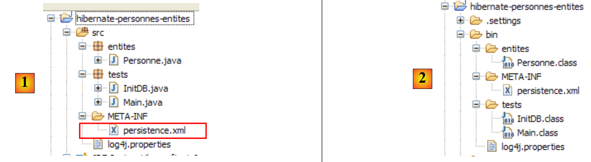 |
Tijdens de uitvoering wordt het bestand [META-INF/persistence.xml] gezocht in de map classpath van de applicatie. In ons Eclipse-project wordt alles wat zich in de map [/src] [1] bevindt, gekopieerd naar een map [/bin] [2]. Deze map maakt deel uit van de map classpath van het project. Daarom wordt [META-INF/persistence.xml] gevonden wanneer de laag JPA wordt geconfigureerd.
Standaard plaatst Eclipse de broncodes niet in de map [/src] van het project, maar direct in de map zelf. Al onze Eclipse-projecten zullen zo worden geconfigureerd dat de broncodes in [/src] staan en de gecompileerde klassen in [/bin], zoals weergegeven in paragraaf 5.2.1.
Laten we de configuratie van de laag JPA bekijken, die is vastgelegd in het bestand [persistence.xml] van ons project:
<?xml version="1.0" encoding="UTF-8"?>
<persistence version="1.0" xmlns="http://java.sun.com/xml/ns/persistence">
<persistence-unit name="jpa" transaction-type="RESOURCE_LOCAL">
<!-- provider -->
<provider>org.hibernate.ejb.HibernatePersistence</provider>
<properties>
<!-- persistente klassen -->
<property name="hibernate.archive.autodetection" value="class, hbm" />
<!-- logs SQL
<property name="hibernate.show_sql" value="true"/>
<property name="hibernate.format_sql" value="true"/>
<property name="use_sql_comments" value="true"/>
-->
<!-- verbinding JDBC -->
<property name="hibernate.connection.driver_class" value="com.mysql.jdbc.Driver" />
<property name="hibernate.connection.url" value="jdbc:mysql://localhost:3306/jpa" />
<property name="hibernate.connection.username" value="jpa" />
<property name="hibernate.connection.password" value="jpa" />
<!-- automatische aanmaak van het schema -->
<property name="hibernate.hbm2ddl.auto" value="create" />
<!-- Dialect -->
<property name="hibernate.dialect" value="org.hibernate.dialect.MySQL5InnoDBDialect" />
<!-- eigenschappen DataSource c3p0 -->
<property name="hibernate.c3p0.min_size" value="5" />
<property name="hibernate.c3p0.max_size" value="20" />
<property name="hibernate.c3p0.timeout" value="300" />
<property name="hibernate.c3p0.max_statements" value="50" />
<property name="hibernate.c3p0.idle_test_period" value="3000" />
</properties>
</persistence-unit>
</persistence>
Om deze configuratie te begrijpen, moeten we terugkeren naar de architectuur van de gegevenstoegang in onze applicatie:
 |
- het bestand [persistence.xml] configureert de lagen [4, 5, 6]
- [4]: Hibernate-implementatie van JPA
- [5]: Hibernate heeft toegang tot de database via een verbindingspool. Een verbindingspool is een voorraad open verbindingen met SGBD. Een SGBD wordt door meerdere gebruikers benaderd, terwijl het om prestatieredenen niet meer dan een limiet N aan gelijktijdig geopende verbindingen mag hebben. Goed geschreven code opent zo kort mogelijk een verbinding met de SGBD: de code voert SQL-opdrachten uit en sluit vervolgens de verbinding. Dit wordt herhaaldelijk gedaan, telkens wanneer er met de database moet worden gewerkt. De kosten voor het openen en sluiten van een verbinding zijn niet te verwaarlozen en hier komt de verbindingspool om de hoek kijken. Deze opent bij het opstarten van de applicatie N1 verbindingen met de SGBD. De applicatie vraagt bij de pool om een open verbinding wanneer deze nodig is. Deze wordt aan de pool teruggegeven zodra de applicatie deze niet meer nodig heeft, bij voorkeur zo snel mogelijk. De verbinding wordt niet gesloten en blijft beschikbaar voor de volgende gebruiker. Een verbindingspool is dus een systeem voor het delen van open verbindingen.
- [6]: de driver JDBC van de gebruikte SGBD
Laten we nu eens kijken hoe het bestand [persistence.xml] de bovenstaande lagen [4, 5, 6] configureert:
- regel 2: de root-tag van het bestand XML is <persistence>.
- regel 3: <persistence-unit> wordt gebruikt om een persistentie-eenheid te definiëren. Er kunnen meerdere persistentie-eenheden zijn. Elk daarvan heeft een naam (attribuut name) en een transactietype (attribuut transaction-type). De applicatie krijgt toegang tot de persistentie-eenheid via de naam ervan, in dit geval jpa. Het transactietype RESOURCE_LOCAL geeft aan dat de applicatie zelf de transacties beheert met SGBD. Dat is hier het geval. Wanneer de applicatie in een EJB3-container draait, kan zij gebruikmaken van de transactieservice van die container. In dit geval stellen we transaction-type=JTA (Java Transaction API) in. JTA is de standaardwaarde wanneer het attribuut transaction-type ontbreekt.
- regel 5: de tag <provider> wordt gebruikt om een klasse te definiëren die de interface [javax.persistence.spi.PersistenceProvider] implementeert; deze interface stelt de applicatie in staat de persistentielayer te initialiseren. Omdat we een JPA/Hibernate-implementatie gebruiken, is de hier gebruikte klasse een Hibernate-klasse.
- regel 6: de tag <properties> introduceert eigenschappen die specifiek zijn voor de gekozen provider. Afhankelijk van of je Hibernate, Toplink, Kodo, ... hebt gekozen, zul je dus verschillende eigenschappen hebben. De volgende eigenschappen zijn specifiek voor Hibernate.
- regel 8: vraagt Hibernate om de classpath van het project te doorzoeken op klassen met de annotatie @Entity, om deze te beheren. De @Entity-klassen kunnen ook worden gedeclareerd met <class>nom_de_la_classe</class>-tags, direct onder de <persistence-unit>-tag. Dit is wat we zullen doen met de provider JPA / Toplink.
- De regels 10-12, die hier zijn uitgecommentarieerd, configureren de console-logs van Hibernate:
- regel 10: om al dan niet de door Hibernate uitgevoerde SQL-opdrachten op de SGBD weer te geven. Dit is erg nuttig tijdens de leerfase. Vanwege de relatie tussen relaties en objecten werkt de applicatie met persistente objecten waarop ze bewerkingen van het type [persist, merge, remove] toepast. Het is zeer interessant om te weten welke SQL-opdrachten daadwerkelijk bij deze bewerkingen worden gegenereerd. Door deze te bestuderen, krijg je langzamerhand een idee van de SQL-opdrachten die Hibernate zal genereren wanneer je een bepaalde bewerking uitvoert op de persistente objecten, en begint de relatie-objectbrug in je hoofd vorm te krijgen.
- regel 11: de SQL-opdrachten die op de console worden weergegeven, kunnen netjes worden opgemaakt om ze gemakkelijker leesbaar te maken
- regel 12: de weergegeven SQL-opdrachten worden bovendien van commentaar voorzien
- de regels 15-19 definiëren de laag JDBC (laag [6] in de architectuur):
- regel 15: de driverklasse JDBC van de SGBD, hier MySQL5
- regel 16: de URL van de gebruikte database
- regels 17, 18: de gebruiker van de verbinding en zijn wachtwoord
- We gebruiken hier elementen die in de bijlagen bij paragraaf 5.5 worden uitgelegd. De lezer wordt verzocht dit gedeelte over MySQL5 te lezen.
- regel 22: Hibernate moet weten met welke SGBD het te maken heeft. De SGBD’en hebben namelijk allemaal eigen SQL-extensies, een eigen manier om de automatische generatie van primaire sleutelwaarden te beheren, ... waardoor Hibernate de SGBD moet kennen waarmee het werkt, om de SQL-opdrachten te kunnen verzenden die deze zal begrijpen. [MySQL5InnoDBDialect] verwijst naar de SGBD MySQL5 met tabellen van het type InnoDB die transacties ondersteunen.
- de regels 24-28 configureren de verbindingspool c3p0 (laag [5] in de architectuur):
- regels 24, 25: het minimale (standaard 3) en maximale aantal verbindingen (standaard 15) in de pool. Het standaard aantal verbindingen bij het opstarten is 3.
- regel 26: maximale wachttijd in milliseconden voor een verbindingsverzoek van de client. Na deze tijd stuurt c3p0 een uitzondering terug.
- regel 27: om toegang te krijgen tot de BD, gebruikt Hibernate voorbereide SQL-opdrachten (PreparedStatement) die c3p0 in de cache kan opslaan. Dit betekent dat als de applicatie voor de tweede keer een voorbereide SQL-opdracht opvraagt die al in de cache staat, deze niet opnieuw hoeft te worden voorbereid (het voorbereiden van een SQL-opdracht brengt kosten met zich mee) en de opdracht uit de cache wordt gebruikt. Hier wordt het maximale aantal voorbereide SQL-opdrachten aangegeven dat de cache kan bevatten, voor alle verbindingen samen (een voorbereide SQL-opdracht hoort bij één verbinding).
- regel 28: frequentie in milliseconden waarmee de geldigheid van de verbindingen wordt gecontroleerd. Een verbinding uit de pool kan om verschillende redenen ongeldig worden (de driver JDBC maakt de verbinding ongeldig omdat deze te lang duurt, de driver JDBC vertoont "bugs", ...).
- regel 20: hier wordt gevraagd dat bij het initialiseren van de persistentie-eenheid de databasestructuur van de @Entity-objecten wordt gegenereerd. Hibernate beschikt nu over alle tools om de SQL-opdrachten voor het genereren van de databasetabellen uit te voeren:
- aan de hand van de configuratie van de @Entity-objecten weet het welke tabellen moeten worden gegenereerd
- de regels 15-18 en 24-28 stellen het in staat een verbinding met de SGBD tot stand te brengen
- regel 22 geeft aan welk dialect SQL moet worden gebruikt om de tabellen te genereren
Het hier gebruikte bestand [persistence.xml] maakt dus bij elke nieuwe uitvoering van de applicatie een nieuwe database aan. De tabellen worden opnieuw aangemaakt (create table) nadat ze zijn verwijderd (drop table), mochten ze al bestaan. Let wel: dit mag uiteraard niet worden gedaan met een productiedatabase...
Uit tests is gebleken dat de drop/create-fase van de tabellen kan mislukken. Dit was met name het geval wanneer men voor dezelfde test overschakelde van een JPA/Hibernate-laag naar een JPA/Toplink-laag of omgekeerd. Op basis van dezelfde @Entity-objecten genereren de twee implementaties niet strikt dezelfde tabellen, generators, sequenties, ... en het kwam soms voor dat de drop/create-fase mislukte en dat men gedwongen was de tabellen handmatig te verwijderen. In het gedeelte „Bijlagen”, paragraaf 5 en verder, worden de applicaties beschreven die kunnen worden gebruikt om dit werk handmatig uit te voeren. Opgemerkt moet worden dat de implementatie JPA/Hibernate het meest efficiënt bleek te zijn in deze fase van de initiële aanmaak van de database-inhoud: er waren zelden crashes.
De tools die door de JPA/Hibernate-laag worden gebruikt, bevinden zich in de bibliotheek [jpa-hibernate], die in paragraaf 1.5 op pagina 8 wordt beschreven. De JDBC-stuurprogramma's die nodig zijn om toegang te krijgen tot de SGBD bevinden zich in de bibliotheek [jpa-divers]. Deze twee bibliotheken zijn opgenomen in de classpath van het hier onderzochte project. Hieronder geven we een overzicht van de inhoud ervan:
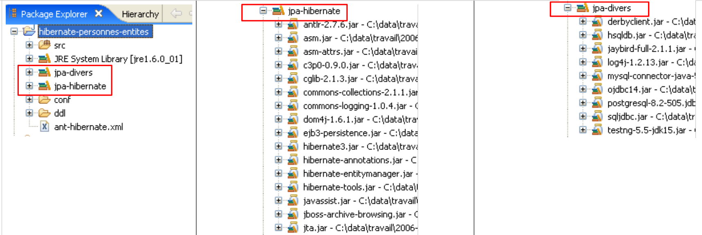 |
2.1.6. Het genereren van de database met een Ant-script
Zoals we zojuist hebben gezien, biedt Hibernate tools om de beelddatabase van de @Entity-objecten van de applicatie te genereren. Hibernate kan:
- het tekstbestand met de opdrachten SQL genereren waarmee de database wordt aangemaakt. Hierbij wordt alleen het dialect in [persistence.xml] gebruikt.
- de tabellen aanmaken die de @Entity-objecten weerspiegelen in de doeldatabase die is gedefinieerd in [persistence.xml]. In dat geval wordt het volledige bestand [persistence.xml] gebruikt.
We zullen een Ant-script presenteren waarmee het databaseschema en de objecttabellen van de @Entity-objecten kunnen worden gegenereerd. Dit script is niet van mij: het is gebaseerd op een soortgelijk script uit [ref1]. Ant (Another Neat Tool) is een batchverwerkingstool voor Java-taken. De scripts Ant zijn voor beginners niet eenvoudig te begrijpen. We zullen er slechts één gebruiken, namelijk het script dat we nu toelichten:
 |
- in [1]: de mapstructuur van de voorbeelden in deze tutorial.
- in [2]: de map [personnes-entites] van het Eclipse-project dat we momenteel bestuderen
- in [3]: de map <lib> met de vijf jar-bibliotheken die in paragraaf 1.5 zijn gedefinieerd.
- in [4]: het archief [hibernate-tools.jar] dat nodig is voor een van de taken van het script [ant-hibernate.xml] dat we gaan bestuderen.
 |
- in [5]: het Eclipse-project en het script [ant-hibernate.xml]
- in [6]: de map [src] van het project
Het script [ant-hibernate.xml] [5] maakt gebruik van de JAR-bestanden uit de map <lib> [3], met name het archief [hibernate-tools.jar] [4] uit de map [lib/hibernate]. We hebben de mapstructuur weergegeven zodat de lezer kan zien dat om de map [lib] te vinden vanuit de map [personnes-entites] [2] van het script [ant-hibernate.xml], het volgende pad moet worden gevolgd: ../../../lib.
Laten we het script [ant-hibernate.xml] eens bekijken:
<project name="jpa-hibernate" default="compile" basedir=".">
<!-- projectnaam en versie -->
<property name="proj.name" value="jpa-hibernate" />
<property name="proj.shortname" value="jpa-hibernate" />
<property name="version" value="1.0" />
<!-- Algemene eigenschappen -->
<property name="src.java.dir" value="src" />
<property name="lib.dir" value="../../../lib" />
<property name="build.dir" value="bin" />
<!-- het classpath van het project -->
<path id="project.classpath">
<fileset dir="${lib.dir}">
<include name="**/*.jar" />
</fileset>
</path>
<!-- de configuratiebestanden die in het classpath moeten staan-->
<patternset id="conf">
<include name="**/*.xml" />
<include name="**/*.properties" />
</patternset>
<!-- Project opschonen -->
<target name="clean" description="Nettoyer le projet">
<delete dir="${build.dir}" />
<mkdir dir="${build.dir}" />
</target>
<!-- Project compileren -->
<target name="compile" depends="clean">
<javac srcdir="${src.java.dir}" destdir="${build.dir}" classpathref="project.classpath" />
</target>
<!-- Configuratiebestanden naar het classpath kopiëren -->
<target name="copyconf">
<mkdir dir="${build.dir}" />
<copy todir="${build.dir}">
<fileset dir="${src.java.dir}">
<patternset refid="conf" />
</fileset>
</copy>
</target>
<!-- Hibernate-tools -->
<taskdef name="hibernatetool" classname="org.hibernate.tool.ant.HibernateToolTask" classpathref="project.classpath" />
<!-- De DDL van de database genereren -->
<target name="DDL" depends="compile, copyconf" description="Génération DDL base">
<hibernatetool destdir="${basedir}">
<classpath path="${build.dir}" />
<!-- META-INF/persistence.xml gebruiken -->
<jpaconfiguration />
<!-- exporteren -->
<hbm2ddl drop="true" create="true" export="false" outputfilename="ddl/schema.sql" delimiter=";" format="true" />
</hibernatetool>
</target>
<!-- De database genereren -->
<target name="BD" depends="compile, copyconf" description="Génération BD">
<hibernatetool destdir="${basedir}">
<classpath path="${build.dir}" />
<!-- Gebruik META-INF/persistence.xml -->
<jpaconfiguration />
<!-- exporteren -->
<hbm2ddl drop="true" create="true" export="true" outputfilename="ddl/schema.sql" delimiter=";" format="true" />
</hibernatetool>
</target>
</project>
- regel 1: het project [ant] heet "jpa-hibernate". Het omvat een reeks taken, waarvan er één de standaardtaak is: in dit geval de taak met de naam "compile". Er wordt een script ant aangeroepen om een taak T uit te voeren. Als deze niet wordt gespecificeerd, wordt de standaardtaak uitgevoerd. basedir="." geeft aan dat voor alle relatieve paden die in het script worden aangetroffen, het uitgangspunt de map is waarin het script ant zich bevindt, in dit geval de map <exemples>/hibernate/direct/personnes-entites.
- regels 3-11: definiëren scriptvariabelen met de tag <property name="nomVariable" value="valeurVariable"/>. De variabele kan vervolgens in het script worden gebruikt met de notatie ${nomVariable}. De namen kunnen willekeurig zijn. Laten we even stilstaan bij de variabelen die in de regels 9-11 worden gedefinieerd:
- regel 9: definieert een variabele met de naam "src.java.dir" (de naam is vrij te kiezen) die verderop in het script verwijst naar de map die de Java-broncode bevat. De waarde ervan is "src", een relatief pad naar de map die wordt aangeduid door het attribuut basedir (regel 1). Het gaat dus om het pad „./src”, waarbij . hier verwijst naar de map <exemples>/hibernate/direct/personnes-entites. De Java-broncode bevindt zich inderdaad in de map <personnes-entites>/src (zie [6] hierboven).
- regel 10: definieert een variabele met de naam "lib.dir" die verderop in het script de map zal aanduiden die de JAR-bestanden bevat die nodig zijn voor de Java-taken van het script. De waarde ../../../lib verwijst naar de map <exemples>/lib (zie [3] hierboven).
- regel 11: definieert een variabele met de naam "build.dir" die verderop in het script de map zal aanduiden waarin de .class-bestanden moeten worden gegenereerd die voortkomen uit de compilatie van de .java-broncodes. De waarde "bin" verwijst naar de map <personnes-entites>/bin. We hebben al uitgelegd dat in het besproken Eclipse-project de map <bin> de map was waarin de .class-bestanden werden gegenereerd. Ant doet hetzelfde.
- regels 14-18: de tag <path> wordt gebruikt om elementen van de classpath te definiëren die door de taken ant moeten worden gebruikt. Hier omvat het pad "project.classpath" (de naam is vrij te kiezen) alle .jar-archieven in de mapstructuur van de map <exemples>/lib.
- regels 21-24: de tag <patternset> wordt gebruikt om een reeks bestanden aan te duiden aan de hand van naam patronen. Hier verwijst de met „conf“ benoemde patternset naar alle bestanden met de extensie .xml of .properties. Deze patternset wordt gebruikt om de .xml- en .properties-bestanden in de map <src> aan te duiden (persistence.xml, log4j.properties) (zie [6]), die configuratiebestanden van de applicatie zijn. Bij het uitvoeren van bepaalde taken moeten deze bestanden naar de map <bin> worden gekopieerd, zodat ze in de classpath van het project terechtkomen. We gebruiken dan de patternset conf om ze aan te duiden.
- regels 27-30: de tag <target> duidt een taak in het script aan. Dit is de eerste die we tegenkomen. Alles wat hieraan voorafgaat, heeft betrekking op de configuratie van de uitvoeringsomgeving van het script ant. De taak heet clean. Deze wordt in twee stappen uitgevoerd: de map <bin> wordt verwijderd (regel 28) om vervolgens opnieuw te worden aangemaakt (regel 29).
- regels 33-35: de taak `compile`, de standaardtaak van het script (regel 1). Deze is afhankelijk (attribuut `depends`) van de taak `clean`. Dit betekent dat ant, voordat de taak ‘compile’ wordt uitgevoerd, eerst de taak ‘clean’ (c.a.d) moet uitvoeren om de map <bin> op te schonen. Het doel van de taak ‘compile’ is hier het compileren van de Java-broncodes uit de map <src>.
- regel 34: aanroep van de Java-compiler met drie parameters:
- srcdir: de map met de Java-broncodes, in dit geval de map <src>
- destdir: de map waarin de gegenereerde .class-bestanden moeten worden opgeslagen, hier de map <bin>
- classpathref: het classpath dat voor de compilatie moet worden gebruikt, in dit geval alle jar-archieven in de mapstructuur van de map <lib>
- (vervolg)
- regels 38-45: de taak `copyconf`, die tot doel heeft alle `.xml`- en `.properties`-bestanden uit de map `<src>` naar de map `<bin>` te kopiëren.
- regel 48: definitie van een taak met behulp van de tag <taskdef>. Een dergelijke taak is bedoeld om elders in het script te worden hergebruikt. Dit is een hulpmiddel bij het programmeren. Omdat de taak op verschillende plaatsen in het script wordt gebruikt, wordt deze één keer gedefinieerd met de tag <taskdef> en vervolgens, wanneer dat nodig is, via de naam hergebruikt.
- De taak heet hibernatetool (attribuut name).
- De klasse wordt gedefinieerd door het attribuut classname. In dit geval is de aangeduide klasse te vinden in het archief [hibernate-tools.jar] waarover we het al hebben gehad.
- Het attribuut classpathref geeft aan ant aan waar de voorgaande klasse moet worden gezocht
- (vervolg)
- de regels 51-60 hebben betrekking op de taak die ons hier interesseert, namelijk het genereren van het beelddatabaseschema van de @Entity-objecten van ons Eclipse-project.
- regel 51: de taak heet DDL (afgeleid van Data Definition Language, de SQL die verband houdt met het aanmaken van databaseobjecten). Deze taak is afhankelijk van de taken ‘compile’ en ‘copyconf’, in die volgorde. De taak DDL zorgt er dus voor dat de taken clean, compile en copyconf in die volgorde worden uitgevoerd. Wanneer de taak DDL start, bevat de map <bin> de .class-bestanden van de .java-broncodes, met name van de @Entity-objecten, evenals het bestand [META-INF/persistence.xml] dat de JPA/Hibernate-laag configureert.
- regels 53-59: de taak [hibernatetool], gedefinieerd op regel 48, wordt aangeroepen. Er worden talrijke parameters aan doorgegeven, naast de parameters die al op regel 48 zijn gedefinieerd:
- regel 53: de uitvoermap voor de door de taak geproduceerde resultaten is de huidige map.
- regel 54: de <bin>-map van de taak classpath
- regel 56: geeft de taak [hibernatetool] aan hoe deze zijn uitvoeringsomgeving kan herkennen: de tag <jpaconfiguration/> geeft aan dat de taak zich in een JPA-omgeving bevindt en dat hij daarom het bestand [META-INF/persistence.xml] moet gebruiken, dat hij hier in zijn classpath zal vinden.
- regel 58 bepaalt de voorwaarden voor het genereren van de database: drop=true geeft aan dat SQL drop table-opdrachten moeten worden uitgevoerd vóór het aanmaken van de tabellen; create=true geeft aan dat het tekstbestand met de SQL-opdrachten voor het aanmaken van de database moet worden aangemaakt; outputfilename geeft de naam van dit bestand aan: SQL – hier schema.sql in de map <ddl> van het Eclipse-project; export=false geeft aan dat de gegenereerde SQL-opdrachten niet mogen worden uitgevoerd in een verbinding met de SGBD. Dit is belangrijk: het betekent dat het doel-SGBD niet hoeft te worden gestart om de taak uit te voeren. delimiter bepaalt het teken dat twee SQL-opdrachten in het gegenereerde schema van elkaar scheidt; format=true zorgt ervoor dat de gegenereerde tekst op basisniveau wordt opgemaakt.
- de regels 51-60 hebben betrekking op de taak die ons hier interesseert, namelijk het genereren van het beelddatabaseschema van de @Entity-objecten van ons Eclipse-project.
- (vervolg)
- de regels 63-72 definiëren de taak met de naam BD. Deze is identiek aan de vorige taak DDL, behalve dat deze keer de database wordt gegenereerd (export="true" in regel 70). De taak opent een verbinding met de taak SGBD met de gegevens uit [persistence.xml], om daar het schema SQL uit te voeren en de database te genereren. Om de taak BD uit te voeren, moet SGBD dus gestart zijn.
2.1.7. Uitvoering van de taak ant DDL
Om het script [ant-hibernate.xml] uit te voeren, moeten we eerst enkele instellingen in Eclipse aanpassen.
 |
- in [1]: selecteer [External Tools]
- in [2]: maak een nieuwe configuratie aan ant
 |
- naar [3]: geef de configuratie ant een naam
- in [5]: het script ant selecteren met behulp van de knop [4]
- in [6]: de wijzigingen toepassen
- in [7]: de configuratie ant DDL is aangemaakt
 |
 |
- in [8]: op het tabblad JRE wordt bepaald welke JRE moet worden gebruikt. Het veld [10] is normaal gesproken vooraf ingevuld met het JRE dat door Eclipse wordt gebruikt. Er hoeft dus normaal gesproken niets op dit paneel te worden gedaan. Toch ben ik een geval tegengekomen waarbij het script ant de compiler <javac> niet kon vinden. Deze bevindt zich niet in een JRE (Java Runtime Environment), maar in een JDK (Java Development Kit). De Eclipse-tool ant vindt deze compiler via de omgevingsvariabele JAVA_HOME (Start / Configuratiescherm / Prestaties en onderhoud / Systeem / tabblad Geavanceerd / knop Omgevingsvariabelen) [A]. Als deze variabele niet is gedefinieerd, kun je ervoor zorgen dat ant de <javac>-compiler kan vinden door in [10] niet een JRE, maar een JDK in te voeren. Deze is beschikbaar in dezelfde map als JRE en [B]. We gebruiken de knop [9] om de JDK aan te geven als een van de beschikbare JRE en [C], zodat we deze vervolgens kunnen selecteren in [10].
- in [12]: in het tabblad [Targets] selecteert men de taak DDL. Zo zal de configuratie ant, die we DDL [7] hebben genoemd, overeenkomen met de uitvoering van de taak met de naam DDL [12], die, zoals bekend het schema DDL genereert voor de afbeeldingsdatabase van de @Entity-objecten van de applicatie.
 |
- naar [13]: de configuratie wordt gevalideerd
- in [14]: we voeren deze uit
In de weergave [console] worden de logbestanden weergegeven van de uitvoering van de taak ant DDL:
Buildfile: C:\data\2006-2007\eclipse\dvp-jpa\hibernate\direct\personnes-entites\ant-hibernate.xml
clean:
[delete] Deleting directory C:\data\2006-2007\eclipse\dvp-jpa\hibernate\direct\personnes-entites\bin
[mkdir] Created dir: C:\data\2006-2007\eclipse\dvp-jpa\hibernate\direct\personnes-entites\bin
compile:
[javac] Compiling 3 source files to C:\data\2006-2007\eclipse\dvp-jpa\hibernate\direct\personnes-entites\bin
copyconf:
[copy] Copying 2 files to C:\data\2006-2007\eclipse\dvp-jpa\hibernate\direct\personnes-entites\bin
DDL:
[hibernatetool] Executing Hibernate Tool with a JPA Configuration
[hibernatetool] 1. task: hbm2ddl (Generates database schema)
[hibernatetool] drop table if exists jpa01_personne;
[hibernatetool] create table jpa01_personne (
[hibernatetool] ID integer not null auto_increment,
[hibernatetool] VERSION integer not null,
[hibernatetool] NOM varchar(30) not null unique,
[hibernatetool] PRENOM varchar(30) not null,
[hibernatetool] DATENAISSANCE date not null,
[hibernatetool] MARIE bit not null,
[hibernatetool] NBENFANTS integer not null,
[hibernatetool] primary key (ID)
[hibernatetool] ) ENGINE=InnoDB;
BUILD SUCCESSFUL
Total time: 5 seconds
- we herinneren ons dat de taak DDL de naam [hibernatetool] heeft (regel 10) en dat deze afhankelijk is van de taken clean (regel 2), compile (regel 5) en copyconf (regel 7).
- regel 10: de taak [hibernatetool] verwerkt het bestand [persistence.xml] van een configuratie JPA
- regel 11: de taak [hbm2ddl] genereert het schema DDL van de database
- regels 12-22: het schema DDL van de database
We herinneren ons dat we de taak [hbm2ddl] hadden gevraagd om het schema DDL op een specifieke locatie te genereren:
<hbm2ddl drop="true" create="true" export="true" outputfilename="ddl/schema.sql" delimiter=";" format="true" />
- regel 74: het schema moet worden gegenereerd in het bestand ddl/schema.sql. Laten we dit controleren:
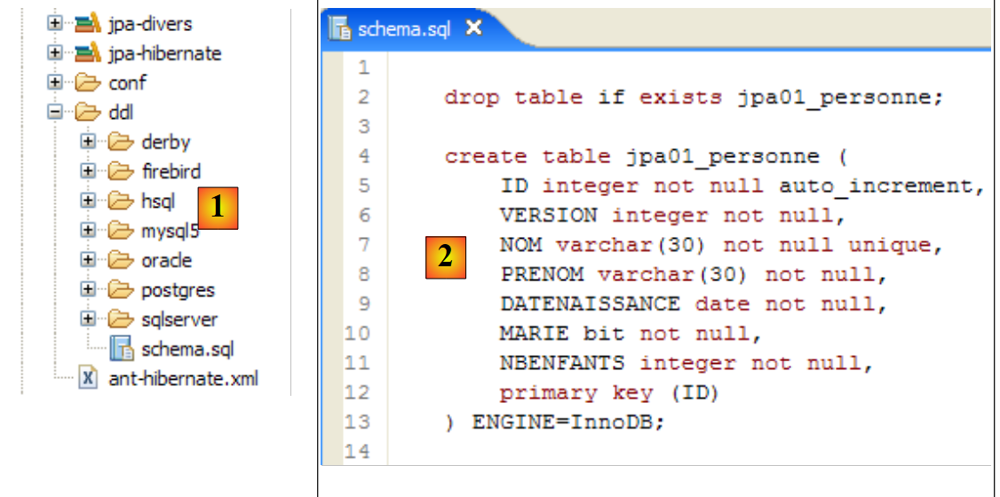 |
- in [1]: het bestand ddl/schema.sql is inderdaad aanwezig (voer F5 uit om de boomstructuur te vernieuwen)
- in [2]: de inhoud ervan. Dit is het schema van een database MySQL5. Het configuratiebestand [persistence.xml] van de laag JPA specificeerde inderdaad een SGBD MySQL5 (regel 8 hieronder):
<!-- verbinding JDBC -->
<property name="hibernate.connection.driver_class" value="com.mysql.jdbc.Driver" />
...
<!-- automatische aanmaak van het schema -->
<property name="hibernate.hbm2ddl.auto" value="create" />
<!-- dialect -->
<property name="hibernate.dialect" value="org.hibernate.dialect.MySQL5InnoDBDialect" />
<!-- eigenschappen DataSource c3p0 -->
...
Laten we de object-relatiekoppeling bekijken die hier is gemaakt door de configuratie van het @Entity-object Personne en het gegenereerde schema DDL te onderzoeken:
 |
 |
Er zijn een aantal punten die de aandacht verdienen:
- A1-B1: de tabelnaam die in A1 is opgegeven, is inderdaad dezelfde als die in B1 wordt gebruikt. Let op drop, dat in B1 voorafgaat aan create.
- A2-B2: toont de wijze waarop de primaire sleutel wordt gegenereerd. De modus AUTO, gespecificeerd in A2, heeft geresulteerd in het attribuut autoincrement dat eigen is aan MySQL5. De generatiemodus van de primaire sleutel is meestal specifiek voor SGBD.
- A3-B3: toont het SQL-type met een bit die specifiek is voor MySQL5 om een Java-type boolean weer te geven.
Laten we deze test opnieuw uitvoeren met een andere SGBD:
 |
- De map [conf] [1] bevat de bestanden [persistence.xml] voor diverse SGBD. Neem bijvoorbeeld het bestand van Oracle [2] en plaats dit in de map [META-INF] [3] ter vervanging van het vorige bestand. De inhoud ervan is als volgt:
<?xml version="1.0" encoding="UTF-8"?>
<persistence version="1.0" xmlns="http://java.sun.com/xml/ns/persistence">
<persistence-unit name="jpa" transaction-type="RESOURCE_LOCAL">
<!-- provider -->
<provider>org.hibernate.ejb.HibernatePersistence</provider>
<properties>
<!-- Persistente klassen -->
<property name="hibernate.archive.autodetection" value="class, hbm" />
<!-- logs SQL
<property name="hibernate.show_sql" value="true"/>
<property name="hibernate.format_sql" value="true"/>
<property name="use_sql_comments" value="true"/>
-->
<!-- verbinding JDBC -->
<property name="hibernate.connection.driver_class" value="oracle.jdbc.OracleDriver" />
<property name="hibernate.connection.url" value="jdbc:oracle:thin:@localhost:1521:xe" />
<property name="hibernate.connection.username" value="jpa" />
<property name="hibernate.connection.password" value="jpa" />
<!-- automatische aanmaak van het schema -->
<property name="hibernate.hbm2ddl.auto" value="create" />
<!-- Dialect -->
<property name="hibernate.dialect" value="org.hibernate.dialect.OracleDialect" />
<!-- eigenschappen DataSource c3p0 -->
<property name="hibernate.c3p0.min_size" value="5" />
<property name="hibernate.c3p0.max_size" value="20" />
<property name="hibernate.c3p0.timeout" value="300" />
<property name="hibernate.c3p0.max_statements" value="50" />
<property name="hibernate.c3p0.idle_test_period" value="3000" />
</properties>
</persistence-unit>
</persistence>
De lezer wordt verzocht om in de bijlagen het hoofdstuk over Oracle (paragraaf 5.7) te lezen, met name om de configuratie van JDBC te begrijpen.
Alleen regel 25 is hier echt van belang: we geven aan Hibernate door dat SGBD voortaan een Oracle-SGBD is. Het uitvoeren van de ant-taak DDL levert het bovenstaande resultaat [4] op. Merk op dat het Oracle-schema verschilt van het schema MySQL5. Dit is een sterk punt van JPA: de ontwikkelaar hoeft zich geen zorgen te maken over deze details, wat de overdraagbaarheid van zijn ontwikkelingen aanzienlijk vergroot.
2.1.8. Uitvoering van de taak ant BD
Misschien herinneren we ons nog dat de taak ant, ook wel BD genoemd, hetzelfde doet als de taak ant DDL, maar bovendien de database genereert. De taak SGBD moet dus worden gestart. We nemen het geval van SGBD en MySQL5 als voorbeeld en verzoeken de lezer het bestand [conf/mysql5/persistence.xml] naar de map [src/META-INF] te kopiëren. Om de werking van de taak te controleren, gebruiken we de plug-in SQL Explorer (zie paragraaf 5.2.6) om de status van het jpa-bestand BD te controleren vóór en na de uitvoering van de taak ant BD.
Allereerst moeten we een nieuwe configuratie ant aanmaken om de taak BD uit te voeren. De lezer wordt verzocht de procedure te volgen die in paragraaf 2.1.7 is beschreven voor de configuratie DDL. De nieuwe configuratie ant krijgt de naam BD:
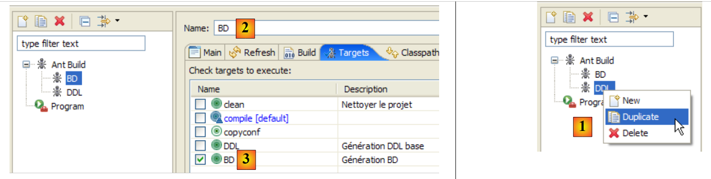 |
- in [1]: de vorige configuratie met de naam DDL wordt gedupliceerd
- naar [2]: de nieuwe configuratie krijgt de naam BD. Deze voert de taak ant BD [3] uit, die de database daadwerkelijk genereert.
- Zodra dit is gebeurd, start u de taken SGBD en MySQL5 (paragraaf 5.5).
We gebruiken nu de plug-in SQL Explorer om de databases te verkennen die door SGBD worden beheerd. De lezer moet zich indien nodig eerst vertrouwd maken met deze plug-in (zie paragraaf 5.2.6).
 |
- [1]: we openen het perspectief SQL Explorer [Window / Open Perspective / Other]
- [2]: maak indien nodig een verbinding [mysql5-jpa] aan (zie paragraaf 5.5.5, pagina 252) en open deze
- [3]: log in met jpa / jpa
- [4]: er is verbinding met MySQL5.
 |
- in [5]: de BD jpa heeft slechts één tabel: [articles]
- in [6]: we starten de uitvoering van de taak ant BD. Omdat we ons in het perspectief [SQL Explorer] bevinden, zien we de weergave [Console] niet, die ons de logbestanden van de taak toont. We kunnen deze weergave [Window / Show View / ...] weergeven of terugkeren naar het Java-perspectief [Window / Open Perspective / ...].
- in [7]: zodra de Ant-taak BD is voltooid, kun je eventueel terugkeren naar het perspectief [SQL Explorer] en de boomstructuur van de BD JPA vernieuwen.
- in [8]: de tabel [jpa01_personne] is nu zichtbaar.
De lezer wordt verzocht deze generatie van BD te herhalen met andere SGBD-bestanden. De te volgen procedure is als volgt:
- kopieer het bestand [conf/<sgbd>/persistence.xml] naar de map [src/META-INF], waarbij <sgbd> de geteste SGBD is
- start <sgbd> op volgens de instructies in de bijlagen die hierop betrekking hebben
- maak in de SQL Explorer-omgeving een verbinding met <sgbd>. Dit wordt ook uitgelegd in de bijlagen voor elk van de SGBD-bestanden
- Herhaal de voorgaande tests
Nu we zover zijn, hebben we een aantal dingen geleerd:
- we begrijpen het concept van de object-relationele brug beter. Hier is deze gerealiseerd door Hibernate. Later zullen we Toplink gebruiken.
- we weten dat deze object-relationele brug op twee plaatsen wordt geconfigureerd:
- in de @Entity-objecten, waar de koppelingen tussen de velden van de objecten en de kolommen van de tabellen worden aangegeven in BD
- in [META-INF/persistence.xml], waar we de implementatie JPA informatie verstrekken over de twee elementen van de object-relatiekoppeling: de @Entity-objecten (object) en de database (relatie).
- We hebben twee Ant-taken aangemaakt, genaamd DDL en BD, waarmee we de database kunnen aanmaken op basis van de voorgaande configuratie, nog voordat er ook maar één regel Java-code is geschreven.
Nu de JPA-laag van onze applicatie correct is geconfigureerd, kunnen we beginnen met het verkennen van de API en JPA met Java-code.
2.1.9. De -persistentieomgeving van een applicatie
Laten we de uitvoeringsomgeving van een JPA-client wat nader toelichten:
 |
We weten dat de laag JPA [2] een brug vormt tussen objecten ([3]) en relaties ([4]). De verzameling objecten die door de laag JPA wordt beheerd in het kader van deze object-relationele brug, wordt de „persistentiecontext” genoemd. Om toegang te krijgen tot de gegevens van de persistentiecontext moet een client JPA [1] via de laag JPA [2] werken:
- hij kan een object aanmaken en de laag JPA vragen om het persistent te maken. Het object maakt dan deel uit van de persistentiecontext.
- het kan de laag [JPA] vragen om een verwijzing naar een bestaand persistent object.
- hij kan een persistent object wijzigen dat is verkregen van de laag JPA.
- hij kan de laag JPA vragen om een object uit de persistentiecontext te verwijderen.
De laag JPA biedt de client een interface met de naam [EntityManager], die, zoals de naam al aangeeft, het beheer van @Entity-objecten in de persistentie-context mogelijk maakt. Hieronder worden de belangrijkste methoden van deze interface weergegeven:
plaatst entity in de persistentiecontext | |
verwijdert entity uit de persistentiecontext | |
voegt een object entity van de client, dat niet door de persistentiecontext wordt beheerd, samen met het object entity uit de persistentiecontext met dezelfde primaire sleutel. Het resultaat is het object entity uit de persistentiecontext. | |
plaatst in de persistentiecontext een object dat in de database is opgezocht via de primaire sleutel. Het type T van het object maakt het mogelijk de laag JPA te bepalen welke tabel moet worden opgevraagd. Het aldus aangemaakte persistente object wordt teruggestuurd naar de client. | |
maakt een Query-object aan op basis van een query JPQL (Java Persistence Query Language). Een query JPQL is vergelijkbaar aan een query SQL, behalve dat er naar objecten wordt gezocht in plaats van naar tabellen. | |
methode die vergelijkbaar is met de vorige, behalve dat queryText een opdracht SQL is en niet JPQL. | |
methode identiek aan createQuery, behalve dat de opdracht JPQL queryText is uitbesteed aan een configuratiebestand en aan een naam is gekoppeld. Deze naam is de parameter van de methode. |
Een object EntityManager heeft een levenscyclus die niet noodzakelijkerwijs dezelfde is als die van de applicatie. Het heeft een begin en een einde. Zo kan een client JPA achtereenvolgens met verschillende objecten EntityManager werken. De persistentiecontext die aan een EntityManager is gekoppeld, heeft dezelfde levenscyclus als het object zelf. Ze zijn onlosmakelijk met elkaar verbonden. Wanneer een EntityManager-object wordt gesloten, wordt de bijbehorende persistentiecontext indien nodig gesynchroniseerd met de database, waarna deze niet langer bestaat. Er moet een nieuw EntityManager worden aangemaakt om weer over een persistentiecontext te beschikken.
De client JPA kan een EntityManager en daarmee een persistentiecontext aanmaken met de volgende instructie:
EntityManagerFactory emf = Persistence.createEntityManagerFactory("jpa");
- javax.persistence.Persistence is een statische klasse waarmee een factory van EntityManager-objecten kan worden verkregen. Deze factory is gekoppeld aan een specifieke persistentie-eenheid. We herinneren ons dat het configuratiebestand [META-INF/persistence.xml] het mogelijk maakt om persistentie-eenheden te definiëren en dat deze een naam hebben:
<persistence-unit name="jpa" transaction-type="RESOURCE_LOCAL">
Hierboven heet de persistentie-eenheid jpa. Daarbij hoort een volledige, eigen configuratie, met name de SGBD waarmee deze samenwerkt. De instructie [Persistence.createEntityManagerFactory("jpa")] creëert een objectfabriek van het type EntityManagerFactory die in staat is om EntityManager-objecten te leveren, bedoeld voor het beheer van persistentie-contexten die gekoppeld zijn aan de persistentie-eenheid met de naam jpa. Het verkrijgen van een object van het type EntityManager en dus van een persistentiecontext gebeurt op basis van het object EntityManagerFactory op de volgende manier:
Met de volgende methoden van de interface [EntityManager] kan de levenscyclus van de persistentiecontext worden beheerd:
de persistentiecontext wordt gesloten. Dwingt de synchronisatie van de persistentiecontext met de database af:
| |
De persistentie-context wordt leeggemaakt van alle objecten, maar niet gesloten. | |
de persistentiecontext wordt gesynchroniseerd met de database op de manier die is beschreven voor close() |
De client JPA kan de synchronisatie van de persistentiecontext met de database forceren met de methode [EntityManager].flush hierboven. De synchronisatie kan expliciet of impliciet zijn. In het eerste geval is het aan de client om flush-bewerkingen uit te voeren wanneer hij synchronisaties wil uitvoeren; anders vindt de synchronisatie plaats op bepaalde momenten die we hieronder zullen specificeren. De synchronisatiemodus wordt beheerd door de volgende methoden van de interface [EntityManager]:
Er zijn twee mogelijke waarden voor flushmode: FlushModeType.AUTO (standaard): de synchronisatie vindt plaats vóór elke SELECT-aanvraag die op de database wordt uitgevoerd. FlushModeType.COMMIT: de synchronisatie vindt pas plaats aan het einde van de transacties in de database. | |
geeft de huidige synchronisatiemodus weer |
Laten we het even samenvatten. In de modus FlushModeType.AUTO, de standaardmodus, wordt de persistentiecontext op de volgende momenten met de database gesynchroniseerd:
- vóór elke bewerking SELECT op basis
- aan het einde van een transactie op de basis
- na een bewerking flush of close in de persistentie-context
In de modus FlushModeType.COMMIT is het hetzelfde, behalve dat bewerking 1 niet plaatsvindt. De normale wijze van interactie met de laag JPA is een transactionele modus. De client voert binnen een transactie diverse bewerkingen uit op de persistentiecontext. In dit geval zijn de synchronisatiemomenten van de persistentiecontext met de database de hierboven genoemde gevallen 1 en 2 in de modus AUTO, en uitsluitend geval 2 in de modus COMMIT.
Laten we afsluiten met de API van de Query-interface, waarmee JPQL-opdrachten naar de persistentiecontext kunnen worden verzonden of SQL-opdrachten rechtstreeks naar de database om daar gegevens op te halen. De Query-interface ziet er als volgt uit:
 |
We zullen de bovenstaande methoden 1 tot en met 4 gaan gebruiken:
- 1 - de methode getResultList voert een SELECT uit die meerdere objecten retourneert. Deze worden opgevangen in een object List. Dit object is een interface. Deze biedt een Iterator-object waarmee de elementen van de lijst L in de volgende vorm kunnen worden doorlopen:
Iterator iterator = L.iterator();
while (iterator.hasNext()) {
// het object iterator.next() verwerken, dat het huidige element van de lijst vertegenwoordigt
...
}
De lijst L kan ook worden gebruikt met een for:
for (Object o : L) {
// het object o gebruiken
}
- 2 - de methode getSingleResult voert een opdracht JPQL / SQL / SELECT uit, die één enkel object retourneert.
- 3 - De methode executeUpdate voert een SQL-opdracht (update of delete) uit en retourneert het aantal rijen waarop de bewerking betrekking heeft.
- 4 - De methode setParameter(String, Object) maakt het mogelijk om een waarde toe te wijzen aan een benoemde parameter van een geconfigureerde opdracht JPQL
- 5 - De methode setParameter(int, Object) gebruikt de parameter echter niet op naam, maar op basis van zijn positie in de opdracht JPQL.
2.1.10. Een eerste client JPA
Laten we terugkeren naar het Java-perspectief van het project:
 |
We weten nu zo ongeveer alles over dit project, behalve de inhoud van de map [src/tests], die we nu gaan bekijken. De map bevat twee testprogramma's van de laag JPA:
- [InitDB.java] is een programma dat enkele rijen in de tabel [jpa01_personne] van de database plaatst. De code ervan zal ons de eerste elementen van de laag JPA opleveren.
- [Main.java] is een programma dat de bewerkingen CRUD uitvoert op de tabel [jpa01_personne]. Door de code ervan te bestuderen, kunnen we de fundamentele concepten van de persistentie-context en de levenscyclus van de objecten in deze context behandelen.
2.1.10.1. De code
De code van het programma [InitDB.java] is als volgt:
package tests;
import java.text.ParseException;
import java.text.SimpleDateFormat;
import javax.persistence.EntityManager;
import javax.persistence.EntityManagerFactory;
import javax.persistence.EntityTransaction;
import javax.persistence.Persistence;
import entites.Personne;
public class InitDB {
// constanten
private final static String TABLE_NAME = "jpa01_personne";
public static void main(String[] args) throws ParseException {
// Persistentie-eenheid
EntityManagerFactory emf = Persistence.createEntityManagerFactory("jpa");
// een EntityManagerFactory ophalen uit de persistentie-eenheid
EntityManager em = emf.createEntityManager();
// transactie starten
EntityTransaction tx = em.getTransaction();
tx.begin();
// elementen uit de personenlijst verwijderen
em.createNativeQuery("delete from " + TABLE_NAME).executeUpdate();
// twee personen aanmaken
Personne p1 = new Personne("Martin", "Paul", new SimpleDateFormat("dd/MM/yy").parse("31/01/2000"), true, 2);
Personne p2 = new Personne("Durant", "Sylvie", new SimpleDateFormat("dd/MM/yy").parse("05/07/2001"), false, 0);
// persistentie van personen
em.persist(p1);
em.persist(p2);
// personen weergeven
System.out.println("[personnes]");
for (Object p : em.createQuery("select p from Personne p order by p.nom asc").getResultList()) {
System.out.println(p);
}
// einde transactie
tx.commit();
// einde EntityManager
em.close();
// einde EntityManagerFactory
emf.close();
// log
System.out.println("terminé ...");
}
}
Deze code moet worden gelezen in het licht van wat in paragraaf 2.1.9 is uitgelegd.
- regel 19: er wordt een EntityManagerFactory emf-object aangevraagd voor de persistentie-eenheid jpa (gedefinieerd in persistence.xml). Deze bewerking wordt normaal gesproken slechts één keer uitgevoerd tijdens de levensduur van een applicatie.
- regel 21: er wordt een EntityManager em-object aangevraagd om een persistentiecontext te beheren.
- regel 23: er wordt een Transaction-object aangevraagd om een transactie te beheren. Hierbij wordt erop gewezen dat bewerkingen op de persistentiecontext binnen een transactie plaatsvinden. We zullen zien dat dit niet verplicht is, maar dat er dan wel problemen kunnen optreden. Als de applicatie wordt uitgevoerd in een EJB3-container, dan vinden bewerkingen op de persistentiecontext altijd plaats binnen een transactie.
- regel 24: de transactie begint
- regel 26: voert een SQL-delete-opdracht uit op de tabel "jpa01_personne" (nativeQuery). Dit wordt gedaan om de tabel volledig leeg te maken, zodat het resultaat van de uitvoering van de applicatie [InitDB] beter zichtbaar is
- regels 28-29: er worden twee objecten Personne p1 en p2 aangemaakt. Dit zijn normale objecten die voorlopig niets te maken hebben met de persistentiecontext. Wat de persistentiecontext betreft, stelt Hibernate dat deze objecten zich in een tijdelijke (transient) toestand bevinden, in tegenstelling tot persistente (persistent) objecten die door de persistentiecontext worden beheerd. We zullen eerder spreken van niet-persistente objecten (een niet-Franse uitdrukking) om aan te geven dat ze nog niet door de persistentiecontext worden beheerd, en van persistente objecten voor de objecten die wel door de persistentiecontext worden beheerd. Er is nog een derde categorie objecten: losgekoppelde (detached) objecten. Dit zijn objecten die voorheen persistent waren, maar waarvan de persistentiecontext is gesloten. De client kan verwijzingen naar dergelijke objecten bevatten, wat verklaart waarom ze niet noodzakelijkerwijs worden vernietigd bij het sluiten van de persistentiecontext. We zeggen dan dat ze zich in een ‘detached’ toestand bevinden. Met de bewerking [EntityManager].merge kunnen ze opnieuw worden gekoppeld aan een nieuw aangemaakte persistentiecontext.
- regels 31-32: de personen p1 en p2 worden via de bewerking [EntityManager].persist in de persistentiecontext opgenomen. Ze worden dan persistente objecten.
- regels 35-37: er wordt een opdracht JPQL uitgevoerd: "select p from Personne p order by p.nom asc". Personne is niet de tabel (die heet jpa01_personne), maar het @Entity-object dat aan de tabel is gekoppeld. We hebben hier te maken met een JPQL-query (Java Persistence Query Language) in de persistentiecontext en niet met een opdracht SQL in de database. Dat gezegd hebbende: afgezien van het object Personne dat de tabel jpa01_personne heeft vervangen, zijn de syntaxisvormen identiek. Een lus for doorloopt de lijst (met personen) die het resultaat is van de select om elk element ervan op de console weer te geven. We willen hier controleren of de elementen die in de persistentiecontext zijn geplaatst (regels 31-32) inderdaad in de tabel terug te vinden zijn. Op transparante wijze vindt er een synchronisatie plaats tussen de persistentiecontext en de database. Er wordt namelijk een query select verzonden en we hebben aangegeven dat dit een van de gevallen is waarin een synchronisatie plaatsvindt. Op dat moment zal JPA / Hibernate de twee opdrachten SQL en insert zal verzenden, waarmee de twee personen in de tabel jpa01_personne worden ingevoegd. De bewerking persist had dit niet gedaan. Deze bewerking voegt objecten toe aan de persistentiecontext zonder dat dit gevolgen heeft voor de database. De daadwerkelijke bewerkingen vinden plaats tijdens de synchronisaties, in dit geval vlak voor de bewerking select in de database.
- regel 39: de transactie die op regel 24 is gestart, wordt afgesloten. Er vindt opnieuw een synchronisatie plaats. Hier gebeurt niets, aangezien de persistentiecontext sinds de laatste synchronisatie niet is gewijzigd.
- regel 41: de persistentiecontext wordt gesloten.
- regel 43: de EntityManager-fabriek wordt gesloten.
2.1.10.2. De uitvoering van de code
- het starten van SGBD MySQL5
- plaats conf/mysql5/persistence.xml in META-INF/persistence.xml indien nodig
- voer de applicatie [InitDB] uit
Dit levert de volgende resultaten op:
 |
- in [1]: de consoleweergave in het Java-perspectief. Dit is wat we verwachtten.
- in [2]: we controleren de inhoud van de tabel [jpa01_personne] met het perspectief SQL Explorer, zoals uitgelegd in paragraaf 2.1.8. Er vallen twee punten op:
- de primaire sleutel ID is automatisch gegenereerd
- hetzelfde geldt voor het versienummer. We zien dat de eerste versie het nummer 0 heeft..
Dit zijn de eerste elementen van de JPA-cultuur. We zijn erin geslaagd gegevens in een tabel in te voeren. We gaan voortbouwen op deze verworvenheden om de tweede test te schrijven, maar laten we het eerst even over logs hebben.
2.1.11. Hibernate-logs implementeren
Het is mogelijk om te achterhalen welke SQL-opdrachten door de JPA-/Hibernate-laag naar de database zijn verzonden. Het is interessant om deze te kennen om te zien of de JPA-laag even efficiënt is als een ontwikkelaar die de SQL-opdrachten zelf zou hebben geschreven.
Met JPA / Hibernate kunnen de logbestanden SQL worden gecontroleerd in het bestand [persistence.xml]:
<!-- Persistente klassen -->
<property name="hibernate.archive.autodetection" value="class, hbm" />
<!-- logboeken SQL
<property name="hibernate.show_sql" value="true"/>
<property name="hibernate.format_sql" value="true"/>
<property name="use_sql_comments" value="true"/>
-->
<!-- verbinding JDBC -->
<property name="hibernate.connection.driver_class" value="com.mysql.jdbc.Driver" />
- regels 4-6: de logbestanden SQL waren tot nu toe niet geactiveerd. We activeren ze nu door de commentaar-tag op regel 3 en 7 te verwijderen.
We voeren de toepassing [InitDB] opnieuw uit. De console-uitvoer ziet er dan als volgt uit:
- regels 2-4: de opdracht SQL delete afkomstig van de instructie:
// elementen uit de personenlijst verwijderen
em.createNativeQuery("delete from " + TABLE_NAME).executeUpdate();
- regels 5-18: de opdrachten SQL insert afkomstig van de instructies:
// persistentie van personen
em.persist(p1);
em.persist(p2);
- regels 21-32: de opdracht SQL select afkomstig uit de instructie:
for (Object p : em.createQuery("select p from Personne p order by p.nom asc").getResultList())
Als we tussentijdse console-uitvoer genereren, zien we dat het schrijven van de SQL-logs van een I-instructie in de Java-code plaatsvindt op het moment dat de I-instructie wordt uitgevoerd. Dit betekent niet dat de weergegeven opdracht SQL op dat moment in de database wordt uitgevoerd. Deze wordt namelijk in de cache opgeslagen om te worden uitgevoerd bij de volgende synchronisatie van de persistentiecontext met de database.
Andere logbestanden kunnen worden verkregen via het bestand [src/log4j.properties]:
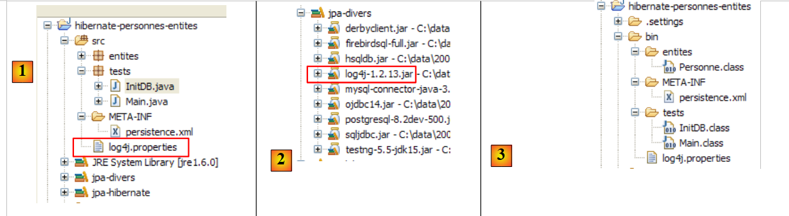 |
- in [1] wordt het bestand [log4j.properties] verwerkt door het archief [log4j-1.2.13.jar] [2] van de tool genaamd LOG4j (Logs for Java), beschikbaar via de URL [http://logging.apache.org/log4j/docs/index.html]. Aangezien het zich in de map [src] van het Eclipse-project bevindt, weten we dat [log4j.properties] automatisch zal worden gekopieerd naar de map [bin] van het project [3]. Nu dit is gebeurd, bevindt het zich in de map classpath van het project en daar zal het archief [2] het ophalen.
Met het bestand [log4j.properties] kunnen we bepaalde Hibernate-logs controleren. Bij eerdere uitvoeringen was de inhoud ervan als volgt:
# Logberichten naar stdout sturen
log4j.appender.stdout=org.apache.log4j.ConsoleAppender
log4j.appender.stdout.Target=System.out
log4j.appender.stdout.layout=org.apache.log4j.PatternLayout
log4j.appender.stdout.layout.ConversionPattern=%d{ABSOLUTE} %5p %c{1}:%L - %m%n
# Optie voor root-logging
log4j.rootLogger=ERROR, stdout
# Opties voor logboekregistratie in de slaapstand (INFO toont alleen opstartberichten)
#log4j.logger.org.hibernate=INFO
# Log de runtime-argumenten van de bindparameters van JDBC
#log4j.logger.org.hibernate.type=DEBUG
Ik zal weinig commentaar geven op deze configuratie, aangezien ik nooit de tijd heb genomen om me serieus te verdiepen in LOG4j.
- De regels 1-8 komen voor in alle log4j.properties-bestanden die ik ben tegengekomen
- de regels 10-14 komen voor in de log4j.properties-bestanden van de Hibernate-voorbeelden.
- regel 11: regelt de algemene logbestanden van Hibernate. Aangezien de regel is uitgecommentarieerd, worden deze logbestanden hier uitgeschakeld. Er zijn verschillende logniveaus mogelijk: INFO (algemene informatie over wat Hibernate doet), WARN (Hibernate waarschuwt ons voor een mogelijk probleem), DEBUG (gedetailleerde logs). Het niveau INFO is het minst uitgebreid, de modus DEBUG het meest uitgebreid. Door regel 11 in te schakelen, kun je zien wat Hibernate doet, met name bij het opstarten van de applicatie. Dit is vaak interessant.
- Als regel 12 is ingeschakeld, kun je zien welke argumenten daadwerkelijk worden gebruikt bij het uitvoeren van de geconfigureerde SQL-query's.
Laten we beginnen met het verwijderen van de commentaarregel op regel 14
# Log JDBC bindparameter-runtime-argumenten
log4j.logger.org.hibernate.type=DEBUG
en voeren we [InitDB] opnieuw uit. De nieuwe logbestanden die door deze wijziging worden gegenereerd, zijn als volgt (gedeeltelijk overzicht):
- de regels 8-10 zijn nieuwe logboekvermeldingen die voortvloeien uit het activeren van regel 14 van [log4j.properties]. Ze geven de 5 waarden weer die zijn toegewezen aan de formele parameters ? van de geparametriseerde query in de regels 2-7. Zo zien we dat de kolom VERSION de waarde 0 krijgt (regel 8).
Laten we nu regel 11 van [log4j.properties] activeren:
en voeren we [InitDB] opnieuw uit:
Het doorlezen van deze logbestanden levert veel interessante informatie op:
- regel 7: Hibernate geeft de naam weer van een @Entity-klasse die het heeft gevonden
- regel 8: geeft aan dat de klasse [Personne] gekoppeld zal worden aan de tabel [jpa01_personne]
- regel 9: geeft de te gebruiken verbindingspool C3P0 aan, de naam van de JDBC-driver en de URL van de te beheren database
- regel 10: geeft andere kenmerken van de JDBC-verbinding weer: eigenaar, type commit, ...
- regel 14: het dialect dat wordt gebruikt voor de communicatie met SGBD
- regel 15: het type transactie dat wordt gebruikt. JDBCTransactionFactory geeft aan dat de applicatie zelf haar transacties beheert. Ze draait niet in een EJB3-container die een eigen transactieservice zou leveren.
- De volgende regels hebben betrekking op configuratieopties van Hibernate die we nog niet zijn tegengekomen. De geïnteresseerde lezer wordt verwezen naar de documentatie van Hibernate.
- regel 37: de SQL-opdrachten worden op de console weergegeven. Dit is aangevraagd in [persistence.xml]:
<property name="hibernate.show_sql" value="true" />
<property name="hibernate.format_sql" value="true" />
<property name="use_sql_comments" value="true" />
- regels 43-45: het databaseschema wordt geëxporteerd naar SGBD en c.a.d. De database wordt leeggemaakt en vervolgens opnieuw aangemaakt. Dit mechanisme vloeit voort uit de configuratie in [persistence.xml] (regel 4 hieronder):
...
<property name="hibernate.connection.password" value="jpa" />
<!-- automatische aanmaak van het schema -->
<property name="hibernate.hbm2ddl.auto" value="create" />
<!-- Dialect -->
...
Wanneer een applicatie „crasht“ met een onbegrijpelijke Hibernate-uitzondering, schakelen we eerst de Hibernate-logs in de modus DEBUG in [log4j.properties] in om meer duidelijkheid te krijgen:
# Optie voor root-logger
log4j.rootLogger=ERROR, stdout
# Hibernate-logboekopties (INFO toont alleen opstartberichten)
log4j.logger.org.hibernate=DEBUG
In het vervolg van dit document worden de logbestanden standaard uitgeschakeld om de consoleweergave overzichtelijker te maken.
2.1.12. Maak kennis met de -taal JPQL / HQL met de Hibernate-console
Opmerking: Voor dit gedeelte is de Hibernate Tools-plugin vereist (paragraaf 5.2.5).
In de code van de applicatie [InitDB] hebben we een query JPQL gebruikt. JPQL (Java Persistence Query Language) is een taal voor het uitvoeren van query’s in de persistentiecontext. De aangetroffen query was als volgt:
Deze selecteerde alle elementen uit de tabel die gekoppeld is aan de @Entity [Personne] en gaf deze weer in oplopende volgorde op naam. In de bovenstaande query is p.nom het veld ‘naam’ van een instantie p van de klasse [Personne]. Een query JPQL werkt dus op de @Entity-objecten van de persistentiecontext en niet rechtstreeks op de tabellen in de database. De laag JPA vertaalt deze query JPQL vervolgens naar een query SQL die geschikt is voor de SGBD waarmee zij werkt. Zo zal in het geval van een JPA-implementatie / Hibernate die is gekoppeld aan een SGBD MySQL5, wordt de voorgaande query JPQL omgezet in de volgende query SQL:
select
personne0_.ID as ID0_,
personne0_.VERSION as VERSION0_,
personne0_.NOM as NOM0_,
personne0_.PRENOM as PRENOM0_,
personne0_.DATENAISSANCE as DATENAIS5_0_,
personne0_.MARIE as MARIE0_,
personne0_.NBENFANTS as NBENFANTS0_
from
jpa01_personne personne0_
order by
personne0_.NOM asc
De laag JPA heeft de configuratie van het @Entity-object [Personne] gebruikt om de juiste opdracht SQL te genereren. Hier is de object-relationele brug geïmplementeerd.
De plug-in [Hibernate Tools] (paragraaf 5.2.5) biedt een tool genaamd „Hibernate Console” waarmee
- JPQL-opdrachten of de bovenliggende set HQL (Hibernate Query Language) in de persistentiecontext te genereren
- de resultaten daarvan op te vragen
- te achterhalen welk SQL-equivalent in de database is uitgevoerd
De Hibernate-console is een uiterst waardevol hulpmiddel om de taal JPQL te leren en vertrouwd te raken met de brug JPQL / SQL. Het is bekend dat JPA sterk is geïnspireerd op ORM-tools zoals Hibernate of Toplink. JPQL lijkt sterk op de HQL-taal van Hibernate, maar bevat niet alle functionaliteiten ervan. In de Hibernate-console kunnen HQL-opdrachten worden gegeven die normaal gesproken in de console worden uitgevoerd, maar die geen deel uitmaken van de JPQL-taal en dus niet in een JPA-client kunnen worden gebruikt. Wanneer dit het geval is, zullen we dit aangeven.
Laten we een Hibernate-console aanmaken voor ons huidige Eclipse-project:
 |
- [1]: we schakelen over naar een [Hibernate Console]-perspectief (Window / Open Perspective / Other)
- [2]: we maken een nieuwe configuratie aan in het venster [Hibernate Configuration]
- met behulp van de knop [4] selecteren we het Java-project waarvoor de Hibernate-configuratie wordt aangemaakt. De naam ervan wordt weergegeven in [3].
- In [5] geven we deze configuratie de gewenste naam. Hier hebben we [3] overgenomen.
- In [6] geven we aan dat we een configuratie JPA gebruiken, zodat de tool weet dat hij het bestand [META-INF/persistence.xml] moet verwerken
- naar [7]: we geven aan dat in dit bestand [META-INF/persistence.xml] de persistentie-eenheid jpa moet worden gebruikt.
- In [8] valideren we de configuratie.
Vervolgens moet SGBD worden gestart. Hier gaat het om MySQL5.
 |
- in [1]: de aangemaakte configuratie vertoont een boomstructuur met drie takken
- in [2]: de tak [Configuration] geeft een overzicht van de objecten die de console heeft gebruikt om zichzelf te configureren: hier de @Entity Personne.
- in [3]: de Session Factory is een Hibernate-concept dat vergelijkbaar is met de EntityManager van JPA. Deze vormt de brug tussen objecten en relaties dankzij de objecten in de tak [Configuration]. In [3] worden de objecten van de persistentiecontext gepresenteerd, hier opnieuw de @Entity Personne.
- In [4]: de database die wordt benaderd via de configuratie in [persistence.xml]. Hierin bevindt zich de tabel [jpa01_personne].
 |
- in [1] wordt een editor HQL aangemaakt
- in de editor HQL,
- in [2], kies je de Hibernate-configuratie die je wilt gebruiken als er meerdere zijn
- in [3], voer je de opdracht JPQL in die je wilt uitvoeren
- in [4] voert u het uit
- in [5] worden de resultaten van de query weergegeven in het venster [Hibernate Query Result]. Hier kunnen twee problemen optreden:
- er wordt niets weergegeven (geen enkele rij). De Hibernate-console heeft de inhoud van [persistence.xml] gebruikt om een verbinding met SGBD tot stand te brengen. Deze configuratie bevat echter een eigenschap die aangeeft dat de database moet worden leeggemaakt:
<property name="hibernate.hbm2ddl.auto" value="create" />
Je moet dus de toepassing [InitDB] opnieuw uitvoeren voordat je het bovenstaande commando JPQL opnieuw uitvoert.
- (vervolg)
- Het venster [Hibernate Query Result] wordt niet weergegeven. Dit venster roepen we op via [Window / Show View / ...]
In het venster [Hibernate Dynamic SQL preview] (hieronder [1]) is de aanvraag SQL te zien die zal worden uitgevoerd om de opdracht JPQL uit te voeren die we op dit moment aan het schrijven zijn. Zodra de syntaxis van het commando JPQL correct is, verschijnt het bijbehorende commando SQL in dit venster:
 |
- in [2], verwijderen we de vorige opdracht HQL
- in [3] voeren we een nieuwe opdracht uit
- in [4], het resultaat
- in [5], de opdracht SQL die op basis daarvan is uitgevoerd
De editor HQL biedt hulp bij het schrijven van de opdrachten HQL:
 |
- in [1]: zodra de editor weet dat p een object Personne is, kan hij ons tijdens het typen de velden van p voorstellen.
- in [2]: een onjuiste opdracht HQL. Je moet where p.marie=true typen.
- in [3]: de fout wordt gemeld in het venster [SQL Preview]
We nodigen de lezer uit om nog meer HQL / JPQL-opdrachten op de database uit te voeren.
2.1.13. Een tweede client JPA
Laten we terugkeren naar het Java-perspectief van het project:
|
- [InitDB.java] is een programma dat enkele rijen in de tabel [jpa01_personne] van de database plaatste. Door de code ervan te bestuderen, hebben we de eerste elementen van API en JPA verkregen.
- [Main.java] is een programma dat de bewerkingen CRUD uitvoert op de tabel [jpa01_personne]. Door de code ervan te bestuderen, kunnen we terugkomen op de fundamentele concepten van de persistentie-context en de levenscyclus van de objecten in deze context.
2.1.13.1. De structuur van de code
[Main.java] voert een reeks tests uit, die elk bedoeld zijn om een specifiek aspect van JPA te illustreren:
 |
De methode [main]
- roept achtereenvolgens de methoden test1 tot en met test11 aan. We zullen de code van elk van deze methoden afzonderlijk bespreken.
- maakt bovendien gebruik van privé-hulpprogramma's: clean, dump, log, getEntityManager, getNewEntityManager.
We presenteren de methode main en de zogenaamde hulpprogramma's:
package tests;
...
import entites.Personne;
@SuppressWarnings("unchecked")
public class Main {
// Constanten
private final static String TABLE_NAME = "jpa01_personne";
// Persistentiecontext
private static EntityManagerFactory emf = Persistence.createEntityManagerFactory("jpa");
private static EntityManager em = null;
// Gedeelde objecten
private static Personne p1, p2, newp1;
public static void main(String[] args) throws Exception {
// databaseopschoning
log("clean");clean();
// tabel dumpen
dump();
// test1
log("test1");test1();
...
// test11
log("test11");test11();
// einde persistentiecontext
if (em.isOpen())
em.close();
// EntityManagerFactory afsluiten
emf.close();
}
// de huidige EntityManager ophalen
private static EntityManager getEntityManager() {
if (em == null || !em.isOpen()) {
em = emf.createEntityManager();
}
return em;
}
// een nieuwe EntityManager ophalen
private static EntityManager getNewEntityManager() {
if (em != null && em.isOpen()) {
em.close();
}
em = emf.createEntityManager();
return em;
}
// de inhoud van de tabel weergeven
private static void dump() {
// huidige persistentiecontext
EntityManager em = getEntityManager();
// transactie starten
EntityTransaction tx = em.getTransaction();
tx.begin();
// personen weergeven
System.out.println("[personnes]");
for (Object p : em.createQuery("select p from Personne p order by p.nom asc").getResultList()) {
System.out.println(p);
}
// einde transactie
tx.commit();
}
// BD wissen
private static void clean() {
// persistentiecontext
EntityManager em = getEntityManager();
// begin transactie
EntityTransaction tx = em.getTransaction();
tx.begin();
// elementen uit de tabel verwijderen PERSONNES
em.createNativeQuery("delete from " + TABLE_NAME).executeUpdate();
// einde transactie
tx.commit();
}
// logbestanden
private static void log(String message) {
System.out.println("main : ----------- " + message);
}
// objecten aanmaken
public static void test1() throws ParseException {
...
}
// een contextobject wijzigen
public static void test2() {
...
}
// objecten opvragen
public static void test3() {
...
}
// een object uit de persistentiecontext verwijderen
public static void test4() {
....
}
// ontkoppelen, opnieuw koppelen en wijzigen
public static void test5() {
...
}
// een object verwijderen dat niet tot de persistentiecontext behoort
public static void test6() {
...
}
// een object wijzigen dat niet tot de persistentiecontext behoort
public static void test7() {
...
}
// een object opnieuw koppelen aan de persistentiecontext
public static void test8() {
...
}
// een SELECT-query leidt tot een synchronisatie
// van de database met de persistentiecontext
public static void test9() {
....
}
// versiebeheer (optimistische vergrendeling)
public static void test10() {
...
}
// een transactie terugdraaien
public static void test11() throws ParseException {
...
}
}
- regel 13: het emf-object EntityManagerFactory, opgebouwd op basis van de jpa-persistentie-eenheid die is gedefinieerd in [persistence.xml]. Hiermee kunnen we in de loop van de applicatie verschillende persistentie-contexten aanmaken.
- regel 14: een nog niet geïnitialiseerde persistentiecontext EntityManager em
- regel 17: drie objecten [Personne] die door de tests worden gedeeld
- regel 21: de tabel jpa01_personne wordt leeggemaakt en vervolgens weergegeven op regel 24 om te controleren of we uitgaan van een lege tabel.
- regels 27-31: reeks van tests
- regels 34-35: de persistentie-context wordt gesloten als deze geopend was.
- regel 38: het EntityManagerFactory-object wordt gesloten.
- regels 42-47: de methode [getEntityManager] maakt het EntityManager (of de persistentiecontext) actueel of nieuw als het niet bestaat (regels 43-44).
- regels 50-56: de methode [getNewEntityManager] maakt een nieuwe persistentiecontext aan. Als er eerder al een bestond, wordt deze gesloten (regels 51-52)
- regels 59-72: de methode [dump] geeft de inhoud van de tabel [jpa01_personne] weer. Deze code is al eerder aangetroffen in [InitDB].
- regels 75-85: de methode [clean] leegt de tabel [jpa01_personne]. Deze code is al eerder aangetroffen in [InitDB].
- regels 88-90: de methode [log] geeft het bericht dat als parameter wordt doorgegeven weer op de console, zodat het opvalt.
We kunnen nu verdergaan met het bestuderen van de tests.
2.1.13.2. Test 1
De code van test1 is als volgt:
// het aanmaken van objecten
public static void test1() throws ParseException {
// persistentiecontext
EntityManager em = getEntityManager();
// personen aanmaken
p1 = new Personne("Martin", "Paul", new SimpleDateFormat("dd/MM/yy").parse("31/01/2000"), true, 2);
p2 = new Personne("Durant", "Sylvie", new SimpleDateFormat("dd/MM/yy").parse("05/07/2001"), false, 0);
// transactie starten
EntityTransaction tx = em.getTransaction();
tx.begin();
// persistentie van personen
em.persist(p1);
em.persist(p2);
// einde transactie
tx.commit();
// de tabel wordt weergegeven
dump();
}
Deze code is al eerder voorgekomen in [InitDB]: hij maakt twee personen aan en plaatst ze in de persistentiecontext.
- regel 4: de huidige persistentiecontext wordt opgevraagd
- regels 6-7: de twee personen worden aangemaakt
- regels 9-15: de twee personen worden binnen een transactie in de persistentiecontext geplaatst.
- regel 15: door het committen van de transactie vindt er een synchronisatie plaats tussen de persistentiecontext en de database. De twee personen worden toegevoegd aan de tabel [jpa01_personne].
- regel 17: de tabel wordt weergegeven
De console-uitvoer van deze eerste test ziet er als volgt uit:
main : ----------- test1
[personnes]
[2,0,Durant,Sylvie,05/07/2001,false,0]
[1,0,Martin,Paul,31/01/2000,true,2]
2.1.13.3. Test 2
De code voor test2 is als volgt:
// een object in de context wijzigen
public static void test2() {
// persistentiecontext
EntityManager em = getEntityManager();
// transactie starten
EntityTransaction tx = em.getTransaction();
tx.begin();
// het aantal kinderen van p1 wordt verhoogd
p1.setNbenfants(p1.getNbenfants() + 1);
// de burgerlijke staat wordt gewijzigd
p1.setMarie(false);
// het object p1 wordt automatisch opgeslagen (dirty checking)
// bij de volgende synchronisatie (commit of select)
// einde transactie
tx.commit();
// de nieuwe tabel wordt weergegeven
dump();
}
- Test 2 heeft tot doel een object in de persistentiecontext te wijzigen en vervolgens de inhoud van de tabel weer te geven om te zien of de wijziging heeft plaatsgevonden
- regel 4: we halen de huidige persistentiecontext op
- regels 6-7: de bewerkingen vinden plaats binnen een transactie
- regels 9, 11: het aantal kinderen van persoon p1 wordt gewijzigd, evenals zijn burgerlijke staat
- regel 15: einde van de transactie, dus synchronisatie van de persistentiecontext met de database
- regel 17: de tabel wordt weergegeven
De console-uitvoer van test 2 is als volgt:
- regel 4: persoon p1 vóór wijziging
- regel 8: persoon p1 na wijziging. Merk op dat het versienummer is veranderd in 1. Dit wordt bij elke update van de regel met 1 verhoogd.
2.1.13.4. Test 3
De code van test 3 is als volgt:
// objecten opvragen
public static void test3() {
// persistentiecontext
EntityManager em = getEntityManager();
// begin transactie
EntityTransaction tx = em.getTransaction();
tx.begin();
// de persoon p1 wordt opgevraagd
Personne p1b = em.find(Personne.class, p1.getId());
// omdat p1 al in de persistentiecontext staat, is er geen toegang tot de database geweest
// p1b en p1 zijn dezelfde verwijzingen
System.out.format("p1==p1b ? %s%n", p1 == p1b);
// het opvragen van een object dat niet bestaat, levert een null-pointer op
Personne px = em.find(Personne.class, -4);
System.out.format("px==null ? %s%n", px == null);
// einde transactie
tx.commit();
}
- Test 3 richt zich op de methode [EntityManager.find], waarmee een object uit de database kan worden opgehaald om het in de persistentiecontext te plaatsen. We leggen de transactie die in alle tests plaatsvindt voortaan niet meer uit, tenzij deze op een ongebruikelijke manier wordt gebruikt.
- regel 9: we vragen de persistentiecontext om de persoon met dezelfde primaire sleutel als persoon p1. Er zijn twee gevallen:
- p1 bevindt zich al in de persistentiecontext. Dat is hier het geval. Er wordt dus geen toegang tot de database verkregen. De methode find geeft alleen een verwijzing naar het object in de persistentiecontext.
- p1 bevindt zich niet in de persistentiecontext. Er wordt dan toegang tot de database verkregen via de opgegeven primaire sleutel. De opgehaalde rij wordt in de persistentiecontext geplaatst en find retourneert de verwijzing naar dit nieuwe persistente object.
- regel 12: er wordt gecontroleerd of find de verwijzing naar het object p1 al in de context heeft teruggegeven
- regel 14: er wordt een object opgevraagd dat noch in de persistentie-context, noch in de database bestaat. De methode find retourneert dan de pointer null. Dit wordt gecontroleerd in regel 15.
De console-uitvoer van test 3 is als volgt:
2.1.13.5. Test 4
De code van test 4 is als volgt:
// een object verwijderen dat tot de persistentiecontext behoort
public static void test4() {
// persistentiecontext
EntityManager em = getEntityManager();
// transactie starten
EntityTransaction tx = em.getTransaction();
tx.begin();
// het gepersisteerde object p2 wordt verwijderd
em.remove(p2);
// transactie beëindigen
tx.commit();
// de nieuwe tabel wordt weergegeven
dump();
}
- Test 4 richt zich op de methode [EntityManager.remove], waarmee een element uit de persistentiecontext en dus uit de database kan worden verwijderd.
- regel 9: persoon p2 wordt uit de persistentiecontext verwijderd
- regel 11: synchronisatie van de context met de database
- regel 13: weergave van de tabel. Normaal gesproken zou persoon p2 hier niet meer moeten staan.
De console-uitvoer van test 4 is als volgt:
- regel 3: persoon p2 in test1
- regels 12-14: deze persoon bestaat niet meer na afloop van test4.
2.1.13.6. Test 5
De code voor test 5 is als volgt:
// loskoppelen, opnieuw koppelen en wijzigen
public static void test5() {
// nieuwe persistentiecontext
EntityManager em = getNewEntityManager();
// begin transactie
EntityTransaction tx = em.getTransaction();
tx.begin();
// p1 losgekoppeld
Personne oldp1=p1;
// p1 wordt opnieuw gekoppeld aan de nieuwe context
p1 = em.find(Personne.class, p1.getId());
// controle
System.out.format("p1==oldp1 ? %s%n", p1 == oldp1);
// einde transactie
tx.commit();
// het aantal kinderen van p1 wordt verhoogd
p1.setNbenfants(p1.getNbenfants() + 1);
// de nieuwe tabel wordt weergegeven
dump();
}
- Test 5 richt zich op de levensduur van objecten die in meerdere opeenvolgende persistentie-contexten worden bewaard. Tot nu toe hadden we in de verschillende tests altijd dezelfde persistentie-context gebruikt.
- regel 4: er wordt een nieuwe persistentiecontext aangevraagd. De methode [getNewEntityManager] sluit de vorige en opent een nieuwe. Dit heeft tot gevolg dat de objecten p1 en p2 die door de applicatie worden beheerd, niet langer in een persistente toestand verkeren. Ze behoorden tot een context die is gesloten. Men zegt dat ze zich in een losgekoppelde toestand bevinden. Ze behoren niet tot de nieuwe persistentiecontext.
- regels 6-7: begin van de transactie. Deze wordt hier op een ongebruikelijke manier gebruikt.
- regel 9: we noteren het adres van het nu losgekoppelde object p1.
- regel 11: de persoon p1 (met de primaire sleutel van p1) wordt opgevraagd bij de persistentiecontext. Aangezien de context nieuw is, bevindt de persoon p1 zich daar niet in. Er zal dus toegang tot de database plaatsvinden. Het opgehaalde object wordt in de nieuwe context geplaatst.
- regel 13: er wordt gecontroleerd of het persistente object p1 van de context verschilt van het object oldp1, dat het oude, losgekoppelde object p1 was.
- regel 15: de transactie is beëindigd
- regel 17: het nieuwe persistente object p1 wordt buiten de transactie gewijzigd. Wat gebeurt er in dit geval? Dat willen we weten.
- regel 19: de tabel wordt weergegeven. Ter herinnering: vanwege de select die door de methode dump is gegenereerd, wordt de persistentiecontext automatisch gesynchroniseerd met de database.
De console-uitvoer van test 5 is als volgt:
- regel 5: de methode find heeft inderdaad toegang tot de database verkregen, anders zouden de twee pointers gelijk zijn
- regels 7 en 3: het aantal kinderen van p1 is inderdaad met 1 toegenomen. De wijziging, die buiten een transactie om is aangebracht, is dus in aanmerking genomen. Dit is in feite afhankelijk van de gebruikte SGBD. In een SGBD wordt een opdracht SQL altijd binnen een transactie uitgevoerd. Als de JPA-client zelf geen expliciete transactie start, zal de SGBD een impliciete transactie starten. Er zijn twee veelvoorkomende gevallen:
- 1 - elke afzonderlijke opdracht SQL maakt deel uit van een transactie, die vóór de opdracht wordt geopend en erna wordt gesloten. Men spreekt dan van de autocommit-modus. Het is dus alsof de client JPA voor elke opdracht SQL een transactie uitvoert.
- 2 - SGBD bevindt zich niet in de autocommit-modus en start een impliciete transactie bij de eerste opdracht SQL die de klant JPA buiten een transactie om verstuurt, en laat de klant deze afsluiten. Alle opdrachten SQL die door de client JPA worden verzonden, maken dan deel uit van de impliciete transactie. Deze transactie kan bij verschillende gebeurtenissen worden beëindigd: de client verbreekt de verbinding, start een nieuwe transactie, ...
We bevinden ons in een situatie die afhankelijk is van de configuratie van SGBD. We hebben dus niet-overdraagbare code. We zullen iets verderop code zonder transacties laten zien en we zullen zien dat niet alle SGBD-opdrachten zich ten opzichte van deze code op dezelfde manier gedragen. We zullen daarom aannemen dat het werken buiten transacties om een programmeerfout is.
- regel 7: merk op dat het versienummer is veranderd in 2.
2.1.13.7. Test 6
De code van test6 is als volgt:
// een object verwijderen dat niet tot de persistentiecontext behoort
public static void test6() {
// nieuwe persistentiecontext
EntityManager em = getNewEntityManager();
// transactie starten
EntityTransaction tx = em.getTransaction();
tx.begin();
// p1, dat niet tot de nieuwe context behoort, wordt verwijderd
try {
em.remove(p1);
// einde transactie
tx.commit();
} catch (RuntimeException e1) {
System.out.format("Erreur à la suppression de p1 : [%s,%s]%n", e1.getClass().getName(), e1.getMessage());
// de transactie wordt teruggedraaid
try {
if (tx.isActive())
tx.rollback();
} catch (RuntimeException e2) {
System.out.format("Erreur au rollback [%s,%s]%n", e2.getClass().getName(), e2.getMessage());
}
}
// de nieuwe tabel wordt weergegeven
dump();
}
- Test 6 probeert een object te verwijderen dat niet tot de persistentiecontext behoort.
- regel 4: er wordt een nieuwe persistentiecontext aangevraagd. De oude wordt dus gesloten en de objecten die deze bevatte, raken losgekoppeld. Dit is het geval voor het object p1 uit de vorige test 5.
- regels 6-7: begin van de transactie.
- regel 10: het losgekoppelde object p1 wordt verwijderd. We weten dat dit een uitzondering zal veroorzaken, dus hebben we de bewerking in een try/catch-blok geplaatst.
- regel 12: de commit vindt niet plaats.
- regels 16-21: een transactie moet eindigen met een commit (alle bewerkingen van de transactie worden bevestigd) of een rollback (alle bewerkingen van de transactie worden ongedaan gemaakt). Er is een uitzondering opgetreden, dus voeren we een rollback uit voor de transactie. Er valt niets ongedaan te maken, aangezien de enige bewerking van de transactie is mislukt, maar de rollback beëindigt de transactie. Dit is de eerste keer dat we de bewerking [EntityTransaction].rollback gebruiken. We hadden dit al vanaf de eerste voorbeelden moeten doen. Om de code eenvoudig te houden, hebben we dit echter niet gedaan. De lezer moet echter in gedachten houden dat het geval van de rollback van de transactie altijd in de code moet worden voorzien.
- regel 24: de tabel wordt weergegeven. Normaal gesproken zou deze niet veranderd moeten zijn.
De console-uitvoer van test 6 is als volgt:
- regel 6: het verwijderen van p1 is mislukt. Het uitzonderingsbericht legt uit dat er een losstaand object is verwijderd dat dus geen deel uitmaakt van de context. Dit is niet mogelijk.
- regel 8: de persoon p1 is er nog steeds.
2.1.13.8. Test 7
De code van test 7 is als volgt:
// een object wijzigen dat niet tot de persistentiecontext behoort
public static void test7() {
// nieuwe persistentiecontext
EntityManager em = getNewEntityManager();
// transactie starten
EntityTransaction tx = em.getTransaction();
tx.begin();
// het aantal onderliggende objecten van p1 dat niet tot de nieuwe context behoort, wordt verhoogd
p1.setNbenfants(p1.getNbenfants() + 1);
// einde transactie
tx.commit();
// de nieuwe tabel wordt weergegeven – deze zou niet veranderd moeten zijn
dump();
}
- Test 7 probeert een object te wijzigen dat niet tot de persistentiecontext behoort, om te zien welke impact dit op de database heeft. We kunnen ons voorstellen dat dit geen invloed heeft. Dat blijkt ook uit de testresultaten.
- regel 4: er wordt een nieuwe persistentiecontext aangevraagd. We hebben dus een nieuwe context zonder daarin opgeslagen objecten.
- regels 6-7: begin van de transactie.
- regel 9: het losgekoppelde object p1 wordt gewijzigd. Dit is een bewerking waarbij de persistentiecontext em niet betrokken is. We hoeven dus geen uitzondering of iets dergelijks te verwachten. Het is een eenvoudige bewerking op een POJO.
- regel 11: de commit zorgt ervoor dat de context met de database wordt gesynchroniseerd. Deze context is leeg. De database wordt dus niet gewijzigd.
- regel 24: de tabel wordt weergegeven. Normaal gesproken zou deze niet veranderd moeten zijn.
De console-uitvoer van test 7 is als volgt:
- regel 7: de persoon p1 is niet gewijzigd in de database. Voor de volgende test moeten we echter wel onthouden dat het aantal kinderen in het geheugen nu 5 is.
2.1.13.9. Test 8
De code voor test 8 is als volgt:
// een object opnieuw koppelen aan de persistentiecontext
public static void test8() {
// nieuwe persistentiecontext
EntityManager em = getNewEntityManager();
// begin transactie
EntityTransaction tx = em.getTransaction();
tx.begin();
// het losgekoppelde object p1 wordt opnieuw aan de nieuwe context gekoppeld
newp1 = em.merge(p1);
// nu maakt newp1 deel uit van de context, niet p1
// einde transactie
tx.commit();
// de nieuwe tabel wordt weergegeven – het aantal kinderen van p1 moet zijn veranderd
dump();
}
- Test 8 koppelt een losgekoppeld object opnieuw aan de persistentiecontext.
- regel 4: er wordt een nieuwe persistentiecontext aangevraagd. We hebben dus een nieuwe context zonder persistente objecten erin.
- regels 6-7: begin van de transactie.
- regel 9: het losgekoppelde object p1 wordt opnieuw aan de persistentiecontext gekoppeld. De merge-bewerking kan verschillende scenario’s omvatten:
- geval 1: er bestaat in de persistentiecontext een persistent object ps1 met dezelfde primaire sleutel als het losgekoppelde object p1. De inhoud van p1 wordt gekopieerd naar ps1 en merge verwijst nu naar ps1.
- Geval 2: er bestaat in de persistentiecontext geen persistent object ps1 met dezelfde primaire sleutel als het losgekoppelde object p1. De database wordt dan doorzocht om na te gaan of het gezochte object in de database bestaat. Zo ja, dan wordt dit object in de persistentie-context opgenomen, wordt het het persistente object ps1 en komen we weer bij het voorgaande geval 1 terecht.
- geval 3: er bestaat noch in de persistentie-context, noch in de database een object met dezelfde primaire sleutel als het losgekoppelde object p1. Er wordt dan een nieuw object [Personne] (new) aangemaakt en vervolgens in de persistentie-context geplaatst. Daarna keert men terug naar geval 1.
- Conclusie: het losgekoppelde object p1 blijft losgekoppeld. De bewerking merge retourneert een verwijzing (hier newp1) naar het persistente object ps1, afkomstig van merge. De clienttoepassing moet nu werken met het persistente object ps1 en niet met het losgekoppelde object p1.
- Er is een verschil tussen geval 1 en 3 wat betreft de opdracht SQL die is gepland voor merge: in de gevallen 1 en 2 is dit opdracht UPDATE, terwijl het in geval 3 een opdracht INSERT is.
- regel 12: de commit zorgt ervoor dat de context met de database wordt gesynchroniseerd. Deze context is niet langer leeg. Hij bevat het object newp1. Dit object wordt in de database opgeslagen.
- regel 24: we geven de tabel weer om dit te controleren.
De console-uitvoer van test 8 ziet er als volgt uit:
- het aantal kinderen van p1 was 4 in test 6 (regel 4), was vervolgens in test 7 gewijzigd naar 5, maar was niet opgeslagen in de database (regel 7). Na merge is newp1 in de database opgeslagen: in regel 10 zijn er inderdaad 5 kinderen.
- regel 10: het versienummer van newp1 is gewijzigd in 3.
2.1.13.10. Test 9
De code voor test9 is als volgt:
// een SELECT-query leidt tot een synchronisatie
// van de database met de persistentiecontext
public static void test9() {
// persistentiecontext
EntityManager em = getEntityManager();
// transactie starten
EntityTransaction tx = em.getTransaction();
tx.begin();
// het aantal kinderen van newp1 wordt verhoogd
newp1.setNbenfants(newp1.getNbenfants() + 1);
// weergave personen – het aantal kinderen van newp1 moet zijn gewijzigd
System.out.println("[personnes]");
for (Object p : em.createQuery("select p from Personne p order by p.nom asc").getResultList()) {
System.out.println(p);
}
// einde transactie
tx.commit();
}
- Test 9 is bedoeld om het synchronisatiemechanisme van de context te laten zien dat automatisch plaatsvindt vóór een select.
- regel 5: de persistentiecontext wordt niet gewijzigd. newp1 zit er dus in.
- regels 7-8: begin van de transactie.
- regel 10: het aantal onderliggende objecten van het persistente object newp1 wordt met 1 verhoogd (5 -> 6).
- regels 12-15: de tabel wordt weergegeven met een SELECT-query. De context wordt gesynchroniseerd met de database voordat select wordt uitgevoerd.
- regel 17: einde van de transactie
Om de synchronisatie te bekijken, schakelen we de weergave van de Hibernate-logs in de modus DEBUG (log4j.properties) in:
# Root-loggeroptie
log4j.rootLogger=ERROR, stdout
# Hibernate-logboekopties (INFO toont alleen opstartberichten)
log4j.logger.org.hibernate=DEBUG
De console-uitvoer van test 9 ziet er als volgt uit:
- regel 1: test 9 start
- regels 2-6: de JDBC-transactie start. De autocommit-modus van SGBD is uitgeschakeld (regel 5)
- regel 7: weergave veroorzaakt door regel 12 van de Java-code. De volgende regels van de Java-code zullen een select veroorzaken en dus een synchronisatie van de persistentiecontext met de database.
- regel 8: de opdracht JPQL die we willen uitvoeren, is al uitgevoerd. Hibernate vindt deze in zijn cache met „voorbereide query’s”.
- regel 9: Hibernate geeft aan dat het de persistentiecontext gaat flushen
- regels 11-12: Hibernate (Hb) ontdekt dat de entiteit Personne#1 (met primaire sleutel 1) is gewijzigd (dirty).
- regels 12-13: Hb meldt dat het dit element bijwerkt en het versienummer van 3 naar 4 verandert.
- regel 15: de synchronisatie van de context zal leiden tot 0 invoegingen, 1 update en 0 verwijderingen
- regels 17-34: synchronisatie van de context (flush). Let op: de versie-incrementatie (regel 19), de voorbereide opdrachtreeks SQL update (regel 21), de waarden van de parameters van de opdrachtreeks update (regels 24-31).
- regel 35: de opdracht select begint
- regel 38: de opdracht SQL die zal worden uitgevoerd
- regel 40: de opdracht select levert slechts één rij op
- regel 42: Hb ontdekt dat het in zijn persistentiecontext al de entiteit Personne#1 heeft die de SELECT-opdracht uit de database heeft opgehaald. Het kopieert de uit de database verkregen regel dan niet naar de context, een bewerking die het „hydratatie” noemt.
- regel 43: hij controleert of de objecten die door de select zijn opgehaald, afhankelijkheden hebben (meestal vreemde sleutels) die ook moeten worden geladen (niet-lazy collections). Hier zijn die er niet.
- regel 44: weergave geïnitieerd door de Java-code
- regel 45: einde van de JDBC-transactie die door de Java-code is aangevraagd
- regel 46: de automatische synchronisatie van de context, die plaatsvindt tijdens de commit, begint.
- regel 48: Hb constateert dat de context niet is veranderd sinds de vorige synchronisatie.
- regel 50: einde van de commit.
Ook nu weer blijken de Hibernate-logs in de modus DEBUG zeer nuttig om precies te weten wat Hibernate doet.
2.1.13.11. Test 10
De code van test10 is als volgt:
// versiebeheer (optimistische vergrendeling)
public static void test10() {
// persistentiecontext
EntityManager em = getEntityManager();
// transactie starten
EntityTransaction tx = em.getTransaction();
tx.begin();
// de versie van newp1 rechtstreeks in de database verhogen (native query)
em.createNativeQuery(String.format("update %s set VERSION=VERSION+1 WHERE ID=%d", TABLE_NAME, newp1.getId())).executeUpdate();
// einde transactie
tx.commit();
// begin nieuwe transactie
tx = em.getTransaction();
tx.begin();
// het aantal kinderen van newp1 wordt verhoogd
newp1.setNbenfants(newp1.getNbenfants() + 1);
// einde transactie – deze moet mislukken omdat newp1 niet meer de juiste versie heeft
try {
tx.commit();
} catch (RuntimeException e1) {
System.out.format("Erreur lors de la mise à jour de newp1 [%s,%s,%s,%s]%n", e1.getClass().getName(), e1.getMessage(), e1.getCause().getClass().getName(), e1.getCause().getMessage());
// de transactie wordt teruggedraaid
try {
if (tx.isActive())
tx.rollback();
} catch (RuntimeException e2) {
System.out.format("Erreur au rollback [%s,%s]%n", e2.getClass().getName(), e2.getMessage());
}
}
// de context die niet meer actueel is, wordt gesloten
em.close();
// dump van de tabel – de versie van p1 moet zijn gewijzigd
dump();
}
- Test 10 is bedoeld om het mechanisme te illustreren dat wordt geïntroduceerd door het veld version van de @Entity Personne, die is voorzien van het attribuut JPA @Version. We hebben uitgelegd dat deze annotatie ervoor zorgt dat in de database de waarde van de kolom die gekoppeld is aan de annotatie @Version wordt verhoogd bij elke bewerking die wordt uitgevoerd op de rij waartoe deze behoort. Dit mechanisme, ook wel optimistische vergrendeling (optimistic locking) genoemd, vereist dat de client die een object O in de database wil wijzigen, over de laatste versie daarvan beschikt. Als dat niet het geval is, betekent dit dat het object is gewijzigd sinds de client het heeft opgehaald en moet de client hiervan op de hoogte worden gesteld.
- regel 4: de persistentiecontext wordt niet gewijzigd. newp1 bevindt zich dus nog steeds daarin.
- regels 6-7: begin van een transactie.
- regel 9: de versie van het object newp1 wordt rechtstreeks in de database met 1 verhoogd (4 -> 5). Verzoeken van het type nativeQuery omzeilen de persistentiecontext en schrijven rechtstreeks naar de database. Het gevolg is dat het persistente object newp1 en zijn afspiegeling in de database niet langer dezelfde versie hebben.
- regel 10: einde van de eerste transactie
- regels 13-14: begin van een tweede transactie
- regel 16: het aantal kinderen van het persistente object newp1 wordt met 1 verhoogd (6 -> 7).
- regel 19: einde van de transactie. Er vindt dus een synchronisatie plaats. Dit zal leiden tot een bijwerking van het aantal onderliggende objecten van newp1 in de database. Dit zal mislukken omdat het persistente object newp1 versie 4 heeft, terwijl het bij te werken object in de database versie 5 heeft. Er wordt een uitzondering gegenereerd, wat de try/catch-constructie in de code rechtvaardigt.
- regel 21: de uitzondering en de oorzaak ervan worden weergegeven.
- regel 25: de transactie wordt teruggedraaid
- regel 33: weergave van de tabel: we zouden moeten zien dat de versie van newp1 in de database 5 is.
De console-uitvoer van test 10 is als volgt:
- regel 5: de commit genereert inderdaad een uitzondering. Het betreft het type [javax.persistence.RollbackException]. Het bijbehorende bericht is vaag. Als we kijken naar de oorzaak van deze uitzondering (Exception.getCause), zien we dat er een Hibernate-uitzondering is omdat er wordt geprobeerd een rij in de database te wijzigen zonder de juiste versie te hebben.
- regel 7: we zien dat de versie van newp1 in de database inderdaad is gewijzigd naar 5 door nativeQuery.
2.1.13.12. Test 11
De code van test11 is als volgt:
// rollback van een transactie
public static void test11() throws ParseException {
// persistentiecontext
EntityManager em = getEntityManager();
// begin transactie
EntityTransaction tx = null;
try {
tx = em.getTransaction();
tx.begin();
// p1 wordt opnieuw aan de context gekoppeld door het uit de database op te halen
p1 = em.find(Personne.class, p1.getId());
// het aantal kinderen van p1 wordt verhoogd
p1.setNbenfants(p1.getNbenfants() + 1);
// personen weergeven – het aantal kinderen van p1 moet zijn gewijzigd
System.out.println("[personnes]");
for (Object p : em.createQuery("select p from Personne p order by p.nom asc").getResultList()) {
System.out.println(p);
}
// aanmaken van 2 personen met dezelfde naam, wat verboden is door de DDL
Personne p3 = new Personne("X", "Paul", new SimpleDateFormat("dd/MM/yy").parse("31/01/2000"), true, 2);
Personne p4 = new Personne("X", "Paul", new SimpleDateFormat("dd/MM/yy").parse("31/01/2000"), true, 2);
// persistentie van personen
em.persist(p3);
em.persist(p4);
// einde transactie
tx.commit();
} catch (RuntimeException e1) {
// er is een probleem opgetreden
System.out.format("Erreur dans transaction [%s,%s,%s,%s,%s,%s]%n", e1.getClass().getName(), e1.getMessage(),
e1.getCause().getClass().getName(), e1.getCause().getMessage(), e1.getCause().getCause().getClass().getName(), e1.getCause().getCause()
.getMessage());
try {
if (tx.isActive())
tx.rollback();
} catch (RuntimeException e2) {
System.out.format("Erreur au rollback [%s]%n", e2.getMessage());
}
// de huidige context wordt verlaten
em.clear();
}
// dump – de tabel mag niet zijn gewijzigd door de rollback
dump();
}
- Test 11 richt zich op het mechanisme van de transactie rollback. Een transactie werkt volgens het alles-of-niets-principe: de bewerkingen SQL die erin zijn opgenomen, worden ofwel allemaal met succes uitgevoerd (commit), ofwel allemaal ongedaan gemaakt als er één mislukt (rollback).
- regel 4: we gaan verder met dezelfde persistentiecontext. De lezer herinnert zich wellicht dat de context werd gesloten na de crash van de vorige test. In dit geval levert [getEntityManager] een gloednieuwe, dus lege context op.
- regels 7-27: één enkele try/catch-constructie om de problemen die we zullen tegenkomen op te vangen
- regels 8-9: begin van een transactie die meerdere bewerkingen zal bevatten: SQL
- regel 11: p1 wordt opgezocht in de database en in de context geplaatst
- regel 13: het aantal kinderen van p1 wordt verhoogd (6 -> 7)
- regels 15-18: de inhoud van de database wordt weergegeven, wat een synchronisatie van de context afdwingt. In de database zal het aantal kinderen van p1 veranderen in 7, wat door de weergave op de console zou moeten worden bevestigd.
- regels 20-21: aanmaken van 2 personen met dezelfde naam: p3 en p4. Het veld ‘naam’ van de @Entity ‘Personne’ heeft echter het attribuut ‘unique=true’, wat tot gevolg heeft gehad dat er een uniekheidsbeperking is ontstaan op de kolom NOM van de tabel [jpa01_personne].
- regels 23-24: de personen p3 en p4 worden in de persistentiecontext geplaatst.
- regel 26: de transactie wordt vastgelegd. Hierop volgt een tweede synchronisatie van de context; de eerste vond plaats bij select. JPA zal twee opdrachten SQL en insert verzenden voor de personen p3 en p4. p3 wordt ingevoegd. Voor p4 zal SGBD een uitzondering genereren, omdat p4 dezelfde naam heeft als p3. p4 wordt dus niet ingevoegd en de JDBC-driver geeft een uitzondering door aan de client.
- regel 27: de uitzondering wordt afgehandeld
- regels 29-31: we geven de uitzondering weer, samen met de twee voorgaande oorzaken in de uitzonderingsketen die ons tot hier hebben geleid.
- regel 34: we voeren een rollback uit van de momenteel actieve transactie. Deze is begonnen op regel 9 van de Java-code. Sindsdien is er een bewerking update uitgevoerd om het aantal kinderen van p1 te wijzigen, gevolgd door een bewerking insert voor de persoon p3. Dit alles wordt door de rollback ongedaan gemaakt.
- regel 39: de persistentiecontext wordt geleegd
- regel 42: de tabel [jpa01_personne] wordt weergegeven. Er moet worden gecontroleerd of p1 nog steeds 6 kinderen heeft en of noch p3, noch p4 in de tabel staan.
De console-uitvoer van test 11 ziet er als volgt uit:
main : ----------- test11
[personnes]
[1,6,Martin,Paul,31/01/2000,false,7]
14:50:30,312 ERROR JDBCExceptionReporter:72 - Duplicate entry 'X' for key 2
Erreur dans transaction [javax.persistence.EntityExistsException,org.hibernate.exception.ConstraintViolationException: could not insert: [entites.Personne],org.hibernate.exception.ConstraintViolationException,could not insert: [entites.Personne],java.sql.SQLException,Duplicate entry 'X' for key 2]
[personnes]
[1,5,Martin,Paul,31/01/2000,false,6]
- regel 3: het aantal kinderen van p1 is in de database gestegen van 6 naar 7, de versie van p1 is gewijzigd naar 6.
- regel 4: de uitzondering die is opgevangen tijdens het vastleggen van de transactie. Als we goed kijken, zien we dat de oorzaak een dubbele sleutel X (de naam) is. Het is het invoegen van p4 dat deze fout veroorzaakt, terwijl het reeds ingevoegde p3 ook de naam X heeft.
- regel 7: de tabel na de rollback. p1 heeft zijn versie 5 en het aantal kinderen 6 teruggekregen; p3 en p4 zijn niet ingevoegd.
2.1.13.13. Test 12
De code voor test12 is als volgt:
// we doen hetzelfde nog eens, maar dan zonder de transacties
// we krijgen hetzelfde resultaat als eerder met de SGBD: FIREBIRD, ORACLE XE, POSTGRES, MYSQL5
// met SQLSERVER is de tabel leeg. De verbinding blijft in een toestand achter die heruitvoering
// van het programma. De server moet dan opnieuw worden opgestart.
// hetzelfde geldt voor de Derby-versie SGBD
// HSQL voegt de eerste persoon in – er vindt geen rollback plaats
public static void test12() throws ParseException {
// p1 wordt opnieuw gekoppeld
p1 = em.find(Personne.class, p1.getId());
// het aantal kinderen van p1 wordt verhoogd
p1.setNbenfants(p1.getNbenfants() + 1);
// personen weergeven – het aantal kinderen van p1 moet zijn gewijzigd
System.out.println("[personnes]");
for (Object p : em.createQuery("select p from Personne p order by p.nom asc").getResultList()) {
System.out.println(p);
}
// aanmaken van 2 personen met dezelfde naam, wat verboden is door de DDL
Personne p3 = new Personne("X", "Paul", new SimpleDateFormat("dd/MM/yy").parse("31/01/2000"), true, 2);
Personne p4 = new Personne("X", "Paul", new SimpleDateFormat("dd/MM/yy").parse("31/01/2000"), true, 2);
// persistentie van personen
em.persist(p3);
em.persist(p4);
// dump die de synchronisatie van de context em met de BD zal veroorzaken
try {
dump();
} catch (RuntimeException e3) {
System.out.format("Erreur dans dump [%s,%s,%s,%s]%n", e3.getClass().getName(), e3.getMessage(), e3.getCause().getClass().getName(), e3
.getCause().getMessage());
}
// de huidige context wordt gesloten
em.close();
// dump
dump();
}
- Test 12 doet hetzelfde als test 11, maar dan buiten de transactie om. We willen zien wat er in dit geval gebeurt.
- regels 1-6: geven de testresultaten weer met verschillende SGBD:
- met een aantal SGBD (Firebird, Oracle, MySQL5, Postgres) krijgen we hetzelfde resultaat als bij test 11. Dit doet vermoeden dat deze SGBD uit eigen beweging een transactie hebben gestart die alle ontvangen SQL-opdrachten omvatte tot aan degene die de fout veroorzaakte, en dat ze zelf een rollback hebben gestart.
- Bij andere SGBD-transacties (SQL Server, Apache Derby) treedt er een crash op van de applicatie en/of van de SGBD.
- met de SGBD en HSQLDB lijkt het erop dat de transactie die door de SGBD is geopend, zich in de modus autocommit bevindt: de wijziging van het aantal kinderen van p1 en de invoeging van p3 worden definitief gemaakt. Alleen de invoeging van p4 mislukt.
Het resultaat is dus afhankelijk van SGBD, waardoor de applicatie niet draagbaar is. Houd er rekening mee dat bewerkingen op de persistentiecontext altijd binnen een transactie moeten plaatsvinden.
2.1.14. SGBD wijzigen
Laten we terugkeren naar de testarchitectuur van ons huidige project:
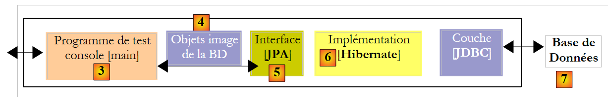 |
De clienttoepassing [3] ziet alleen de interface JPA [5]. Ze ziet noch de daadwerkelijke implementatie ervan, noch het doel SGBD. Het moet dus mogelijk zijn om deze twee elementen in de keten te wijzigen zonder aanpassingen in de client [3]. Dat gaan we nu proberen, te beginnen met het wijzigen van SGBD. Tot nu toe hadden we MySQL5 gebruikt. We presenteren er nog zes andere, beschreven in de bijlagen (paragraaf 5), in de hoop dat daaronder de favoriet van de lezer, SGBD, zit.
In alle gevallen is de aanpassing die in het Eclipse-project moet worden aangebracht eenvoudig (zie hieronder): vervang het configuratiebestand persistence.xml [1] van de laag JPA door een van de bestanden uit de map conf [2] van het project. De stuurprogramma's JDBC en SGBD zijn al aanwezig in de bibliotheek [jpa-divers], [3] en [4].
 |
2.1.14.1. Oracle 10g Express
Oracle 10g Express wordt in de bijlagen in paragraaf 5.7 beschreven. Het Oracle-bestand persistence.xml is als volgt:
<?xml version="1.0" encoding="UTF-8"?>
<persistence version="1.0" xmlns="http://java.sun.com/xml/ns/persistence">
<persistence-unit name="jpa" transaction-type="RESOURCE_LOCAL">
<!-- provider -->
<provider>org.hibernate.ejb.HibernatePersistence</provider>
<properties>
<!-- Persistente klassen -->
<property name="hibernate.archive.autodetection" value="class, hbm" />
<!-- logs SQL
<property name="hibernate.show_sql" value="true"/>
<property name="hibernate.format_sql" value="true"/>
<property name="use_sql_comments" value="true"/>
-->
<!-- verbinding JDBC -->
<property name="hibernate.connection.driver_class" value="oracle.jdbc.OracleDriver" />
<property name="hibernate.connection.url" value="jdbc:oracle:thin:@localhost:1521:xe" />
<property name="hibernate.connection.username" value="jpa" />
<property name="hibernate.connection.password" value="jpa" />
<!-- automatische aanmaak van het schema -->
<property name="hibernate.hbm2ddl.auto" value="create" />
<!-- Dialect -->
<property name="hibernate.dialect" value="org.hibernate.dialect.OracleDialect" />
<!-- eigenschappen DataSource c3p0 -->
<property name="hibernate.c3p0.min_size" value="5" />
<property name="hibernate.c3p0.max_size" value="20" />
<property name="hibernate.c3p0.timeout" value="300" />
<property name="hibernate.c3p0.max_statements" value="50" />
<property name="hibernate.c3p0.idle_test_period" value="3000" />
</properties>
</persistence-unit>
</persistence>
Deze configuratie is identiek aan die voor SGBD en MySQL5, op de volgende details na:
- regels 15-18, die de koppeling JDBC met de database configureren
- regel 22: hierin wordt het te gebruiken dialect SQL vastgelegd
In de volgende voorbeelden zullen we alleen de regels vermelden die veranderen. Voor een toelichting op de configuratie verwijzen we naar de bijlage over de gebruikte SGBD. Daarin wordt telkens een voorbeeld gegeven van het gebruik van de koppeling JDBC, in de context van de plug-in [SQL Explorer]. Met de informatie uit de bijlage kan de lezer de controle van het resultaat van de toepassing van [InitDB], zoals uitgevoerd in paragraaf 2.1.10.2, herhalen.
We gaan te werk zoals aangegeven in de bovengenoemde paragraaf:
- de Oracle-plug-in SGBD starten
- plaats conf/oracle/persistence.xml in META-INF/persistence.xml
- voer de applicatie [InitDB] uit
Op de console verschijnen de volgende resultaten:
 |
Vanaf nu zullen we deze schermafbeelding, die altijd hetzelfde is, niet meer weergeven. Interessanter is het perspectief SQL Explorer van de koppeling JDBC met SGBD. We volgen de procedure die in paragraaf 2.1.8 wordt uitgelegd.
 |
- in [1]: de verbinding met Oracle
- naar [2]: de verbindingsstructuur na uitvoering van [InitDB]
- in [3]: de structuur van de tabel [jpa01_personne]
- in [4]: de inhoud ervan.
Zodra dit is gebeurd, wordt de lezer verzocht de toepassing [Main] uit te voeren en vervolgens SGBD te stoppen.
2.1.14.2. PostgreSQL 8.2
PostgreSQL 8.2 wordt in de bijlagen bij paragraaf 5.6 gepresenteerd. Het bijbehorende bestand persistence.xml is als volgt:
<?xml version="1.0" encoding="UTF-8"?>
<persistence version="1.0" xmlns="http://java.sun.com/xml/ns/persistence">
<persistence-unit name="jpa" transaction-type="RESOURCE_LOCAL">
...
<!-- inloggen JDBC -->
<property name="hibernate.connection.driver_class" value="org.postgresql.Driver" />
<property name="hibernate.connection.url" value="jdbc:postgresql:jpa" />
<property name="hibernate.connection.username" value="jpa" />
<property name="hibernate.connection.password" value="jpa" />
...
<!-- Dialect -->
<property name="hibernate.dialect" value="org.hibernate.dialect.PostgreSQLDialect" />
...
</persistence-unit>
</persistence>
Om [InitDB] uit te voeren:
- SGBD en PostgreSQL starten
- plaats conf/postgres/persistence.xml in META-INF/persistence.xml
- voer de applicatie [InitDB] uit
Het SQL Explorer-overzicht van de koppeling tussen JDBC en SGBD is als volgt:
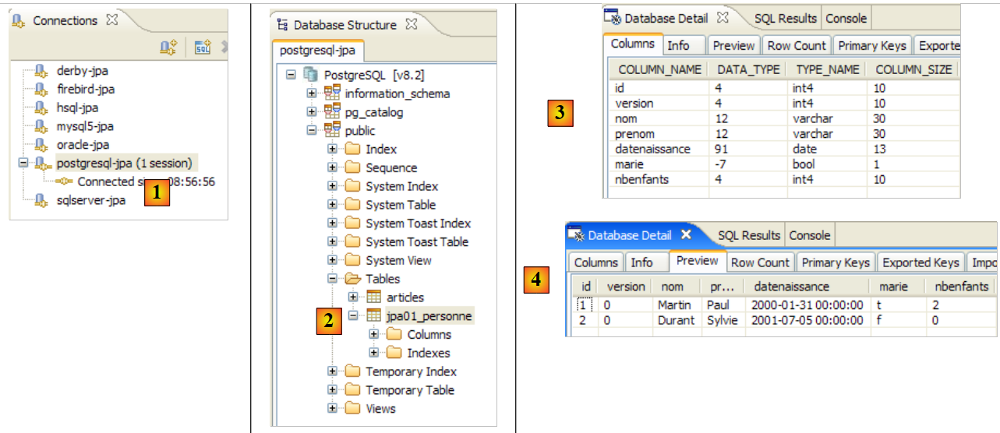 |
- in [1]: de koppeling met PostgreSQL
- in [2]: de verbindingsstructuur na uitvoering van [InitDB]
- in [3]: de structuur van de tabel [jpa01_personne]
- in [4]: de inhoud ervan.
Zodra dit is gebeurd, wordt de lezer gevraagd de toepassing [Main] uit te voeren en vervolgens SGBD te stoppen
2.1.14.3. SQL Server Express 2005
SQL Server Express 2005 wordt in de bijlagen bij paragraaf 5.8, pagina 270, beschreven. Het bijbehorende bestand persistence.xml is als volgt:
<?xml version="1.0" encoding="UTF-8"?>
<persistence version="1.0" xmlns="http://java.sun.com/xml/ns/persistence">
<persistence-unit name="jpa" transaction-type="RESOURCE_LOCAL">
...
<!-- verbinding JDBC -->
<property name="hibernate.connection.driver_class" value="com.microsoft.sqlserver.jdbc.SQLServerDriver" />
<property name="hibernate.connection.url" value="jdbc:sqlserver://localhost\\SQLEXPRESS:1433;databaseName=jpa" />
<property name="hibernate.connection.username" value="jpa" />
<property name="hibernate.connection.password" value="jpa" />
...
<!-- Dialect -->
<property name="hibernate.dialect" value="org.hibernate.dialect.SQLServerDialect" />
...
</persistence-unit>
</persistence>
Om [InitDB] uit te voeren:
- start SGBD SQL Server
- plaats conf/sqlserver/persistence.xml in META-INF/persistence.xml
- voer de toepassing [InitDB] uit
Het SQL Explorer-overzicht van de koppeling tussen JDBC en SGBD is als volgt:
 |
- in [1]: de verbinding met SQL Server
- in [2]: de verbindingsstructuur na uitvoering van [InitDB]
- in [3]: de structuur van de tabel [jpa01_personne]
- in [4]: de inhoud ervan.
Zodra dit is gebeurd, wordt de lezer verzocht de toepassing [Main] uit te voeren en vervolgens SGBD te stoppen
2.1.14.4. Firebird 2.0
Firebird 2.0 wordt in de bijlagen in paragraaf 5.4 beschreven. Het bijbehorende bestand persistence.xml ziet er als volgt uit:
<?xml version="1.0" encoding="UTF-8"?>
<persistence version="1.0" xmlns="http://java.sun.com/xml/ns/persistence">
<persistence-unit name="jpa" transaction-type="RESOURCE_LOCAL">
...
<!-- verbinding JDBC -->
<property name="hibernate.connection.driver_class" value="org.firebirdsql.jdbc.FBDriver" />
<property name="hibernate.connection.url" value="jdbc:firebirdsql:localhost/3050:C:\data\2006-2007\eclipse\dvp-jpa\annexes\firebird\jpa.fdb" />
<property name="hibernate.connection.username" value="sysdba" />
<property name="hibernate.connection.password" value="masterkey" />
...
<!-- Dialect -->
<property name="hibernate.dialect" value="org.hibernate.dialect.FirebirdDialect" />
...
</persistence-unit>
</persistence>
Om [InitDB] uit te voeren:
- start het Firebird-bestand SGBD
- plaats conf/firebird/persistence.xml in META-INF/persistence.xml
- voer de toepassing [InitDB] uit
Het SQL Explorer-overzicht van de koppeling tussen JDBC en SGBD is als volgt:
 |
- in [1]: de verbinding met Firebird
- in [2]: de verbindingsstructuur na uitvoering van [InitDB]
- in [3]: de structuur van de tabel [jpa01_personne]
- in [4]: de inhoud ervan.
Zodra dit is gebeurd, wordt de lezer verzocht de toepassing [Main] uit te voeren en vervolgens SGBD te stoppen.
2.1.14.5. Apache Derby
Apache Derby wordt in de bijlagen in paragraaf 5.10 beschreven. Het bijbehorende bestand persistence.xml ziet er als volgt uit:
<?xml version="1.0" encoding="UTF-8"?>
<persistence version="1.0" xmlns="http://java.sun.com/xml/ns/persistence">
<persistence-unit name="jpa" transaction-type="RESOURCE_LOCAL">
...
<!-- verbinding JDBC -->
<property name="hibernate.connection.driver_class" value="org.apache.derby.jdbc.ClientDriver" />
<property name="hibernate.connection.url" value="jdbc:derby://localhost:1527//data/2006-2007/eclipse/dvp-jpa/annexes/derby/jpa;create=true" />
<property name="hibernate.connection.username" value="jpa" />
<property name="hibernate.connection.password" value="jpa" />
...
<!-- Dialect -->
...
</persistence-unit>
</persistence>
Om [InitDB] uit te voeren:
- start je het Apache Derby-bestand SGBD
- plaats conf/derby/persistence.xml in META-INF/persistence.xml
- voer de toepassing [InitDB] uit
Het SQL Explorer-overzicht van de koppeling tussen JDBC en SGBD is als volgt:
 |
- in [1]: de verbinding met Apache Derby
- in [2]: de verbindingsstructuur na uitvoering van [InitDB]. Let op de tabel [HIBERNATE_UNIQUE_KEY], die door JPA / Hibernate is aangemaakt om automatisch de opeenvolgende waarden van de primaire sleutel ID te genereren. We hebben al aangegeven dat dit mechanisme vaak propriëtair is. Dat is hier duidelijk te zien. Dankzij JPA hoeft de ontwikkelaar zich niet te verdiepen in deze details van SGBD.
- in [3]: de structuur van de tabel [jpa01_personne]
- in [4]: de inhoud ervan.
Zodra dit is gebeurd, wordt de lezer gevraagd de toepassing [Main] uit te voeren en vervolgens SGBD te stoppen.
2.1.14.6. HSQLDB
HSQLDB wordt in de bijlagen bij paragraaf 5.9 weergegeven. Het bijbehorende bestand persistence.xml is als volgt:
<?xml version="1.0" encoding="UTF-8"?>
<persistence version="1.0" xmlns="http://java.sun.com/xml/ns/persistence">
<persistence-unit name="jpa" transaction-type="RESOURCE_LOCAL">
...
<!-- verbinding JDBC -->
<property name="hibernate.connection.driver_class" value="org.hsqldb.jdbcDriver" />
<property name="hibernate.connection.url" value="jdbc:hsqldb:hsql://localhost" />
<property name="hibernate.connection.username" value="sa" />
<!--
<property name="hibernate.connection.password" value="" />
-->
...
<!-- Dialect -->
<property name="hibernate.dialect" value="org.hibernate.dialect.HSQLDialect" />
...
</properties>
</persistence-unit>
</persistence>
Om [InitDB] uit te voeren:
- start SGBD HSQL
- zet conf/hsql/persistence.xml in META-INF/persistence.xml
- de toepassing [InitDB] uitvoeren
Het SQL Explorer-overzicht van de koppeling tussen JDBC en SGBD is als volgt:
 |
- in [1]: de koppeling met HSQL
- in [2]: de verbindingsstructuur na uitvoering van [InitDB].
- in [3]: de structuur van de tabel [jpa01_personne]
- in [4]: de inhoud ervan.
Zodra dit is gebeurd, wordt de lezer verzocht de toepassing [Main] uit te voeren en vervolgens SGBD te stoppen.
2.1.15. Overstappen op de implementatie JPA
Laten we nog eens terugkomen op de testarchitectuur van ons huidige project:
 |
Uit het vorige onderzoek is gebleken dat we de SGBD en [7] konden wijzigen zonder iets te veranderen aan de clientcode [3]. We wijzigen nu de implementatie JPA [6] en laten opnieuw zien dat dit op transparante wijze gebeurt voor de clientcode [3]. We nemen een implementatie TopLink [http://www.oracle.com/technology/products/ias/toplink/jpa/index.html]:
 |
2.1.15.1. Het Eclipse-project
Ter gelegenheid van de wijziging van de implementatie JPA maken we een nieuw Eclipse-project aan om het bestaande project niet te vervuilen. Het nieuwe project maakt namelijk gebruik van persistentiebibliotheken die in conflict kunnen komen met die van Hibernate:
 |
- in [1]: de map [<exemples>/toplink/direct/personnes-entites] bevat het Eclipse-project. Importeer dit project.
- in [2]: het geïmporteerde project [toplink-personnes-entites]. Dit is identiek (het is gekopieerd) aan het project [hibernate-personne-entites], op twee details na:
- het bestand [META-INF/persistence.xml] [3] configureert nu een JPA / Toplink-laag
- de bibliotheek [jpa-hibernate] is vervangen door de bibliotheek [jpa-toplink], [4] en [5] (zie paragraaf 1.5).
- in [6]: de map [conf] bevat voor elke SGBD een versie van het bestand [persistence.xml].
- in [7]: de map [ddl] die de scripts SQL voor het genereren van het databaseschema zal bevatten.
2.1.15.2. De configuratie van de laag JPA / Toplink
We weten dat de laag JPA wordt geconfigureerd door het bestand [META-INF/persistence.xml]. Dit bestand configureert nu een implementatie van JPA / Toplink. De inhoud ervan voor een laag JPA die gekoppeld is aan de SGBD en MySQL5 is als volgt:
<?xml version="1.0" encoding="UTF-8"?>
<persistence version="1.0" xmlns="http://java.sun.com/xml/ns/persistence">
<persistence-unit name="jpa" transaction-type="RESOURCE_LOCAL">
<!-- provider -->
<provider>oracle.toplink.essentials.PersistenceProvider</provider>
<!-- persistente klassen -->
<class>entites.Personne</class>
<!-- eigenschappen van de persistentie-eenheid -->
<properties>
<!-- verbinding JDBC -->
<property name="toplink.jdbc.driver" value="com.mysql.jdbc.Driver" />
<property name="toplink.jdbc.url" value="jdbc:mysql://localhost:3306/jpa" />
<property name="toplink.jdbc.user" value="jpa" />
<property name="toplink.jdbc.password" value="jpa" />
<property name="toplink.jdbc.read-connections.max" value="3" />
<property name="toplink.jdbc.read-connections.min" value="1" />
<property name="toplink.jdbc.write-connections.max" value="5" />
<property name="toplink.jdbc.write-connections.min" value="2" />
<!-- SGBD -->
<property name="toplink.target-database" value="MySQL4" />
<!-- applicatieserver -->
<property name="toplink.target-server" value="None" />
<!-- schemageneratie -->
<property name="toplink.ddl-generation" value="drop-and-create-tables" />
<property name="toplink.application-location" value="ddl/mysql5" />
<property name="toplink.create-ddl-jdbc-file-name" value="create.sql" />
<property name="toplink.drop-ddl-jdbc-file-name" value="drop.sql" />
<property name="toplink.ddl-generation.output-mode" value="both" />
<!-- logbestanden -->
<property name="toplink.logging.level" value="OFF" />
</properties>
</persistence-unit>
</persistence>
- regel 3: is niet gewijzigd
- regel 5: de provider is nu Toplink. De hier genoemde klasse is te vinden in de bibliotheek [jpa-toplink] (hieronder [1]):
 |
- regel 7: de tag <class> wordt gebruikt om alle @Entity-klassen van het project te benoemen, hier alleen de klasse Personne. Hibernate had een configuratieoptie waarmee we deze klassen niet hoefden te benoemen. Het doorzocht de classpath van het project om daar de @Entity-klassen te vinden.
- regel 9: de tag <properties> die eigenschappen introduceert die specifiek zijn voor de gebruikte implementatie JPA, in dit geval Toplink.
- regels 11-14: configuratie van de JDBC-verbinding met SGBD MySQL5
- regels 15-18: configuratie van de JDBC-verbindingspool die native door Toplink wordt beheerd:
- regels 15, 16: het maximale en minimale aantal verbindingen in de verbindingspool voor lezen. Standaard (2,2)
- regels 17, 18: het maximale en minimale aantal verbindingen in de schrijfpool. Standaard (10,2)
- regel 20: de doel-SGBD. De lijst met bruikbare SGBD’en is beschikbaar in het pakket [oracle.toplink.essentials.platform.database] (zie [2] hierboven). De SGBD MySQL5 staat niet in de lijst [2], dus is gekozen voor MySQL4. Toplink ondersteunt iets minder SGBD dan Hibernate. Van de zeven SGBD die in onze voorbeelden worden gebruikt, wordt Firebird dus niet ondersteund. Ook Oracle komt niet voor in de lijst. Het zit namelijk in een ander pakket ([3] hierboven). Als in deze twee pakketten het doel SGBD wordt aangeduid door de klasse <Sgbd>Platform.class, wordt de tag als volgt geschreven:
<property name="toplink.target-database" value="<Sgbd>" />
- regel 22: stelt de applicatieserver in als de applicatie op een dergelijke server draait. De huidige mogelijke waarden (None, OC4J_10_1_3, SunAS9). Standaard (None).
- regels 24-28: wanneer de laag JPA wordt geïnitialiseerd, wordt deze gevraagd de database op te schonen die is gedefinieerd door de JDBC-koppeling in de regels 11-14. Zo wordt er met een lege database begonnen.
- regel 24: Toplink wordt gevraagd om een drop uit te voeren, gevolgd door een create voor de tabellen van het databaseschema
- regel 25: we vragen Toplink om de scripts SQL te genereren voor de bewerkingen drop en create. application-location bepaalt de map waarin deze scripts worden gegenereerd. Standaard: (huidige map).
- regel 26: naam van het script SQL voor de bewerkingen create. Standaard: createDDL.jdbc.
- regel 27: naam van het script SQL van de bewerkingen drop. Standaard: dropDDL.jdbc.
- regel 28: wijze van genereren van het schema (Standaard: both):
- both: scripts en database
- database: alleen database
- sql-script: alleen scripts
- regel 30: de logbestanden van Toplink worden uitgeschakeld (OFF). De verschillende beschikbare inlogniveaus zijn: OFF, SEVERE, WARNING, INFO, CONFIG, FINE, FINER, FINEST. Standaard: INFO.
Raadpleeg de URL [http://www.oracle.com/technology/products/ias/toplink/JPA/essentials/toplink-jpa-extensions.html] voor een uitgebreide beschrijving van de <property>-tags die met Toplink kunnen worden gebruikt.
2.1.15.3. Test [InitDB]
Er hoeft verder niets meer te gebeuren. We zijn klaar om de eerste test [InitDB] uit te voeren:
- start SGBD, hier MySQL5
- voer [InitDB] uit
 |
- in [1]: de console-uitvoer. We zien hier de resultaten die we al hadden verkregen met JPA / Hibernate.
- in [3]: we openen het perspectief [SQL Explorer] en vervolgens de verbinding [mysql5-jpa]
- in [4]: de boomstructuur van de jpa-database. We zien dat de uitvoering van [InitDB] twee tabellen heeft aangemaakt: [jpa01_personne], wat te verwachten was, en de tabel [sequence], wat minder te verwachten was.
 |
- in [5]: de structuur van de tabel [jpa01_personne] en in [6] de inhoud ervan
- in [7]: de structuur van de tabel [sequence] en in [8] de inhoud ervan.
Het configuratiebestand [persistence.xml] vroeg om het genereren van de scripts van DDL:
<!-- schema genereren -->
<property name="toplink.ddl-generation" value="drop-and-create-tables" />
<property name="toplink.application-location" value="ddl/mysql5" />
<property name="toplink.create-ddl-jdbc-file-name" value="create.sql" />
<property name="toplink.drop-ddl-jdbc-file-name" value="drop.sql" />
<property name="toplink.ddl-generation.output-mode" value="both" />
Laten we eens kijken wat er in de map [ddl/mysql5] is gegenereerd:
 |
create.sql
CREATE TABLE jpa01_personne (ID INTEGER NOT NULL, PRENOM VARCHAR(30) NOT NULL, DATENAISSANCE DATE NOT NULL, NOM VARCHAR(30) UNIQUE NOT NULL, MARIE TINYINT(1) default 0 NOT NULL, VERSION INTEGER NOT NULL, NBENFANTS INTEGER NOT NULL, PRIMARY KEY (ID))
CREATE TABLE SEQUENCE (SEQ_NAME VARCHAR(50) NOT NULL, SEQ_COUNT DECIMAL(38), PRIMARY KEY (SEQ_NAME))
INSERT INTO SEQUENCE(SEQ_NAME, SEQ_COUNT) values ('SEQ_GEN', 1)
- regel 1: de DDL uit de tabel [jpa01_personne]. We zien dat Toplink het attribuut `autoincrement` niet heeft gebruikt voor de primaire sleutel ID. Daardoor vindt er geen automatische incrementatie plaats bij het invoegen van rijen.
- regel 2: de DDL uit de tabel [sequence]. De naam lijkt erop te wijzen dat Toplink deze tabel gebruikt om de waarden van de primaire sleutel ID te genereren.
- regel 3: invoegen van één enkele regel in [SEQUENCE]
drop.sql
DROP TABLE jpa01_personne
DELETE FROM SEQUENCE WHERE SEQ_NAME = 'SEQ_GEN'
- regel 1: verwijdering van de tabel [jpa01_personne]
- regel 2: verwijdering van een specifieke regel uit de tabel [SEQUENCE]. De tabel zelf wordt niet verwijderd, evenmin als de eventuele andere regels die deze zou kunnen bevatten.
Voor meer informatie over de rol van de tabel [SEQUENCE] activeert men in [persistence.xml] de Toplink-logs op niveau FINE, een niveau dat de door Toplink verzonden opdrachten SQL registreert:
<!-- logs -->
<property name="toplink.logging.level" value="FINE" />
We voeren InitDB opnieuw uit. Hieronder is slechts een gedeeltelijk overzicht van de consoleweergave weergegeven:
...
[TopLink Config]: 2007.05.28 12:07:52.796--ServerSession(12910198)--Verbinding(30708295)--Thread(Thread[main,5,main])--Verbonden: jdbc:mysql://localhost:3306/jpa
User: jpa@localhost
Database: MySQL Version: 5.0.37-community-nt
Driver: MySQL-AB JDBC Driver Version: mysql-connector-java-3.1.9 ( $Date: 2005/05/19 15:52:23 $, $Revision: 1.1.2.2 $ )
...
[TopLink Fine]: 2007.05.28 12:07:53.093--ServerSession(12910198)--Verbinding(19255406)--Thread(Thread[main,5,main])--DROP TABLE jpa01_personne
[TopLink Fine]: 2007.05.28 12:07:53.265--ServerSession(12910198)--Verbinding(30708295)--Thread(Thread[main,5,main])--CREATE TABLE jpa01_personne (ID INTEGER NOT NULL, PRENOM VARCHAR(30) NOT NULL, DATENAISSANCE DATE NOT NULL, NOM VARCHAR(30) UNIQUE NOT NULL, MARIE TINYINT(1) default 0 NOT NULL, VERSION INTEGER NOT NULL, NBENFANTS INTEGER NOT NULL, PRIMARY KEY (ID))
[TopLink Fine]: 2007.05.28 12:07:53.468--ServerSession(12910198)--Verbinding(19255406)--Thread(Thread[main,5,main])--CREATE TABLE SEQUENCE (SEQ_NAME VARCHAR(50) NOT NULL, SEQ_COUNT DECIMAL(38), PRIMARY KEY (SEQ_NAME))
[TopLink Warning]: 2007.05.28 12:07:53.468--ServerSession(12910198)--Thread(Thread[main,5,main])--Uitzondering [TOPLINK-4002] (Oracle TopLink Essentials - 2.0 (Build b41-beta2 (30-03-2007))): oracle.toplink.essentials.exceptions.DatabaseException
Internal Exception: java.sql.SQLException: Table 'sequence' already exists
Error Code: 1050
Call: CREATE TABLE SEQUENCE (SEQ_NAME VARCHAR(50) NOT NULL, SEQ_COUNT DECIMAL(38), PRIMARY KEY (SEQ_NAME))
Query: DataModifyQuery()
[TopLink Fine]: 2007.05.28 12:07:53.468--ServerSession(12910198)--Verbinding(30708295)--Thread(Thread[main,5,main])--DELETE FROM SEQUENCE WHERE SEQ_NAME = 'SEQ_GEN'
[TopLink Fine]: 2007.05.28 12:07:53.609--ServerSession(12910198)--Verbinding(19255406)--Thread(Thread[main,5,main])--SELECT * FROM SEQUENCE WHERE SEQ_NAME = 'SEQ_GEN'
[TopLink Fine]: 2007.05.28 12:07:53.609--ServerSession(12910198)--Verbinding(30708295)--Thread(Thread[main,5,main])--INSERT INTO SEQUENCE(SEQ_NAME, SEQ_COUNT) waarden ('SEQ_GEN', 1)
[TopLink Fine]: 2007.05.28 12:07:53.734--ClientSession(15308417)--Verbinding(14069849)--Thread(Thread[main,5,main])--verwijderen uit jpa01_personne
[TopLink Fine]: 2007.05.28 12:07:53.750--ClientSession(15308417)--Verbinding(14069849)--Thread(Thread[main,5,main])--UPDATE SEQUENCE SET SEQ_COUNT = SEQ_COUNT + ? WHERE SEQ_NAME = ?
bind => [50, SEQ_GEN]
[TopLink Fine]: 2007.05.28 12:07:53.750--ClientSession(15308417)--Verbinding(14069849)--Thread(Thread[main,5,main])--SELECT SEQ_COUNT FROM SEQUENCE WHERE SEQ_NAME = ?
bind => [SEQ_GEN]
[personnes]
[TopLink Fine]: 2007.05.28 12:07:53.906--ClientSession(15308417)--Verbinding(14069849)--Thread(Thread[main,5,main])--INSERT INTO jpa01_personne (ID, PRENOM, DATENAISSANCE, NOM, MARIE, VERSION, NBENFANTS) VALUES (?, ?, ?, ?, ?, ?, ?)
bind => [3, Sylvie, 2001-07-05, Durant, false, 1, 0]
[TopLink Fine]: 2007.05.28 12:07:53.921--ClientSession(15308417)--Verbinding(14069849)--Thread(Thread[main,5,main])--INSERT INTO jpa01_personne (ID, PRENOM, DATENAISSANCE, NOM, MARIE, VERSION, NBENFANTS) VALUES (?, ?, ?, ?, ?, ?, ?)
bind => [2, Paul, 2000-01-31, Martin, true, 1, 2]
[TopLink Fine]: 2007.05.28 12:07:53.937--ClientSession(15308417)--Verbinding(14069849)--Thread(Thread[main,5,main])--SELECT ID, PRENOM, DATENAISSANCE, NOM, MARIE, VERSION, NBENFANTS FROM jpa01_personne ORDER BY NOM ASC
[3,1,Durant,Sylvie,05/07/2001,false,0]
[2,1,Martin,Paul,31/01/2000,true,2]
[TopLink Config]: 2007.05.28 12:07:54.062--ServerSession(12910198)--Verbinding(30708295)--Thread(Thread[main,5,main])--verbinding verbroken
[TopLink Info]: 2007.05.28 12:07:54.062--ServerSession(12910198)--Thread(Thread[main,5,main])--file:/C:/data/2006-2007/eclipse/dvp-jpa/toplink/direct/personnes-entites/bin/-jpa uitloggen geslaagd
...
terminé ...
- regels 2-5: een verbinding met SGBD met de bijbehorende parameters. Uit de logbestanden blijkt echter dat Toplink in werkelijkheid drie verbindingen met SGBD tot stand brengt. Er moet worden nagegaan of dit aantal verband houdt met een van de configuratiewaarden die voor de JDBC-verbindingspool worden gebruikt:
<property name="toplink.jdbc.read-connections.max" value="3" />
<property name="toplink.jdbc.read-connections.min" value="1" />
<property name="toplink.jdbc.write-connections.max" value="5" />
<property name="toplink.jdbc.write-connections.min" value="2" />
- regel 7: verwijdering van de tabel [jpa01_personne]. Dat is normaal, aangezien het bestand [persistence.xml] vraagt om het opschonen van de JPA-database.
- regel 8: aanmaken van de tabel [jpa01_personne]. We zien dat de primaire sleutel ID niet het attribuut autoincrement heeft.
- regel 9: aanmaken van de tabel [SEQUENCE], die al bestaat en tijdens de vorige uitvoering is aangemaakt.
- regels 10-13: Toplink meldt een fout bij het aanmaken van de tabel [SEQUENCE].
- regels 15-18: Toplink ruimt de tabel [SEQUENCE] op. Na deze opschoning bevat de tabel [SEQUENCE] één rij (SEQ_NAME, SEQ_COUNT) met de waarden ('SEQ_GEN', 1).
- regel 18: de tabel [jpa01_personne] wordt leeggemaakt.
- regels 19-20: Toplink slaat de enige regel over waarin SEQ_NAME='SEQ_GEN' staat uit de tabel [SEQUENCE], van de waarde ('SEQ_GEN', 1) naar de waarde ('SEQ_GEN', 51)
- regel 21: Toplink haalt de waarde 51 op uit de regel ('SEQ_GEN', 51) van de tabel [SEQUENCE].
- regels 24-27: Toplink voegt de twee personen 'Martin' en 'Durant' in de tabel [jpa01_personne] in. Hier schuilt een raadsel: de primaire sleutels van deze twee regels krijgen de waarden 2 en 3 toegewezen, zonder dat bekend is hoe deze waarden tot stand zijn gekomen. Het is onduidelijk of de waarde SEQ_COUNT (51), verkregen in regel 21, ergens voor is gebruikt. Merk op dat de versiewaarde van de regels 1 is, terwijl Hibernate bij 0 begon.
- regel 28: Toplink genereert de waarde SELECT om alle regels uit de tabel [jpa01_personne] op te halen
- regels 29-30: regels weergegeven door de Java-client
- regels 31-32: Toplink sluit een verbinding. Het herhaalt deze bewerking voor elk van de aanvankelijk geopende verbindingen.
Uiteindelijk is de rol van de tabel [SEQUENCE] niet precies bekend, maar het lijkt er toch op dat deze een rol speelt bij het genereren van de waarden van de primaire sleutel ID. Als we het meest gedetailleerde logniveau, FINEST, bekijken, komen we iets meer te weten over de rol van de tabel [SEQUENCE].
<!-- logbestanden -->
<property name="toplink.logging.level" value="FINEST" />
Hieronder hebben we alleen de logboeken behouden die betrekking hebben op het invoeren van de twee personen in de tabel. Hier zien we het mechanisme voor het genereren van de primaire sleutelwaarden:
- regel 4: we zien dat het getal 51, opgehaald uit de tabel [SEQUENCE] op regel 2, wordt gebruikt om een waardeninterval voor de primaire sleutel af te bakenen: [2,51]
- regel 5: de eerste persoon krijgt de waarde 2 als primaire sleutel
- regel 8: de tweede persoon krijgt de waarde 3 als primaire sleutel
- regel 12: toont het versiebeheer van de eerste persoon
- regel 17: idem voor de tweede persoon
Het logniveau [FINEST] toont ook de grenzen van de transacties die door Toplink worden verzonden. Het bestuderen van deze logs laat zien wat Toplink doet en is een uitstekende manier om de brug tussen object- en relationele modellen te begrijpen.
Uit het bovenstaande kunnen we het volgende onthouden:
- dat verschillende implementaties van JPA verschillende databaseschema’s zullen genereren. In dit voorbeeld hebben Hibernate en Toplink niet dezelfde schema’s gegenereerd.
- dat de logniveaus FINE, FINER en FINEST van Toplink moeten worden gebruikt zodra men duidelijkheid wil over wat Toplink precies doet.
2.1.15.4. Test [Main]
We voeren nu de test [Main] uit:
 |
- in [1]: alle tests slagen, behalve test 11 [2]
- in [3]: regel 376, de coderegel waar de uitzondering is opgetreden
De code die de uitzondering veroorzaakt, is als volgt:
} catch (RuntimeException e1) {
// we hadden een probleem
System.out.format("Erreur dans transaction [%s,%s,%s,%s,%s,%s]%n", e1.getClass().getName(), e1.getMessage(),
e1.getCause().getClass().getName(), e1.getCause().getMessage(), e1.getCause().getCause().getClass().getName(), e1.getCause().getCause()
.getMessage());
try {
...
- regel [3]: de regel van de uitzondering. We hebben een NullPointerException, wat doet vermoeden dat een van de methoden getCause op regel 4 en 5 een pointer null heeft geretourneerd. Een uitdrukking zoals [e1.getCause().getCause()] veronderstelt dat de uitzonderingsketen drie elementen [e1.getCause().getCause(), e1.getCause(), e1] bevat. Als deze slechts twee elementen bevat, zal de eerste uitdrukking een uitzondering veroorzaken.
We passen de vorige code aan zodat deze alleen de laatste twee uitzonderingen uit de uitzonderingsreeks weergeeft:
} catch (RuntimeException e1) {
// we hadden een probleem
System.out.format("Erreur dans transaction [%s,%s,%s,%s,]%n", e1.getClass().getName(), e1.getMessage(),
e1.getCause().getClass().getName(), e1.getCause().getMessage());
try {
...
Bij uitvoering krijgen we dan het volgende resultaat:
...
[personnes]
[2,5,Martin,Paul,31/01/2000,false,6]
main : ----------- test11
[personnes]
Erreur dans transaction [javax.persistence.OptimisticLockException,Exception [TOPLINK-5006] (Oracle TopLink Essentials - 2.0 (Build b41-beta2 (03/30/2007))): oracle.toplink.essentials.exceptions.OptimisticLockException
Exception Description: The object [[2,6,Martin,Paul,31/01/2000,false,7]] cannot be updated because it has changed or been deleted since it was last read.
Class> entites.Personne Primary Key> [2],oracle.toplink.essentials.exceptions.OptimisticLockException,
Exception Description: The object [[2,6,Martin,Paul,31/01/2000,false,7]] cannot be updated because it has changed or been deleted since it was last read.
Class> entites.Personne Primary Key> [2],]
[personnes]
[2,5,Martin,Paul,31/01/2000,false,6]
Deze keer slaagt test 11. De weergaven van de uitzondering (regels 6-10) zijn opgevraagd door de Java-code (regel 3 van de bovenstaande code). Ter herinnering: test 11 voerde binnen één en dezelfde transactie meerdere bewerkingen SQL uit, waarvan er één mislukte en een rollback van de transactie moest veroorzaken. De statussen van de tabel [jpa01_personne] vóór (regel 3) en na de test (regel 12) zijn inderdaad identiek, wat aantoont dat de rollback heeft plaatsgevonden.
Hierbij moet een belangrijk punt worden opgemerkt: de implementaties JPA / Hibernate en JPA / Toplink zijn niet 100% onderling uitwisselbaar. In dit voorbeeld moeten we de code van de client JPA aanpassen om een NullPointerException te voorkomen. We zullen dit probleem later opnieuw tegenkomen in het kader van een uitzondering.
2.1.16. SGBD wijzigen in de implementatie van JPA / Toplink
Laten we nog eens terugkomen op de testarchitectuur van ons huidige project:
 |
Voorheen was de SGBD die in [7] werd gebruikt, MySQL5. We laten samen met Oracle zien hoe we van SGBD kunnen overschakelen. In alle gevallen is de aanpassing die in het Eclipse-project moet worden aangebracht eenvoudig (zie hieronder): vervang het configuratiebestand persistence.xml [1] van de JPA-laag door een van de bestanden uit de map conf ([2] en [3]) van het project.
 |
2.1.16.1. Oracle 10g Express
Oracle 10g Express wordt in de bijlagen in paragraaf 5.7 beschreven. Het Oracle-bestand persistence.xml voor Toplink is als volgt:
<?xml version="1.0" encoding="UTF-8"?>
<persistence version="1.0" xmlns="http://java.sun.com/xml/ns/persistence">
<persistence-unit name="jpa" transaction-type="RESOURCE_LOCAL">
<!-- provider -->
<provider>oracle.toplink.essentials.PersistenceProvider</provider>
<!-- persistente klassen -->
<class>entites.Personne</class>
<!-- eigenschappen van de persistentie-eenheid -->
<properties>
<!-- verbinding JDBC -->
<property name="toplink.jdbc.driver" value="oracle.jdbc.OracleDriver" />
<property name="toplink.jdbc.url" value="jdbc:oracle:thin:@localhost:1521:xe" />
<property name="toplink.jdbc.user" value="jpa" />
<property name="toplink.jdbc.password" value="jpa" />
<property name="toplink.jdbc.read-connections.max" value="3" />
<property name="toplink.jdbc.read-connections.min" value="1" />
<property name="toplink.jdbc.write-connections.max" value="5" />
<property name="toplink.jdbc.write-connections.min" value="2" />
<!-- SGBD -->
<property name="toplink.target-database" value="Oracle" />
<!-- applicatieserver -->
<property name="toplink.target-server" value="None" />
<!-- schemageneratie -->
<property name="toplink.ddl-generation" value="drop-and-create-tables" />
<property name="toplink.application-location" value="ddl/oracle" />
<property name="toplink.create-ddl-jdbc-file-name" value="create.sql" />
<property name="toplink.drop-ddl-jdbc-file-name" value="drop.sql" />
<property name="toplink.ddl-generation.output-mode" value="both" />
<!-- logbestanden -->
<property name="toplink.logging.level" value="OFF" />
</properties>
</persistence-unit>
</persistence>
Deze configuratie is identiek aan die voor SGBD en MySQL5, op de volgende details na:
- regels 11-14, die de koppeling JDBC met de database configureren
- regel 20: hiermee wordt het doel SGBD vastgelegd
- regel 25: hierin wordt de map voor het genereren van de SQL-scripts van de DDL vastgelegd
Om de test [InitDB] uit te voeren:
- start de Oracle-test SGBD
- plaats conf/oracle/persistence.xml in META-INF/persistence.xml
- voer de applicatie [InitDB] uit
De volgende resultaten verschijnen op de console en in de [SQL Explorer]-perspectief:
 |
- [1]: de consoleweergave
- [2]: de verbinding [oracle-jpa] in SQL Explorer
- [3]: de jpa-database
- [4]: InitDB heeft twee tabellen aangemaakt: JPA01_PERSONNE en SEQUENCE, net als bij MySQL5. Soms verschijnen er in [4] tabellen met de naam [BIN*]. Deze komen overeen met verwijderde tabellen. Om dit fenomeen te zien, volstaat het om [InitDB] opnieuw uit te voeren. De initialisatiefase van de laag JPA omvat een opschoning van de database jpa, waarbij de tabel [JPA01_PERSONNE] wordt verwijderd:
 |
In [A] verschijnt een tabel [BIN]. Oracle verwijdert een tabel die een drop heeft ondergaan niet definitief, maar plaatst deze in een prullenbak [Recycle Bin]. Deze prullenbak is zichtbaar in [B] met de tool SQL Developer, zoals beschreven in paragraaf 5.7.4. In [B] kan de tabel [JPA01_PERSONNE], die zich in de prullenbak bevindt, worden verwijderd. Hierdoor wordt de prullenbak [C] leeggemaakt. Als men in SQL Explorer de tabellen vernieuwt (rechtsklikken / Refresh), ziet men dat de tabel BIN niet meer aanwezig is [D].
- [5, 6]: de structuur en de inhoud van de tabel [JPA01_PERSONNE]
- [7, 8]: de structuur en inhoud van de tabel [SEQUENCE]
Dat was het! De lezer wordt nu uitgenodigd om de applicatie [Main] op Oracle uit te voeren.
2.1.16.2. De overige SGBD
Over de andere SGBD-bestanden zullen we weinig uitweiden. U hoeft alleen maar de procedure te volgen die voor Oracle is beschreven. Let op de volgende punten:
- ongeacht de SGBD gebruikt Toplink altijd dezelfde techniek voor het genereren van de waarden van de primaire sleutel ID van de tabel [JPA01_PERSONNE]: het maakt gebruik van de hierboven beschreven tabel [SEQUENCE].
- Toplink herkent de Firebird-sleutel SGBD niet. Voor dergelijke gevallen bestaat er een generieke database:
Met deze generieke basis, genaamd [Auto], mislukken de tests met Firebird vanwege SQL-syntaxisfouten. Toplink gebruikt voor de primaire sleutel ID een type SQL Number(10) dat Firebird niet herkent. Je moet dan een SGBD kiezen met dezelfde typen SQL als Firebird (in dit voorbeeld). Dit is het geval bij Apache Derby:
<!-- verbinding JDBC -->
<property name="toplink.jdbc.driver" value="org.firebirdsql.jdbc.FBDriver" />
...
<!-- SGBD -->
<!--
TopLink ne reconnaît pas Firebird pour l'instant (05/07). Derby convient pour remplacer.
-->
<property name="toplink.target-database" value="Derby" />
...
- Toplink kan het oorspronkelijke databaseschema voor de SGBD HSQLDB niet genereren. Dat wil zeggen dat de richtlijn:
<!-- schema genereren -->
<property name="toplink.ddl-generation" value="drop-and-create-tables" />
mislukt voor HSQLDB. De oorzaak hiervan is een syntaxisfout bij het aanmaken van de tabel [jpa01_personne]:
[TopLink Fine]: 2007.05.29 09:44:18.515--ServerSession(12910198)--Verbinding(29775659)--Thread(Thread[main,5,main])--DROP TABLE jpa01_personne
[TopLink Fine]: 2007.05.29 09:44:18.531--ServerSession(12910198)--Verbinding(29775659)--Thread(Thread[main,5,main])--CREATE TABLE jpa01_personne (ID INTEGER NOT NULL, PRENOM VARCHAR(30) NOT NULL, DATENAISSANCE DATE NOT NULL, NOM VARCHAR(30) UNIQUE NOT NULL, MARIE TINYINT NOT NULL, VERSION INTEGER NOT NULL, NBENFANTS INTEGER NOT NULL, PRIMARY KEY (ID))
[TopLink Warning]: 2007.05.29 09:44:18.531--ServerSession(12910198)--Thread(Thread[main,5,main])--Uitzondering [TOPLINK-4002] (Oracle TopLink Essentials - 2.0 (Build b41-beta2 (30-03-2007))): oracle.toplink.essentials.exceptions.DatabaseException
Internal Exception: java.sql.SQLException: Unexpected token: UNIQUE in statement [CREATE TABLE jpa01_personne (ID INTEGER NOT NULL, PRENOM VARCHAR(30) NOT NULL, DATENAISSANCE DATE NOT NULL, NOM VARCHAR(30) UNIQUE]
Regel 4, de syntaxis NOM VARCHAR(30) UNIQUE NOT NULL wordt niet geaccepteerd door HSQL. Hibernate had de volgende syntaxis gebruikt: NOM VARCHAR(30) NOT NULL, UNIQUE(NOM).
Over het algemeen bleek Hibernate effectiever dan Toplink bij het herkennen van de SGBD waarmee de tests in dit document zijn uitgevoerd.
2.1.17. Conclusie
Het onderzoek naar de @Entity [Personne] houdt hier op. Conceptueel gezien is er nogal weinig gedaan: we hebben de object-relationele brug bestudeerd in het eenvoudigste geval: een @Entity-object <--> een tabel. Deze studie heeft ons echter in staat gesteld om de tools te presenteren die we in het hele document zullen gebruiken. Hierdoor kunnen we voortaan iets sneller verdergaan met de bestudering van de andere gevallen van de object-relationele brug die we gaan onderzoeken:
- aan de eerdere @Entity [Personne] gaan we een veld adresse toevoegen, gemodelleerd door een klasse [Adresse]. Wat de database betreft, zullen we twee mogelijke implementaties bekijken. De objecten [Personne] en [Adresse] leiden tot
- één enkele tabel [personne] met het adres
- twee tabellen [personne] en [adresse] die via een één-op-één-vreemde-sleutelrelatie met elkaar zijn verbonden.
- een voorbeeld van een één-op-veel-relatie waarbij een tabel [article] via een vreemde sleutel is gekoppeld aan een tabel [categorie]
- een voorbeeld van een veel-op-veel-relatie waarbij twee tabellen, [personne] en [activite], met elkaar zijn verbonden via een koppelingstabel [personne_activite].
2.2. Voorbeeld 2: één-op-één-relatie via een inclusie
2.2.1. Het databaseschema
1 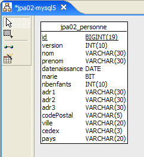 | 2 |
- in [1]: de database (Azurri Clay-plugin)
- in [2]: de DDL die door Hibernate is gegenereerd voor MySQL5
De tabel [jpa02_personne] is de eerder besproken tabel [jpa01_personne] waaraan een adres is toegevoegd (regels 12-18 van de DDL).
2.2.2. De @Entity-objecten die de database vertegenwoordigen
Het adres van een persoon wordt weergegeven door de volgende klasse [Adresse]:
package entites;
...
@SuppressWarnings("serial")
@Embeddable
public class Adresse implements Serializable {
// velden
@Column(length = 30, nullable = false)
private String adr1;
@Column(length = 30)
private String adr2;
@Column(length = 30)
private String adr3;
@Column(length = 5, nullable = false)
private String codePostal;
@Column(length = 20, nullable = false)
private String ville;
@Column(length = 3)
private String cedex;
@Column(length = 20, nullable = false)
private String pays;
// constructors
public Adresse() {
}
public Adresse(String adr1, String adr2, String adr3, String codePostal, String ville, String cedex, String pays) {
...
}
// getters en setters
...
// toString
public String toString() {
return String.format("A[%s,%s,%s,%s,%s,%s,%s]", getAdr1(), getAdr2(), getAdr3(), getCodePostal(), getVille(), getCedex(), getPays());
}
}
- De belangrijkste vernieuwing zit in de annotatie @Embeddable op regel 5. De klasse [Adresse] is niet bedoeld om een tabel te genereren en heeft daarom geen @Entity-annotatie. De annotatie @Embeddable geeft aan dat de klasse bedoeld is om te worden geïntegreerd in een @Entity-object en dus in de tabel die daarmee is gekoppeld. Daarom verschijnt de klasse [Adresse] in het databaseschema niet als een afzonderlijke tabel, maar als onderdeel van de tabel die gekoppeld is aan de @Entity [Personne].
De @Entity [Personne] is nauwelijks veranderd ten opzichte van de vorige versie: er is alleen een veld adresse aan toegevoegd:
package entites;
...
@Entity
@Table(name = "jpa02_hb_personne")
public class Personne implements Serializable{
@Id
@Column(nullable = false)
@GeneratedValue(strategy = GenerationType.AUTO)
private Long id;
@Column(nullable = false)
@Version
private int version;
@Column(length = 30, nullable = false, unique = true)
private String nom;
@Column(length = 30, nullable = false)
private String prenom;
@Column(nullable = false)
@Temporal(TemporalType.DATE)
private Date datenaissance;
@Column(nullable = false)
private boolean marie;
@Column(nullable = false)
private int nbenfants;
@Embedded
private Adresse adresse;
// constructors
public Personne() {
}
...
}
- de wijziging vindt plaats op regels 33-34. Het object [Personne] heeft nu een veld adresse van het type Adresse. Dit geldt voor POJO. De annotatie @Embedded is bedoeld voor de object-relationele brug. Deze geeft aan dat het veld [Adresse adresse] moet worden ingekapseld in dezelfde tabel als het object [Personne].
2.2.3. De testomgeving
We gaan tests uitvoeren die sterk lijken op de eerder besproken tests. Deze worden uitgevoerd in de volgende context:
 |
De gebruikte implementatie is JPA / Hibernate [6]. Het Eclipse-project voor de tests is als volgt:
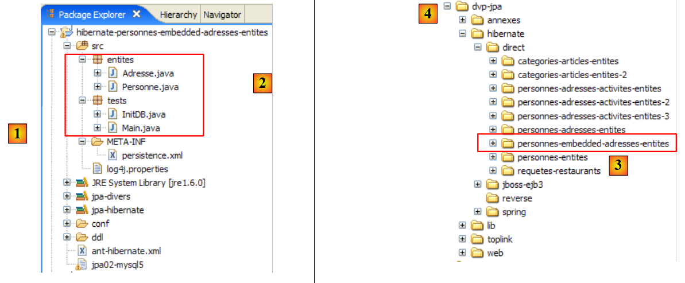 |
Het Eclipse-project [1] verschilt alleen van het vorige door de Java-codes [2]. De omgeving (bibliotheken – persistence.xml – DBMS – configuratiemappen, DDL – Ant-script) is dezelfde als die eerder is besproken, met name in paragraaf 2.1.5. Dit zal ook voor toekomstige Hibernate-projecten het geval zijn en, behoudens uitzonderingen, zullen we niet meer op deze omgeving terugkomen. Met name de bestanden persistence.xml die de JPA/Hibernate-laag voor verschillende SGBD-bestanden configureren, zijn de bestanden die al zijn besproken en die zich in de map <conf> bevinden.
Mocht de lezer twijfelen over de te volgen procedures, dan wordt hij verzocht terug te kijken naar de procedures die in de vorige studie zijn gevolgd.
Het Eclipse-project [3] bevindt zich in de map met voorbeelden [4]. We zullen het importeren.
2.2.4. Genereren van de DDL van de database
Volgens de instructies in paragraaf 2.1.7 is de DDL die is verkregen voor de SGBD MySQL5 als volgt:
drop table if exists jpa02_hb_personne;
create table jpa02_hb_personne (
id bigint not null auto_increment,
version integer not null,
nom varchar(30) not null unique,
prenom varchar(30) not null,
datenaissance date not null,
marie bit not null,
nbenfants integer not null,
adr1 varchar(30) not null,
adr2 varchar(30),
adr3 varchar(30),
codePostal varchar(5) not null,
ville varchar(20) not null,
cedex varchar(3),
pays varchar(20) not null,
primary key (id)
) ENGINE=InnoDB;
Hibernate heeft correct onderkend dat het adres van de persoon moest worden opgenomen in de tabel die gekoppeld is aan de @Entity Personne (regels 11-17).
2.2.5. InitDB
De code van [InitDB] is als volgt:
package tests;
...
public class InitDB {
// constanten
private final static String TABLE_NAME = "jpa02_hb_personne";
public static void main(String[] args) throws ParseException {
// persistentiecontext
EntityManagerFactory emf = Persistence.createEntityManagerFactory("jpa");
EntityManager em = null;
// er wordt een EntityManager opgehaald uit de vorige EntityManagerFactory
em = emf.createEntityManager();
// begin transactie
EntityTransaction tx = em.getTransaction();
tx.begin();
// verzoek
Query sql1;
// elementen uit de tabel PERSONNE verwijderen
sql1 = em.createNativeQuery("delete from " + TABLE_NAME);
sql1.executeUpdate();
// personen aanmaken
Personne p1 = new Personne("Martin", "Paul", new SimpleDateFormat("dd/MM/yy").parse("31/01/2000"), true, 2);
Personne p2 = new Personne("Durant", "Sylvie", new SimpleDateFormat("dd/MM/yy").parse("05/07/2001"), false, 0);
// adressen aanmaken
Adresse a1 = new Adresse("8 rue Boileau", null, null, "49000", "Angers", null, "France");
Adresse a2 = new Adresse("Apt 100", "Les Mimosas", "15 av Foch", "49002", "Angers", "03", "France");
// koppelingen persoon <--> adres
p1.setAdresse(a1);
p2.setAdresse(a2);
// persistentie van personen
em.persist(p1);
em.persist(p2);
// weergave personen
System.out.println("[personnes]");
for (Object p : em.createQuery("select p from Personne p order by p.nom asc").getResultList()) {
System.out.println(p);
}
// einde transactie
tx.commit();
// einde EntityManager
em.close();
// einde EntityManagerFactory
emf.close();
// log
System.out.println("terminé...");
}
}
Er is niets nieuws in deze code. We zijn dit allemaal al eens tegengekomen. Het uitvoeren van [InitDB] samen met MySQL5 levert de volgende resultaten op:
 |
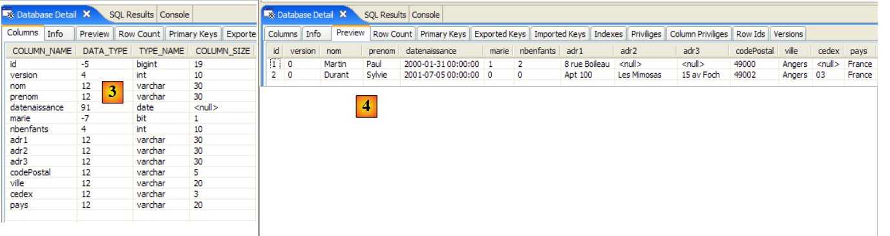 |
- [1]: de console-uitvoer
- [2]: de tabel [jpa02_hb_personne] in het perspectief SQL Explorer
- [3] en [4]: de structuur en inhoud ervan.
2.2.6. Hoofdpagina
De klasse [Main] ziet er als volgt uit:
package tests;
...
import entites.Adresse;
import entites.Personne;
@SuppressWarnings( { "unused", "unchecked" })
public class Main {
// constanten
private final static String TABLE_NAME = "jpa02_hb_personne";
// persistentiecontext
private static EntityManagerFactory emf = Persistence.createEntityManagerFactory("jpa");
private static EntityManager em = null;
// gedeelde objecten
private static Personne p1, p2, newp1;
private static Adresse a1, a2, a3, a4, newa1, newa4;
public static void main(String[] args) throws Exception {
// we halen een EntityManager op uit de EntityManagerFactory
em = emf.createEntityManager();
// database opschonen
log("clean");clean();
// tabel dumpen
dumpPersonne();
// test1
log("test1"); test1();
// test2
log("test2"); test2();
// test3
log("test3"); test3();
// test4
log("test4"); test4();
// test5
log("test5");test5();
// einde persistentiecontext
if (em != null && em.isOpen())
em.close();
// sluiting EntityManagerFactory
emf.close();
}
// de huidige EntityManager ophalen
private static EntityManager getEntityManager() {
...
}
// een nieuwe EntityManager ophalen
private static EntityManager getNewEntityManager() {
...
}
// de inhoud van de tabel ‘Person’ weergeven
private static void dumpPersonne() {
...
}
// BD wissen
private static void clean() {
...
}
// logbestanden
private static void log(String message) {
...
}
// objecten aanmaken
public static void test1() throws ParseException {
// persistentiecontext
EntityManager em = getEntityManager();
// personen aanmaken
p1 = new Personne("Martin", "Paul", new SimpleDateFormat("dd/MM/yy").parse("31/01/2000"), true, 2);
p2 = new Personne("Durant", "Sylvie", new SimpleDateFormat("dd/MM/yy").parse("05/07/2001"), false, 0);
// adressen aanmaken
a1 = new Adresse("8 rue Boileau", null, null, "49000", "Angers", null, "France");
a2 = new Adresse("Apt 100", "Les Mimosas", "15 av Foch", "49002", "Angers", "03", "France");
// koppelingen persoon <--> adres
p1.setAdresse(a1);
p2.setAdresse(a2);
// begin transactie
EntityTransaction tx = em.getTransaction();
tx.begin();
// persistentie van personen
em.persist(p1);
em.persist(p2);
// einde transactie
tx.commit();
// dump
dumpPersonne();
}
// een object in de context wijzigen
public static void test2() {
// persistentiecontext
EntityManager em = getEntityManager();
// begin transactie
EntityTransaction tx = em.getTransaction();
tx.begin();
// het aantal kinderen van p1 wordt verhoogd
p1.setNbenfants(p1.getNbenfants() + 1);
// de burgerlijke staat wordt gewijzigd
p1.setMarie(false);
// het object p1 wordt automatisch opgeslagen (dirty checking)
// bij de volgende synchronisatie (commit of select)
// einde transactie
tx.commit();
// de nieuwe tabel wordt weergegeven
dumpPersonne();
}
// een object verwijderen dat tot de persistentiecontext behoort
public static void test4() {
// persistentiecontext
EntityManager em = getEntityManager();
// begin transactie
EntityTransaction tx = em.getTransaction();
tx.begin();
// het bijgevoegde object p2 wordt verwijderd
em.remove(p2);
// einde transactie
tx.commit();
// de nieuwe tabel wordt weergegeven
dumpPersonne();
}
// loskoppelen, opnieuw koppelen en wijzigen
public static void test5() {
// nieuwe persistentiecontext
EntityManager em = getNewEntityManager();
// begin transactie
EntityTransaction tx = em.getTransaction();
tx.begin();
// p1 wordt opnieuw gekoppeld aan de nieuwe context
p1 = em.find(Personne.class, p1.getId());
// einde transactie
tx.commit();
// het adres van p1 wordt gewijzigd
p1.getAdresse().setVille("Paris");
// de nieuwe tabel wordt weergegeven
dumpPersonne();
}
}
Ook hier weer niets nieuws. De console-uitvoer ziet er als volgt uit:
De lezer wordt uitgenodigd om het verband te leggen tussen de resultaten en de code.
2.2.7. Implementatie JPA / Toplink
We gebruiken nu een implementatie JPA / Toplink:
 |
Het nieuwe Eclipse-project voor de tests is als volgt:
 |
De Java-codes zijn identiek aan die van het vorige Hibernate-project. De omgeving (bibliotheken – persistence.xml – DBMS – configuratiemappen, DDL – Ant-script) is dezelfde als die al in paragraaf 2.1.15.2 is besproken. Dit zal ook voor toekomstige Toplink-projecten het geval zijn en, behoudens uitzonderingen, zullen we niet meer op deze omgeving terugkomen. Met name de bestanden persistence.xml, die de JPA/Toplink-laag voor verschillende SGBD-bestanden configureren, zijn de bestanden die al zijn besproken en die zich in de map <conf> bevinden.
Mocht de lezer twijfelen over de te volgen procedures, dan wordt hij verzocht terug te kijken naar de procedures die in de vorige studie zijn gevolgd.
Het Eclipse-project [3] bevindt zich in de map met voorbeelden [4]. We zullen het importeren.
Het uitvoeren van [InitDB] samen met SGBD en MySQL5 levert de volgende resultaten op:
 |
 |
- [1]: de console-uitvoer
- [2]: de tabellen [jpa02_tl_personne] en [SEQENCE] in het perspectief SQL Explorer
- [3] en [4]: de structuur en inhoud van [jpa02_tl_personne].
De SQL-scripts die in ddl/mysql5 [5] zijn gegenereerd, zijn de volgende:
create.sql
CREATE TABLE jpa02_tl_personne (ID BIGINT NOT NULL, PRENOM VARCHAR(30) NOT NULL, DATENAISSANCE DATE NOT NULL, VERSION INTEGER NOT NULL, MARIE TINYINT(1) default 0 NOT NULL, NBENFANTS INTEGER NOT NULL, NOM VARCHAR(30) UNIQUE NOT NULL, CODEPOSTAL VARCHAR(5) NOT NULL, ADR1 VARCHAR(30) NOT NULL, VILLE VARCHAR(20) NOT NULL, ADR3 VARCHAR(30), CEDEX VARCHAR(3), ADR2 VARCHAR(30), PAYS VARCHAR(20) NOT NULL, PRIMARY KEY (ID))
CREATE TABLE SEQUENCE (SEQ_NAME VARCHAR(50) NOT NULL, SEQ_COUNT DECIMAL(38), PRIMARY KEY (SEQ_NAME))
INSERT INTO SEQUENCE(SEQ_NAME, SEQ_COUNT) values ('SEQ_GEN', 1)
drop.sql
DROP TABLE jpa02_tl_personne
DELETE FROM SEQUENCE WHERE SEQ_NAME = 'SEQ_GEN'
2.3. Voorbeeld 3: één-op-één-relatie via een vreemde sleutel
2.3.1. Het schema van de database ' '
1  | 2 |
- in [1]: de database. Deze keer wordt het adres van de persoon in een eigen tabel [adresse] opgeslagen. De tabel [personne] is via een vreemde sleutel aan deze tabel gekoppeld.
- in [2]: de DDL die door Hibernate is gegenereerd voor MySQL5:
- regels 9-20: de tabel [adresse] die gekoppeld zal worden aan de klasse [Adresse], die nu een @Entity-object is geworden.
- regel 10: de primaire sleutel van de tabel [adresse]
- regel 30: in plaats van een volledig adres staat er nu in de tabel [personne] de identificatiecode [adresse_id] van dit adres.
- regels 34-38: persoon (adresse_id) is een vreemde sleutel op adres (id).
2.3.2. De @Entity-objecten die de database vertegenwoordigen
Een persoon met een adres wordt nu weergegeven door de volgende klasse [Personne]:
package entites;
...
@Entity
@Table(name = "jpa03_hb_personne")
public class Personne implements Serializable{
@Id
@Column(nullable = false)
@GeneratedValue(strategy = GenerationType.AUTO)
private Long id;
@Column(nullable = false)
@Version
private int version;
@Column(length = 30, nullable = false, unique = true)
private String nom;
@Column(length = 30, nullable = false)
private String prenom;
@Column(nullable = false)
@Temporal(TemporalType.DATE)
private Date datenaissance;
@Column(nullable = false)
private boolean marie;
@Column(nullable = false)
private int nbenfants;
@OneToOne(cascade = CascadeType.ALL, fetch=FetchType.LAZY)
@JoinColumn(name = "adresse_id", unique = true, nullable = false)
private Adresse adresse;
...
}
- regels 32-34: het adres van de persoon
- regel 32: de annotatie @OneToOne duidt een één-op-één-relatie aan: een persoon heeft minimaal en maximaal één adres. Het attribuut cascade = CascadeType.ALL betekent dat elke bewerking (persist, merge, remove) op de @Entity [Personne] moet worden doorgevoerd op de @Entity [Adresse]. Vanuit het perspectief van de persistentie-context em betekent dit het volgende. Als p een persoon is en a zijn adres:
- zal een expliciete bewerking em.persist(p) leiden tot een impliciete bewerking em.persist(a)
- een expliciete bewerking em.merge(p) leidt tot een impliciete bewerking em.merge(a)
- een expliciete bewerking em.remove(p) leidt tot een impliciete bewerking em.remove(a)
- regel 32: de annotatie @OneToOne duidt een één-op-één-relatie aan: een persoon heeft minimaal en maximaal één adres. Het attribuut cascade = CascadeType.ALL betekent dat elke bewerking (persist, merge, remove) op de @Entity [Personne] moet worden doorgevoerd op de @Entity [Adresse]. Vanuit het perspectief van de persistentie-context em betekent dit het volgende. Als p een persoon is en a zijn adres:
De ervaring leert dat deze impliciete cascades geen wondermiddel zijn. De ontwikkelaar vergeet uiteindelijk wat ze doen. Het kan de voorkeur genieten om expliciete bewerkingen in de code te gebruiken. Er bestaan verschillende soorten cascades. De annotatie @OneToOne had als volgt geschreven kunnen worden:
//@OneToOne(cascade = CascadeType.ALL, fetch=FetchType.LAZY)
@OneToOne(cascade = {CascadeType.MERGE, CascadeType.PERSIST, CascadeType.REFRESH, CascadeType.REMOVE}, fetch=FetchType.LAZY)
Het attribuut cascade kan hier een array van constanten als waarde aannemen, waarin de gewenste soorten cascades worden gespecificeerd.
Het attribuut fetch=FetchType.LAZY vraagt Hibernate om de afhankelijkheid op het laatste moment te laden. Wanneer men een lijst met personen in de persistentiecontext plaatst, wil men daar niet per se ook hun adressen in opnemen. Het kan bijvoorbeeld zijn dat men dit adres alleen wil voor een bepaalde persoon die door een gebruiker via een webinterface is geselecteerd. Het attribuut fetch=FetchType.EAGER daarentegen vraagt om het onmiddellijk laden van de afhankelijkheden.
- (vervolg)
- regel 33: de annotatie @JoinColumn definieert de vreemde sleutel die de tabel van de @Entity [Personne] heeft op de tabel van de @Entity [Adresse]. Het attribuut name definieert de naam van de kolom die als vreemde sleutel fungeert. Het attribuut unique=true dwingt de één-op-één-relatie af: dezelfde waarde mag niet twee keer voorkomen in de kolom [adresse_id]. Het attribuut nullable=false dwingt af dat een persoon een adres moet hebben.
Het adres van een persoon wordt nu weergegeven door de volgende @Entity [Adresse]:
package entites;
...
@Entity
@Table(name = "jpa03_hb_adresse")
public class Adresse implements Serializable {
// velden
@Id
@Column(nullable = false)
@GeneratedValue(strategy = GenerationType.AUTO)
private Long id;
@Column(nullable = false)
@Version
private int version;
@Column(length = 30, nullable = false)
private String adr1;
@Column(length = 30)
private String adr2;
@Column(length = 30)
private String adr3;
@Column(length = 5, nullable = false)
private String codePostal;
@Column(length = 20, nullable = false)
private String ville;
@Column(length = 3)
private String cedex;
@Column(length = 20, nullable = false)
private String pays;
@OneToOne(mappedBy = "adresse", fetch=FetchType.LAZY)
private Personne personne;
// constructors
public Adresse() {
}
...
}
- regel 4: de klasse [Adresse] wordt een @Entity-object. Deze zal dus de basis vormen voor een tabel in de database.
- regels 9-12: net als elk @Entity-object heeft [Adresse] een primaire sleutel. Deze is Id genoemd en heeft dezelfde (standaard) annotaties als de primaire sleutel Id van de @Entity [Personne].
- regels 39-40: de één-op-één-relatie met de @Entity [Personne]. Hier zijn enkele subtiliteiten:
- ten eerste is het veld personne niet verplicht. Hiermee kunnen we op basis van een adres de enige persoon vinden die dit adres heeft. Als we deze functionaliteit niet hadden gewild, zou het veld personne niet bestaan en zou alles toch werken.
- De één-op-één-relatie tussen de twee entiteiten [Personne] en [Adresse] is al geconfigureerd in de @Entity [Personne]:
@OneToOne(cascade = CascadeType.ALL, fetch=FetchType.LAZY)
@JoinColumn(name = "adresse_id", unique = true, nullable = false)
private Adresse adresse;
Om te voorkomen dat de twee één-op-één-configuraties met elkaar in conflict komen, wordt de ene beschouwd als principale en de andere als inverse. Het is de zogenaamde relatie principale die door de object-relationele brug wordt beheerd. De andere relatie, inverse, wordt niet rechtstreeks beheerd: deze wordt indirect beheerd via de relatie principale. In @Entity [Adresse]:
@OneToOne(mappedBy = "adresse", fetch=FetchType.LAZY)
private Personne personne;
is het attribuut mappedBy dat de bovenstaande één-op-één-relatie vormt, de relatie inverse van de één-op-één-relatie principale, gedefinieerd door het veld adresse van @Entity [Personne].
2.3.3. Het Eclipse-/Hibernate-project 1
De hier gebruikte implementatie JPA is die van Hibernate. Het Eclipse-testproject is als volgt:
 |
Het project [3] bevindt zich in de map met voorbeelden [4]. We zullen het importeren.
2.3.4. Genereren van de DDL van de database
Volgens de instructies in paragraaf 2.1.7 is het DDL-bestand dat is verkregen voor het SGBD- en MySQL5-bestand hetzelfde als het bestand dat aan het begin van deze paragraaf wordt getoond.
2.3.5. InitDB
De code van [InitDB] is als volgt:
package tests;
...
import entites.Adresse;
import entites.Personne;
public class InitDB {
// constanten
private final static String TABLE_PERSONNE = "jpa03_hb_personne";
private final static String TABLE_ADRESSE = "jpa03_hb_adresse";
public static void main(String[] args) throws ParseException {
// Persistentiecontext
EntityManagerFactory emf = Persistence.createEntityManagerFactory("jpa");
EntityManager em = null;
// er wordt een EntityManager opgehaald uit de vorige EntityManagerFactory
em = emf.createEntityManager();
// begin transactie
EntityTransaction tx = em.getTransaction();
tx.begin();
// verzoek
Query sql1;
// verwijder de elementen uit de tabel PERSONNE
sql1 = em.createNativeQuery("delete from " + TABLE_PERSONNE);
sql1.executeUpdate();
// elementen uit de tabel verwijderen ADRESSE
sql1 = em.createNativeQuery("delete from " + TABLE_ADRESSE);
sql1.executeUpdate();
// personen aanmaken
Personne p1 = new Personne("Martin", "Paul", new SimpleDateFormat("dd/MM/yy").parse("31/01/2000"), true, 2);
Personne p2 = new Personne("Durant", "Sylvie", new SimpleDateFormat("dd/MM/yy").parse("05/07/2001"), false, 0);
// adressen aanmaken
Adresse a1 = new Adresse("8 rue Boileau", null, null, "49000", "Angers", null, "France");
Adresse a2 = new Adresse("Apt 100", "Les Mimosas", "15 av Foch", "49002", "Angers", "03", "France");
Adresse a3 = new Adresse("x", "x", "x", "x", "x", "x", "x");
Adresse a4 = new Adresse("y", "y", "y", "y", "y", "y", "y");
// koppelingen persoon <--> adres
p1.setAdresse(a1);
a1.setPersonne(p1);
p2.setAdresse(a2);
a2.setPersonne(p2);
// persistentie van personen en, in cascade, van hun adressen
em.persist(p1);
em.persist(p2);
// en adressen a3 en a4 die niet aan personen zijn gekoppeld
em.persist(a3);
em.persist(a4);
// weergave van personen
System.out.println("[personnes]");
for (Object p : em.createQuery("select p from Personne p order by p.nom asc").getResultList()) {
System.out.println(p);
}
// weergave van adressen
System.out.println("[adresses]");
for (Object a : em.createQuery("select a from Adresse a").getResultList()) {
System.out.println(a);
}
// einde transactie
tx.commit();
// einde EntityManager
em.close();
// einde EntityManagerFactory
emf.close();
// logboek
System.out.println("terminé...");
}
}
We geven alleen commentaar op wat nieuw is ten opzichte van wat al is bestudeerd:
- regels 31-32: er worden twee personen aangemaakt
- regels 34-37: er worden vier adressen aangemaakt
- regels 39-42: de personen (p1, p2) worden gekoppeld aan de adressen (a1, a2). De adressen (a3, a4) zijn 'weesadressen'. Er is geen persoon die ernaar verwijst. De code DDL maakt dit mogelijk. Hoewel een persoon altijd een adres heeft, geldt het omgekeerde niet.
- regels 44-45: we bewaren de personen (p1, p2). Aangezien we het attribuut cascade = CascadeType.ALL hebben toegepast op de één-op-één-relatie die een persoon aan zijn adres koppelt, zouden de adressen (a1, a2) van deze twee personen ook een persist moeten ondergaan. Dit is wat we willen controleren. Voor de weeskindadressen (a3, a4) moeten we dit expliciet doen (regels 47-48).
- regels 51-53: weergave van de tabel met personen
- regels 56-57: weergave van de adressentabel
Het uitvoeren van [InitDB] samen met MySQL5 levert de volgende resultaten op:
 |
 |
- [1]: de consoleweergave
- [2]: de tabellen [jpa03_hb_*] in het perspectief SQL Explorer
- [3]: de tabel met personen
- [4]: de tabel met adressen. Ze zijn er allemaal. Let ook op de koppeling tussen kolom [adresse_id] in [3] en kolom [id] in [4] (vreemde sleutel).
2.3.6. Hoofdpagina
De klasse [Main] bevat zes tests die we hieronder bespreken.
2.3.6.1. Test1
Deze test ziet er als volgt uit:
// objecten aanmaken
public static void test1() throws ParseException {
// persistentiecontext
EntityManager em = getEntityManager();
// personen aanmaken
p1 = new Personne("Martin", "Paul", new SimpleDateFormat("dd/MM/yy").parse("31/01/2000"), true, 2);
p2 = new Personne("Durant", "Sylvie", new SimpleDateFormat("dd/MM/yy").parse("05/07/2001"), false, 0);
// adressen aanmaken
a1 = new Adresse("8 rue Boileau", null, null, "49000", "Angers", null, "France");
a2 = new Adresse("Apt 100", "Les Mimosas", "15 av Foch", "49002", "Angers", "03", "France");
a3 = new Adresse("x", "x", "x", "x", "x", "x", "x");
a4 = new Adresse("y", "y", "y", "y", "y", "y", "y");
// koppelingen persoon <--> adres
p1.setAdresse(a1);
a1.setPersonne(p1);
p2.setAdresse(a2);
a2.setPersonne(p2);
// begin transactie
EntityTransaction tx = em.getTransaction();
tx.begin();
// persistentie van personen
em.persist(p1);
em.persist(p2);
// en adressen a3 en a4 die niet aan personen zijn gekoppeld
em.persist(a3);
em.persist(a4);
// einde transactie
tx.commit();
// de tabellen worden weergegeven
dumpPersonne();
dumpAdresse();
}
Deze code is overgenomen uit [InitDB]. Het resultaat is als volgt:
Beide tabellen zijn ingevuld.
2.3.6.2. Test2
Deze test is als volgt:
// een object in de context wijzigen
public static void test2() {
// persistentiecontext
EntityManager em = getEntityManager();
// begin transactie
EntityTransaction tx = em.getTransaction();
tx.begin();
// het aantal kinderen van p1 wordt verhoogd
p1.setNbenfants(p1.getNbenfants() + 1);
// de burgerlijke staat wordt gewijzigd
p1.setMarie(false);
// het object p1 wordt automatisch opgeslagen (dirty checking)
// bij de volgende synchronisatie (commit of select)
// einde transactie
tx.commit();
// de nieuwe tabel wordt weergegeven
dumpPersonne();
}
Het resultaat is als volgt:
- regel 4: persoon p1 zag het aantal kinderen met 1 toenemen en de versie van 0 naar 1 veranderen
2.3.6.3. Test4
Deze test is als volgt:
// een object verwijderen dat tot de persistentiecontext behoort
public static void test4() {
// persistentiecontext
EntityManager em = getEntityManager();
// begin transactie
EntityTransaction tx = em.getTransaction();
tx.begin();
// het gekoppelde object p2 wordt verwijderd
em.remove(p2);
// transactie beëindigen
tx.commit();
// de nieuwe tabellen worden weergegeven
dumpPersonne();
dumpAdresse();
}
- regel 9: persoon p2 wordt verwijderd. Deze heeft een cascade-relatie met adres a2. Adres a2 zou dus ook moeten worden verwijderd.
Het resultaat van test 4 is als volgt:
- de persoon p2 uit regel 3 van test 1 is niet meer aanwezig in test 4
- Hetzelfde geldt voor het bijbehorende adres a2, dat in regel 7 van test 1 voorkomt maar ontbreekt in test 4.
2.3.6.4. Test 5
Deze test is als volgt:
// loskoppelen, opnieuw koppelen en wijzigen
public static void test5() {
// nieuwe persistentiecontext
EntityManager em = getNewEntityManager();
// begin transactie
EntityTransaction tx = em.getTransaction();
tx.begin();
// p1 wordt opnieuw gekoppeld aan de nieuwe context
p1 = em.find(Personne.class, p1.getId());
// het adres van p1 wordt gewijzigd
p1.getAdresse().setVille("Paris");
// einde transactie
tx.commit();
// de nieuwe tabellen worden weergegeven
dumpPersonne();
dumpAdresse();
}
- regel 4: we hebben een nieuwe, dus lege persistentiecontext.
- regel 9: we plaatsen de persoon p1 erin. Er wordt in de database gezocht naar p1 omdat deze niet in de context staat. De elementen die afhankelijk zijn van p1 (zijn adres) worden daarentegen niet uit de database opgehaald, omdat we het volgende hebben geschreven:
@OneToOne(..., fetch=FetchType.LAZY)
Dit is het concept van "lazy loading" of "just-in-time laden": de afhankelijkheden van een persistent object worden pas in het geheugen geladen wanneer ze nodig zijn.
- regel 11: we wijzigen het veld ‘stad’ van het adres van p1. Vanwege getAdresse en als het adres van p1 nog niet in de persistentiecontext stond, wordt het daarheen gehaald door een leesbewerking uit de database.
- regel 13: de transactie wordt bevestigd, waardoor de persistentiecontext met de database wordt gesynchroniseerd. De persistentiecontext constateert dat het adres van de persoon p1 is gewijzigd en slaat dit op.
De uitvoering van test5 levert de volgende resultaten op:
- de stad van persoon p1 (regel 3 test4, regel 10 test5) is inderdaad gewijzigd van Angers (regel 5 test4) naar Parijs (regel 12 test5).
2.3.6.5. Test6
Deze test is als volgt:
// een object van het type Adres verwijderen
public static void test6() {
EntityTransaction tx = null;
// nieuwe persistentiecontext
EntityManager em = getNewEntityManager();
// begin transactie
tx = em.getTransaction();
tx.begin();
// het adres a3 wordt opnieuw gekoppeld aan de nieuwe context
a3 = em.find(Adresse.class, a3.getId());
System.out.println(a3);
// verwijderen
em.remove(a3);
// einde transactie
tx.commit();
// dump van de tabel Adresse
dumpAdresse();
}
- regel 5: we bevinden ons in een nieuwe, dus lege persistentiecontext.
- regel 10: we plaatsen het adres a3 in de persistentiecontext
- regel 13: we verwijderen het. Het was een verweesd adres (niet gekoppeld aan een persoon). Verwijdering is dus mogelijk.
Het resultaat van de uitvoering is als volgt:
- het adres a3 uit test 5 (regel 6) is verdwenen uit de adressen van test 6 (regels 11-12)
2.3.6.6. Test 7
Deze test is als volgt:
// rollback
public static void test7() {
EntityTransaction tx = null;
try {
// nieuwe persistentiecontext
EntityManager em = getNewEntityManager();
// transactie starten
tx = em.getTransaction();
tx.begin();
// het adres a1 wordt opnieuw gekoppeld aan de nieuwe context
newa1 = em.find(Adresse.class, a1.getId());
// het adres a4 wordt opnieuw aan de nieuwe context gekoppeld
newa4 = em.find(Adresse.class, a4.getId());
// er wordt geprobeerd deze te verwijderen – dit zou een uitzondering moeten genereren, omdat een adres dat aan een persoon is gekoppeld niet kan worden verwijderd, wat het geval is bij newa1
em.remove(newa4);
em.remove(newa1);
// einde transactie
tx.commit();
} catch (RuntimeException e1) {
// er is een probleem opgetreden
System.out.format("Erreur dans transaction [%s%n%s%n%s%n%s]%n", e1.getClass().getName(), e1.getMessage(), e1.getCause(), e1.getCause()
.getCause());
try {
if (tx.isActive())
tx.rollback();
} catch (RuntimeException e2) {
System.out.format("Erreur au rollback [%s]%n", e2.getMessage());
}
// we verlaten de huidige context
em.clear();
}
// dump – de tabel Adres mag niet zijn gewijzigd vanwege de rollback
dumpAdresse();
}
- test7: we testen een rollback van een transactie
- regel 6: we bevinden ons in een nieuwe, dus lege persistentiecontext.
- regel 11: we plaatsen het adres a1 in de persistentiecontext, onder de referentie newa1
- regel 13: we plaatsen het adres a4 in de persistentiecontext, onder de referentie newa4
- regels 15-16: de twee adressen newa1 en newa4 worden verwijderd. newa1 is het adres van de persoon p1 en verwijst daarom in de database p1 via een vreemde sleutel naar newa1. Het verwijderen van newa1 zal dus mislukken en een uitzondering genereren tijdens de synchronisatie van de persistentiecontext bij het vastleggen van de transactie (regel 18). Deze transactie zal vervolgens een rollback ondergaan (regel 25) en daardoor zullen beide bewerkingen van de transactie worden teruggedraaid. We zouden dus moeten constateren dat het adres newa4, dat legaal had kunnen worden verwijderd, niet is verwijderd.
De uitvoering levert het volgende resultaat op:
main : ----------- test6
A[3,0,x,x,x,x,x,x,x]
[adresses]
A[1,1,8 rue Boileau,null,null,49000,Paris,null,France]
A[4,0,y,y,y,y,y,y,y]
main : ----------- test7
Erreur dans transaction [javax.persistence.RollbackException
Error while commiting the transaction
org.hibernate.ObjectDeletedException: deleted entity passed to persist: [entites.Adresse#<null>]
null]
[adresses]
A[1,1,8 rue Boileau,null,null,49000,Paris,null,France]
A[4,0,y,y,y,y,y,y,y]
- de adreslijst van test 7 (regels 12-13) is identiek aan die van test 6 (regels 4-5). De rollback lijkt te zijn uitgevoerd. Dat gezegd hebbende, is de foutmelding op regel 9 een raadsel en verdient deze nader onderzoek. Het lijkt erop dat de uitzondering die zich heeft voorgedaan niet de verwachte is. We moeten de Hibernate-logs in log4j.properties in de modus DEBUG doorvoeren om meer duidelijkheid te krijgen:
# Root logger-optie
log4j.rootLogger=ERROR, stdout
# Logboekopties voor Hibernate (INFO toont alleen opstartberichten)
log4j.logger.org.hibernate=DEBUG
We zien dan dat, toen het adres a1 in de persistentiecontext werd geplaatst, Hibernate daar ook de persoon p1 heeft geplaatst, waarschijnlijk vanwege de één-op-één-relatie van de @Entity [Adresse]:
@OneToOne(mappedBy = "adresse", fetch=FetchType.LAZY)
private Personne personne;
Hoewel hier om "LazyLoading" is gevraagd, wordt de afhankelijkheid [Personne] toch onmiddellijk geladen. Dit betekent waarschijnlijk dat het attribuut fetch=FetchType.LAZY hier geen zin heeft. Vervolgens zien we dat Hibernate bij het vastleggen van de transactie niet alleen de verwijdering van de adressen a1 en a4 heeft voorbereid, maar ook het opslaan van de persoon p1. En daar treedt de uitzondering op: omdat de persoon p1 een cascade op zijn adres heeft, wil Hibernate ook het adres a1 opslaan, terwijl dit zojuist is verwijderd. Het is Hibernate die de uitzondering genereert en niet de JDBC-driver. Vandaar de melding op regel 9 hierboven. Bovendien valt op dat de rollback op regel 25 nooit wordt uitgevoerd, omdat de transactie inactief is geworden. De test op regel 24 voorkomt dus de rollback.
Het beoogde doel is dus niet bereikt: het tonen van een rollback. Er is in feite geen SQL-opdracht naar de database verzonden. We onthouden een aantal punten:
- het nut van het inschakelen van gedetailleerde logboeken om te begrijpen wat de opdracht ORM doet
- hoewel een ORM het leven van de ontwikkelaar kan vergemakkelijken, kan het dit ook bemoeilijken door gedragingen te verbergen die de ontwikkelaar juist zou moeten kennen. In dit geval gaat het om de manier waarop de afhankelijkheden van een @Entity worden geladen.
2.3.7. Eclipse-/Hibernate-project 2
We kopiëren en plakken het Eclipse/Hibernate-project om de configuratie van de @Entity-objecten enigszins aan te passen:
 |
Het project [3] bevindt zich in de map met voorbeelden [4]. We importeren het.
We wijzigen alleen de @Entity [Adresse], zodat deze geen omgekeerde één-op-één-relatie meer heeft met de @Entity [Personne]:
package entites;
...
@Entity
@Table(name = "jpa04_hb_adresse")
public class Adresse implements Serializable {
// velden
@Id
@Column(nullable = false)
@GeneratedValue(strategy = GenerationType.AUTO)
private Long id;
@Column(nullable = false)
@Version
private int version;
@Column(length = 30, nullable = false)
private String adr1;
...
@Column(length = 20, nullable = false)
private String pays;
// @OneToOne(mappedBy = "adres", fetch=FetchType.LAZY)
// private Personne personne;
// constructors
public Adresse() {
}
- regels 25-26: de omgekeerde relatie @OneToOne wordt verwijderd. Het is belangrijk om te begrijpen dat een omgekeerde relatie nooit onmisbaar is. Alleen de hoofdrelatie is dat wel. De omgekeerde relatie kan uit gemak worden gebruikt. Hier maakte deze het mogelijk om op een eenvoudige manier de eigenaar van een adres te achterhalen. Een omgekeerde relatie kan altijd worden vervangen door een query JPQL. Dat gaan we in het volgende voorbeeld laten zien.
De testprogramma’s zijn identiek overgenomen. Het enige programma dat voor ons van belang is, is test 7, waarin we de één-op-één omgekeerde relatie in actie hebben gezien. Daarnaast voegen we een test 8 toe om te laten zien hoe we, zonder de omgekeerde relatie Adres -> Persoon, toch de persoon met een bepaald adres kunnen achterhalen.
Test 7 verandert niet. De uitvoering ervan levert nu de volgende resultaten op (logs uitgeschakeld):
main : ----------- test6
A[3,0,x,x,x,x,x,x,x]
[adresses]
A[1,1,8 rue Boileau,null,null,49000,Paris,null,France]
A[4,0,y,y,y,y,y,y,y]
main : ----------- test7
Erreur dans transaction [javax.persistence.RollbackException
Error while commiting the transaction
org.hibernate.exception.ConstraintViolationException: could not delete: [entites.Adresse#1]
java.sql.SQLException: Cannot delete or update a parent row: a foreign key constraint fails (`jpa/jpa04_hb_personne`, CONSTRAINT `FKEA3F04515FE379D0` FOREIGN KEY (`adresse_id`) REFERENCES `jpa04_hb_adresse` (`id`))]
[adresses]
A[1,1,8 rue Boileau,null,null,49000,Paris,null,France]
A[4,0,y,y,y,y,y,y,y]
- Deze keer krijgen we inderdaad de verwachte uitzondering: die welke door de JDBC-driver wordt gegenereerd omdat we in de tabel [adresse] een rij wilden verwijderen waarnaar wordt verwezen door een vreemde sleutel van een rij in de tabel [personne]. De regel [10] geeft duidelijk de oorzaak van de fout aan.
- De rollback is inderdaad uitgevoerd: na afloop van test 7 is de tabel [adresse] (regels 12-13) dezelfde als die we hadden na afloop van test 6 (regels 4-5).
Wat is het verschil met test 7 van het vorige Eclipse-project? Waarom krijgen we hier een JDBC-uitzondering die we bij de vorige test niet konden krijgen? Omdat de @Entity [Adresse] geen omgekeerde één-op-één-relatie meer heeft met de @Entity [Personne], wordt deze afzonderlijk beheerd door Hibernate. Toen het adres newa1 in de persistentiecontext werd opgenomen, heeft Hibernate de persoon p1, die dit adres heeft, niet ook in deze context opgenomen. Het verwijderen van de adressen newa1 en newa4 vond dus plaats zonder dat de entiteit Personne in de context aanwezig was.
Hoe kunnen we nu, uitgaande van het adres newa1, de persoon p1 vinden die dit adres heeft? Dat is een terechte vraag. De volgende test 8 geeft hierop een antwoord:
// omgekeerde één-op-één-relatie
// gerealiseerd door een query JPQL
public static void test8() {
EntityTransaction tx = null;
// nieuwe persistentiecontext
EntityManager em = getNewEntityManager();
// begin transactie
tx = em.getTransaction();
tx.begin();
// het adres a1 wordt opnieuw gekoppeld aan de nieuwe context
newa1 = em.find(Adresse.class, a1.getId());
// de eigenaar van dit adres wordt opgehaald
Personne p1 = (Personne) em.createQuery("select p from Personne p join p.adresse a where a.id=:adresseId").setParameter("adresseId", newa1.getId())
.getSingleResult();
// deze worden weergegeven
System.out.println("adresse=" + newa1);
System.out.println("personne=" + p1);
// einde transactie
tx.commit();
}
- regel 6: nieuwe lege persistentie-context
- regels 8-9: begin transactie
- regel 11: het adres a1 wordt in de persistentiecontext opgenomen en door newa1 aangeduid.
- regel 13: de persoon p1 met het adres newa1 wordt opgehaald via een query JPQL. We weten dat [Personne] en [Adresse] via een vreemde-sleutelrelatie aan elkaar zijn gekoppeld. In de klasse [Personne] is het veld [adresse] met de annotatie @OneToOne dat deze relatie concretiseert. De instructie JPQL "select p from Personne p join p.adresse a" voert een join uit tussen de tabellen [personne] en [adresse]. Het equivalent SQL dat in een Hibernate-console wordt gegenereerd (zie voorbeelden in paragraaf 2.1.12) is als volgt:
De koppeling tussen de twee tabellen is duidelijk te zien. Elke persoon is nu gekoppeld aan zijn of haar adres. Er moet nog worden gespecificeerd dat we alleen geïnteresseerd zijn in het adres newa1. De query wordt dan: "select p from Personne p join p.adresse a where a.id=:adresseId". Let op het gebruik van de aliassen p en a. De query’s met JPQL maken intensief gebruik van aliassen. Zo zorgt de uitdrukking "from Personne p join p.adresse a" ervoor dat een persoon wordt vertegenwoordigd door de alias p en zijn adres (p.adresse) door de alias a. De beperkingsvoorwaarde „where a.id=:adresseId“ beperkt de opgevraagde rijen tot uitsluitend personen met de waarde:adresseId als identificatiecode voor hun adres a. :adresseId wordt een parameter genoemd, en de opdracht JPQL een geparametriseerde opdracht JPQL. Bij de uitvoering moet deze parameter een waarde krijgen. Dit gebeurt via de methode
waarmee een waarde kan worden toegekend aan een parameter die aan de hand van zijn naam wordt geïdentificeerd. Merk op dat setParameter een object Query retourneert, net als de methode createQuery. Daardoor kunnen we methodes [em.createQuery(...).setParameter(...).getSingleResult(...)] achter elkaar aanroepen, aangezien de methodes [setParameter, getSingleResult] deel uitmaken van de interface Query. De methode [getSingleResult] wordt gebruikt voor Select-query’s die slechts één resultaat opleveren. Dat is hier het geval.
- regels 16-17: ter controle worden het adres newa1 en de persoon p1 met dit adres weergegeven.
Het verkregen resultaat is als volgt:
Dit is correct. Uit dit voorbeeld kunnen we concluderen dat de omgekeerde één-op-één-relatie van de @entity [Adresse] naar de @entity [Personne] niet noodzakelijk was. De ervaring heeft hier aangetoond dat het verwijderen ervan leidde tot een voorspelbaarder gedrag van de code. Dit is vaak het geval.
2.3.8. Hibernate-console
In de vorige test 8 werd een commando JPQL gebruikt om een join uit te voeren tussen de entiteiten Personne en Adresse. Hoewel vergelijkbaar met de taal SQL, vereisen de talen JPQL, JPA of HQL van Hibernate enige inwerking, en de Hibernate-console is daar uitstekend voor geschikt. We hebben deze console al gebruikt in paragraaf 2.1.12, om één tabel te bewerken. We doen dit hier nogmaals om twee tabellen te bewerken die via een vreemde-sleutelrelatie met elkaar zijn gekoppeld.
Laten we een Hibernate-console aanmaken voor ons huidige Eclipse-project:
 |
- [1]: we schakelen over naar een perspectief [Hibernate Console] (Window / Open Perspective / Other)
- [2]: we maken een nieuwe configuratie aan
- met behulp van de knop [4]; we selecteren het Java-project waarvoor de Hibernate-configuratie wordt aangemaakt. De naam ervan wordt weergegeven in [3].
- In [5] geven we deze configuratie de gewenste naam. Hier hebben we de naam van het Java-project overgenomen.
- In [6] geven we aan dat we een configuratie JPA gebruiken, zodat de tool weet dat hij het bestand [META-INF/persistence.xml] moet verwerken
- in [7]: in dit bestand [META-INF/persistence.xml] geven we aan dat de persistentie-eenheid jpa moet worden gebruikt.
- In [8] valideren we de configuratie.
Vervolgens moet SGBD worden gestart. Hier gaat het om MySQL5.
 |
- in [1]: de aangemaakte configuratie vertoont een boomstructuur met drie takken
- in [2]: de tak [Configuration] geeft een overzicht van de objecten die de console heeft gebruikt om zichzelf te configureren: hier de @Entity’s Personne en Adresse.
- in [3]: de Session Factory is een Hibernate-concept dat vergelijkbaar is met de EntityManager van JPA. Deze vormt de brug tussen objecten en relaties dankzij de objecten in de tak [Configuration]. In [3] worden de objecten van de persistentiecontext gepresenteerd, hier opnieuw de @Entity-objecten Personne en Adresse.
- In [4]: de database die wordt benaderd via de configuratie in [persistence.xml]. Hierin bevinden zich de tabellen [jpa04_hb_*] die door ons huidige Eclipse-project zijn gegenereerd.
 |
- in [1] wordt een editor HQL aangemaakt
- in de editor HQL,
- in [2] kiezen we de te gebruiken Hibernate-configuratie als er meerdere zijn (wat hier het geval is)
- in [3], voer je de opdracht JPQL in die je wilt uitvoeren, in dit geval de opdracht JPQL van test 8
- in [4] voer je het uit
- in [5], krijg je de resultaten van de query te zien in het venster [Hibernate Query Result].
- in [6] kun je in het venster [Hibernate Dynamic SQL preview] de query SQL zien die is uitgevoerd.
Een andere manier om hetzelfde resultaat te verkrijgen:
 |
- in [1]: het commando JPQL voert de join uit tussen de entiteiten Personne en Adresse. [ref1] noemt deze vorm een „theta-samenvoeging”.
- in [2]: het equivalent SQL
- in [3]: het resultaat
Een derde vorm die alleen door Hibernate wordt ondersteund (HQL):
 |
- in [1]: het commando HQL. JPQL accepteert de notatie p.adresse.id niet. Het accepteert slechts één niveau van indirecte verwijzing.
- in [2]: het equivalent van SQL. We zien dat hiermee de tabelkoppeling wordt vermeden.
- in [3]: het resultaat
Hier volgen nog enkele voorbeelden:
 |
- in [1]: de lijst met personen en hun adres
- in [2]: het equivalent SQL.
- in [3]: het resultaat
 |
- in [1]: de lijst met adressen en hun eigenaar, indien er een is, of anders geen (rechtse externe join: de entiteit Adresse, die de rijen levert die geen relatie hebben met Personne, staat rechts van het sleutelwoord join).
- in [2]: het equivalent van SQL.
- in [3]: het resultaat
Merk op dat alleen de entiteit Personne een relatie heeft met de entiteit Adresse. Het omgekeerde geldt niet meer sinds de omgekeerde één-op-één-relatie met de naam personne in de entiteit Adresse is verwijderd. Als deze omgekeerde relatie nog zou bestaan, hadden we het volgende kunnen schrijven:
 |
- in [1]: de lijst met adressen en hun eigenaar, indien er een is, of anders geen (linkse externe join: de entiteit Adresse, die de rijen levert die geen relatie hebben met Personne, staat links van het sleutelwoord join).
- in [2]: het equivalent van SQL.
- in [3]: het resultaat
We raden de lezer ten zeerste aan om te oefenen met de taal JPQL via de Hibernate-console.
2.3.9. Implementatie JPA / Toplink
We gebruiken nu een implementatie JPA / Toplink:
 |
Het nieuwe Eclipse-project voor de tests is als volgt:
 |
De Java-codes zijn identiek aan die van het vorige Hibernate-project. De omgeving (bibliotheken – persistence.xml – DBMS – conf- en ddl-mappen – ant-script) is dezelfde als die welke in paragraaf 2.1.15.2 is besproken. Het Eclipse-project [3] bevindt zich in de map met voorbeelden [4]. We zullen het importeren.
Het bestand <persistence.xml> wordt op één punt gewijzigd, namelijk bij de gedeclareerde entiteiten:
<persistence-unit name="jpa" transaction-type="RESOURCE_LOCAL">
<!-- provider -->
<provider>oracle.toplink.essentials.PersistenceProvider</provider>
<!-- persistente klassen -->
<class>entites.Personne</class>
<class>entites.Adresse</class>
<!-- eigenschappen van de persistentie-eenheid -->
...
- regels 5 en 6: de twee beheerde entiteiten
Het uitvoeren van [InitDB] samen met SGBD en MySQL5 levert de volgende resultaten op:
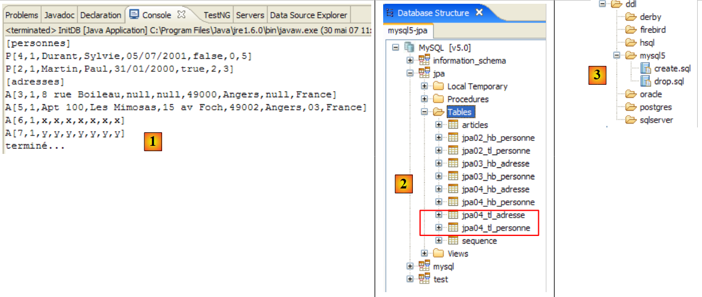 |
In [1], de console-uitvoer, in [2] de twee gegenereerde tabellen [jpa04_tl], in [3] de gegenereerde scripts SQL. De inhoud ervan is als volgt:
create.sql
CREATE TABLE jpa04_tl_personne (ID BIGINT NOT NULL, PRENOM VARCHAR(30) NOT NULL, DATENAISSANCE DATE NOT NULL, VERSION INTEGER NOT NULL, MARIE TINYINT(1) default 0 NOT NULL, NBENFANTS INTEGER NOT NULL, NOM VARCHAR(30) UNIQUE NOT NULL, adresse_id BIGINT UNIQUE NOT NULL, PRIMARY KEY (ID))
CREATE TABLE jpa04_tl_adresse (ID BIGINT NOT NULL, ADR3 VARCHAR(30), CODEPOSTAL VARCHAR(5) NOT NULL, ADR1 VARCHAR(30) NOT NULL, VILLE VARCHAR(20) NOT NULL, VERSION INTEGER NOT NULL, CEDEX VARCHAR(3), ADR2 VARCHAR(30), PAYS VARCHAR(20) NOT NULL, PRIMARY KEY (ID))
ALTER TABLE jpa04_tl_personne ADD CONSTRAINT FK_jpa04_tl_personne_adresse_id FOREIGN KEY (adresse_id) REFERENCES jpa04_tl_adresse (ID)
CREATE TABLE SEQUENCE (SEQ_NAME VARCHAR(50) NOT NULL, SEQ_COUNT DECIMAL(38), PRIMARY KEY (SEQ_NAME))
INSERT INTO SEQUENCE(SEQ_NAME, SEQ_COUNT) values ('SEQ_GEN', 1)
drop.sql
ALTER TABLE jpa04_tl_personne DROP FOREIGN KEY FK_jpa04_tl_personne_adresse_id
DROP TABLE jpa04_tl_personne
DROP TABLE jpa04_tl_adresse
DELETE FROM SEQUENCE WHERE SEQ_NAME = 'SEQ_GEN'
2.4. Voorbeeld 4: één-op-veel-relatie
2.4.1. Het schema van de database ' '
1  | 2 |
- in [1], de database en in [2], de bijbehorende DDL (MySQL5)
Een artikel A(id, versie, naam) behoort precies tot één categorie C(id, versie, naam). Een categorie C kan 0, 1 of meerdere artikelen bevatten. Er is sprake van een één-op-veel-relatie (Categorie -> Artikel) en de omgekeerde veel-op-één-relatie (Artikel -> Categorie). Deze relatie wordt weergegeven door de vreemde sleutel die de tabel [article] heeft op de tabel [categorie] (regels 24-28 van de DDL).
2.4.2. De @Entity-objecten die de database vertegenwoordigen
Een artikel wordt vertegenwoordigd door de volgende @Entity [Article]:
package entites;
...
@Entity
@Table(name="jpa05_hb_article")
public class Article implements Serializable {
// velden
@Id
@GeneratedValue(strategy = GenerationType.AUTO)
private Long id;
@SuppressWarnings("unused")
@Version
private int version;
@Column(length = 30)
private String nom;
// hoofdrelatie Artikel (many) -> Categorie (one)
// geïmplementeerd door een vreemde sleutel (categorie_id) in Artikel
// 1 Artikel heeft noodzakelijkerwijs 1 Categorie (nullable=false)
@ManyToOne(fetch=FetchType.LAZY)
@JoinColumn(name = "categorie_id", nullable = false)
private Categorie categorie;
// constructors
public Article() {
}
// getters en setters
...
// toString
public String toString() {
return String.format("Article[%d,%d,%s,%d]", id, version, nom, categorie.getId());
}
}
- regels 9-11: primaire sleutel van de @Entity
- regels 13-15: het versienummer
- regels 17-18: naam van het artikel
- regels 20-25: een veel-op-één-relatie die de @Entity Article koppelt aan de @Entity Categorie:
- regel 23: de annotatie ManyToOne. De ‘Many’ verwijst naar de @Entity Article waarin we ons bevinden en de ‘One’ naar de @Entity Categorie (regel 25). Een categorie (One) kan meerdere artikelen (Many) hebben.
- regel 24: de annotatie ManyToOne definieert de vreemde-sleutelkolom in de tabel [article]. Deze kolom heet (name) categorie_id en elke rij moet een waarde in deze kolom bevatten (nullable=false).
- regel 25: de categorie waartoe het artikel behoort. Wanneer een artikel in de persistentie-context wordt geplaatst, wordt gevraagd om de categorie niet onmiddellijk mee op te nemen (fetch=FetchType.LAZY, regel 23). Het is onduidelijk of dit verzoek zin heeft. We zullen zien.
Een categorie wordt vertegenwoordigd door de volgende @Entity [Categorie]:
package entites;
...
@Entity
@Table(name="jpa05_hb_categorie")
public class Categorie implements Serializable {
// velden
@Id
@GeneratedValue(strategy = GenerationType.AUTO)
private Long id;
@SuppressWarnings("unused")
@Version
private int version;
@Column(length = 30)
private String nom;
// omgekeerde relatie Categorie (één) -> Artikel (veel) van de relatie Artikel (veel) -> Categorie (één)
// cascade invoeging Categorie -> invoeging Artikelen
// cascade-update Categorie -> update Artikelen
// cascade verwijdering Categorie -> verwijdering Artikelen
@OneToMany(mappedBy = "categorie", cascade = { CascadeType.ALL })
private Set<Article> articles = new HashSet<Article>();
// constructors
public Categorie() {
}
// getters en setters
...
// toString
public String toString() {
return String.format("Categorie[%d,%d,%s]", id, version, nom);
}
// bidirectionele koppeling Categorie <--> Artikel
public void addArticle(Article article) {
// het artikel wordt toegevoegd aan de verzameling artikelen van de categorie
articles.add(article);
// het artikel verandert van categorie
article.setCategorie(this);
}
}
- regels 8-11: de primaire sleutel van de @Entity
- regels 12-14: de versie ervan
- regels 16-17: de naam van de categorie
- regels 19-24: de verzameling (set) van artikelen in de categorie
- regel 23: de annotatie @OneToMany duidt een één-op-veel-relatie aan. De ‘One’ verwijst naar de @Entity [Categorie] waarin we ons bevinden, de ‘Many’ naar het type [Article] uit regel 24: één (One) categorie heeft meerdere (Many) artikelen.
- regel 23: de annotatie is het omgekeerde (mappedBy) van de annotatie ManyToOne die is toegepast op het veld categorie van de @Entity Article: mappedBy=categorie. De relatie ManyToOne die is geplaatst op het veld categorie van de @Entity Article is de hoofdrelatie. Deze is onmisbaar. Deze relatie vormt de vreemde-sleutelrelatie die de @Entity Article koppelt aan de @Entity Categorie. De relatie OneToMany, die is gedefinieerd op het veld articles van de @Entity Categorie, is de omgekeerde relatie. Deze is niet onmisbaar. Het is een handige functie om de artikelen van een categorie op te halen. Zonder deze functie zouden deze artikelen worden opgehaald via een query JPQL.
- regel 23: cascadeType.ALL zorgt ervoor dat de bewerkingen (persist, merge, remove) die worden uitgevoerd op een @Entity Categorie, worden doorgevoerd op de bijbehorende artikelen.
- regel 24: de artikelen van een categorie worden in een object van het type Set<Article> geplaatst. Het type Set accepteert geen duplicaten. Het is dus niet mogelijk om hetzelfde artikel twee keer in het object Set<Article> te plaatsen. Wat wordt bedoeld met „hetzelfde artikel“? Om aan te geven dat artikel a hetzelfde is als artikel b, gebruikt Java de uitdrukking a.equals(b). In de klasse Object, de bovenliggende klasse van alle klassen, is a.equals(b) waar als a==b, c.a.d. als de objecten a en b dezelfde geheugenlocatie hebben. Men zou kunnen willen zeggen dat de artikelen a en b hetzelfde zijn als ze dezelfde naam hebben. In dat geval moet de ontwikkelaar twee methoden in de klasse [Article] herdefiniëren:
- equals: deze moet ‘waar’ retourneren als beide artikelen dezelfde naam hebben
- hashCode: moet een identieke gehele waarde retourneren voor twee objecten [Article] die door de methode equals als gelijk worden beschouwd. Hier wordt de waarde dus samengesteld op basis van de naam van het artikel. De waarde die door hashCode wordt geretourneerd, kan een willekeurig geheel getal zijn. Deze wordt gebruikt in verschillende objectcontainers, met name in hashtabellen (Hashtable).
De relatie OneToMany kan andere typen dan de Set gebruiken om de Many op te slaan, bijvoorbeeld List-objecten. We zullen deze gevallen in dit document niet behandelen. De lezer vindt ze in [ref1].
- regel 38: met de methode [addArticle] kunnen we een artikel aan een categorie toevoegen. De methode zorgt ervoor dat beide uiteinden van de relatie OneToMany, die [Categorie] met [Article] verbindt, worden bijgewerkt.
2.4.3. Het Eclipse-/Hibernate-project 1
De hier gebruikte implementatie JPA is die van Hibernate. Het Eclipse-testproject is als volgt:
 |
Het project [3] bevindt zich in de map met voorbeelden [4]. We zullen het importeren.
2.4.4. Genereren van de DDL van de database
Als we de instructies uit paragraaf 2.1.7 volgen, is de DDL die we voor de SGBD en MySQL5 hebben verkregen, dezelfde als die aan het begin van dit voorbeeld, in paragraaf 2.4.1, wordt getoond.
2.4.5. InitDB
De code van [InitDB] is als volgt:
package tests;
...
public class InitDB {
// constanten
private final static String TABLE_ARTICLE = "jpa05_hb_article";
private final static String TABLE_CATEGORIE = "jpa05_hb_categorie";
public static void main(String[] args) {
// Persistentiecontext
EntityManagerFactory emf = Persistence.createEntityManagerFactory("jpa");
EntityManager em = null;
// er wordt een EntityManager opgehaald uit de vorige EntityManagerFactory
em = emf.createEntityManager();
// begin transactie
EntityTransaction tx = em.getTransaction();
tx.begin();
// verzoek
Query sql1;
// verwijder de elementen uit de tabel ARTICLE
sql1 = em.createNativeQuery("delete from " + TABLE_ARTICLE);
sql1.executeUpdate();
// elementen uit de tabel verwijderen CATEGORIE
sql1 = em.createNativeQuery("delete from " + TABLE_CATEGORIE);
sql1.executeUpdate();
// drie categorieën aanmaken
Categorie categorieA = new Categorie();
categorieA.setNom("A");
Categorie categorieB = new Categorie();
categorieB.setNom("B");
Categorie categorieC = new Categorie();
categorieC.setNom("C");
// 3 artikelen aanmaken
Article articleA1 = new Article();
articleA1.setNom("A1");
Article articleA2 = new Article();
articleA2.setNom("A2");
Article articleB1 = new Article();
articleB1.setNom("B1");
// ze aan hun categorie koppelen
categorieA.addArticle(articleA1);
categorieA.addArticle(articleA2);
categorieB.addArticle(articleB1);
// de categorieën opslaan en de artikelen daaronder plaatsen (invoegen)
em.persist(categorieA);
em.persist(categorieB);
em.persist(categorieC);
// categorieën weergeven
System.out.println("[categories]");
for (Object p : em.createQuery("select c from Categorie c order by c.nom asc").getResultList()) {
System.out.println(p);
}
// artikelen weergeven
System.out.println("[articles]");
for (Object p : em.createQuery("select a from Article a order by a.nom asc").getResultList()) {
System.out.println(p);
}
// einde transactie
tx.commit();
// einde EntityManager
em.close();
// einde EntityMangerFactory
emf.close();
// log
System.out.println("terminé...");
}
}
- regels 22-27: de tabellen [article] en [categorie] worden leeggemaakt. Let op: we moeten beginnen met de tabel die de vreemde sleutel bevat. Als we zouden beginnen met de tabel [categorie], zouden we categorieën verwijderen waarnaar wordt verwezen door rijen in de tabel [article], en dat zou door SGBD worden geweigerd.
- regels 29-34: er worden drie categorieën A, B en C aangemaakt
- regels 36-41: er worden drie artikelen aangemaakt: A1, A2, B1 (de letter geeft de categorie aan)
- regels 43-45: de 3 artikelen worden in hun respectievelijke categorieën geplaatst
- regels 47-49: de drie categorieën worden in de persistentiecontext geplaatst. Vanwege de cascade Categorie -> Artikel worden hun artikelen daar ook in geplaatst. Alle aangemaakte objecten bevinden zich nu dus in de persistentiecontext.
- regels 50-59: de persistentie-context wordt opgevraagd om de lijst met categorieën en artikelen op te halen. We weten dat dit een synchronisatie van de context met de database tot gevolg heeft. Op dat moment worden de categorieën en artikelen in hun respectievelijke tabellen opgeslagen.
Het uitvoeren van [InitDB] samen met MySQL5 levert de volgende resultaten op:
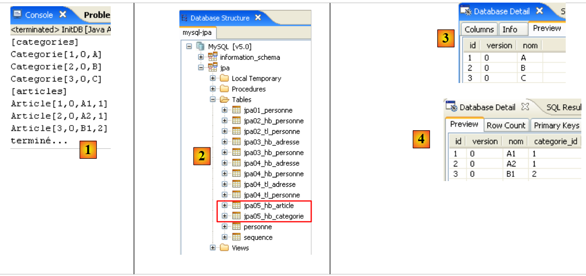 |
- [1]: de console-uitvoer
- [2]: de tabellen [jpa05_hb_*] in het SQL Explorer-overzicht
- [3]: de categorieentabel
- [4]: de artikeltabel. Let op de koppeling van [categorie_id] in [4] met [id] in [3] (vreemde sleutel).
2.4.6. Hoofdpagina
De klasse [Main] voert een reeks tests uit die we doorlopen, met uitzondering van tests 1 en 2, die de code van [InitDB] overnemen om de database te initialiseren.
2.4.6.1. Test3
Deze test is als volgt:
// een specifiek element zoeken
public static void test3() {
// nieuwe persistentiecontext
EntityManager em = getNewEntityManager();
// transactie
EntityTransaction tx = em.getTransaction();
tx.begin();
// categorie laden
Categorie categorie = em.find(Categorie.class, categorieA.getId());
// categorie en bijbehorende artikelen weergeven
System.out.format("Articles de la catégorie %s :%n", categorie);
for (Article a : categorie.getArticles()) {
System.out.println(a);
}
// transactie beëindigen
tx.commit();
}
- regel 4: we hebben een nieuwe, dus lege persistentie-context
- regels 6-7: begin transactie
- regel 9: categorie A wordt vanuit de database in de persistentie-context geladen
- regel 11: categorie A wordt weergegeven
- regels 12-14: de artikelen van categorie A worden weergegeven. Hier wordt het nut van de omgekeerde relatie OneToMany (artikelen van de @Entity Categorie) duidelijk. Dankzij deze relatie hoeven we geen query JPQL uit te voeren om de artikelen van categorie A op te vragen. Om deze te verkrijgen, gebruiken we de methode get van het veld articles.
De resultaten zijn als volgt:
- regel 20: categorie A
- regels 21-22: de twee artikelen uit categorie A
2.4.6.2. Test4
Deze test ziet er als volgt uit:
// een artikel verwijderen
@SuppressWarnings("unchecked")
public static void test4() {
// nieuwe persistentiecontext
EntityManager em = getNewEntityManager();
// transactie
EntityTransaction tx = em.getTransaction();
tx.begin();
// artikel laden A1
Article newarticle1 = em.find(Article.class, articleA1.getId());
// artikel verwijderen A1 (er is momenteel geen categorie geladen)
em.remove(newarticle1);
// toplink: het artikel moet uit de categorie worden verwijderd, anders crasht test6
// hibernate: dit is niet nodig
newarticle1.getCategorie().getArticles().remove(newarticle1);
// einde transactie
tx.commit();
// artikelen dumpen
dumpArticles();
}
- test 4 verwijdert het artikel A1
- regel 5: we beginnen met een nieuwe, lege context
- regel 10: het artikel A1 wordt in de persistentiecontext geplaatst. Daar wordt ernaar verwezen met newarticle1.
- regel 12: het wordt uit de context verwijderd
- regel 15: de categorieën A, B en C en de artikelen A1, A2 en B1 zijn, hoewel ze niet langer persistent zijn, nog steeds in het geheugen aanwezig. Ze zijn simpelweg losgekoppeld van de persistentie-context. Het artikel A1, dat deel uitmaakt van de artikelen in categorie A, wordt daaruit verwijderd. Dit maakt het later mogelijk om categorie A opnieuw aan de persistentie-context te koppelen. Als dit niet gebeurt, wordt categorie A gekoppeld aan een reeks artikelen waarvan er één is verwijderd. Dit lijkt Hibernate niet te hinderen, maar zorgt ervoor dat Toplink crasht.
- regel 19: we geven alle artikelen weer om te controleren of A1 verdwenen is.
De resultaten zijn als volgt:
Het artikel A1 is inderdaad verdwenen.
2.4.6.3. Test5
Deze test verloopt als volgt:
// wijziging van 1 artikel
public static void test5() {
// nieuwe persistentiecontext
EntityManager em = getNewEntityManager();
// transactie
EntityTransaction tx = em.getTransaction();
tx.begin();
// wijziging articleA2
articleA2.setNom(articleA2.getNom() + "-");
// articleA2 wordt teruggeplaatst in de persistentiecontext
em.merge(articleA2);
// einde transactie
tx.commit();
// artikelen dumpen
dumpArticles();
}
- test 5 wijzigt de naam van het artikel A2
- regel 4: we beginnen met een nieuwe, lege context
- regel 9: de naam van het losgekoppelde artikel A2 wordt gewijzigd in "A2-".
- regel 11: het losgekoppelde artikel A2 wordt opnieuw gekoppeld aan de persistentiecontext. Merk op dat A2 nog steeds een losgekoppeld object blijft. Het is het object em.merge (articleA2) dat nu deel uitmaakt van de persistentiecontext. Dit object is hier niet, zoals gebruikelijk, in een variabele opgeslagen. Het is dus niet toegankelijk.
- regel 13: synchronisatie van de persistentiecontext met de database. Het artikel A2 wordt in de database gewijzigd en het versienummer verandert van N naar N+1. De losstaande geheugenversie articleA2 is niet langer geldig. Hetzelfde geldt voor het losgekoppelde object dat categorie A vertegenwoordigt, omdat dit articleA2 onder zijn artikelen bevat.
- regel 15: alle artikelen worden weergegeven om de naamswijziging van het artikel A2 te controleren
De resultaten zijn als volgt:
De naam van het artikel A2 is inderdaad gewijzigd.
2.4.6.4. Test6
Deze test verloopt als volgt:
// wijziging van 1 categorie en de bijbehorende artikelen
public static void test6() {
// nieuwe persistentiecontext
EntityManager em = getNewEntityManager();
// transactie
EntityTransaction tx = em.getTransaction();
tx.begin();
// categorie laden
categorieA = em.find(Categorie.class, categorieA.getId());
// lijst met artikelen uit categorie A
for (Article a : categorieA.getArticles()) {
a.setNom(a.getNom() + "-");
}
// wijziging categorienaam
categorieA.setNom(categorieA.getNom() + "-");
// einde transactie
tx.commit();
// dump van categorieën en artikelen
dumpCategories();
dumpArticles();
}
- test 6 wijzigt de naam van categorie A en al haar artikelen
- regel 4: we beginnen met een nieuwe, lege context
- regel 9: we zoeken categorie A op in de database. We voeren geen merge uit op het losgekoppelde object categorieA, omdat we weten dat het een verwijzing bevat naar het artikel A2, dat verouderd is geworden. We beginnen dus opnieuw vanaf nul.
- regels 11-12: we wijzigen de naam van alle artikelen in categorie A. Opnieuw gebruiken we de omgekeerde relatie OneToMany via de methode getArticles.
- regel 15: de naam van de categorie wordt eveneens gewijzigd
- regel 17: einde van de transactie. De context wordt gesynchroniseerd met de database. Alle objecten in de context die zijn gewijzigd, worden bijgewerkt in de database.
- regels 21-22: de artikelen en categorieën worden ter controle weergegeven
De resultaten zijn als volgt:
Het artikel A2 heeft opnieuw een andere naam gekregen, evenals categorie A.
2.4.6.5. Test7
Deze test is als volgt:
// verwijdering van een categorie
public static void test7() {
// nieuwe persistentiecontext
EntityManager em = getNewEntityManager();
// transactie
EntityTransaction tx = em.getTransaction();
tx.begin();
// persistentie catégorieB en de bijbehorende artikelen in cascade verwijderen (merge)
Categorie mergedcategorieB = em.merge(categorieB);
// verwijdering van categorie en via cascade (delete) de bijbehorende artikelen
em.remove(mergedcategorieB);
// einde transactie
tx.commit();
// dump van categorieën en artikelen
dumpCategories();
dumpArticles();
}
- test 7 verwijdert categorie B en daarmee ook de artikelen daarin
- regel 4: we beginnen met een nieuwe, lege context
- regel 9: categorie B bestaat in het geheugen als een object dat losstaat van de persistentiecontext. We voegen deze (merge) weer toe aan de persistentiecontext. Als gevolg daarvan ondergaan de artikelen ervan (het artikel B1) een merge en worden ze dus opnieuw opgenomen in de persistentiecontext.
- regel 11: nu categorie B zich in de context bevindt, kan deze worden verwijderd (remove). Door een cascade-effect ondergaan de bijbehorende artikelen eveneens een remove. Deze bewerking is mogelijk omdat de bewerking merge uit regel 9 ze opnieuw in de persistentiecontext heeft opgenomen.
- regel 13: einde van de transactie. De context wordt gesynchroniseerd. De objecten in de context die een remove hebben ondergaan, worden uit de database verwijderd.
- regels 15-16: de artikelen en categorieën worden ter controle weergegeven
De resultaten zijn als volgt:
Categorie B en artikel B1 zijn inderdaad verdwenen.
2.4.6.6. Test8
Deze test is als volgt:
// verzoeken
@SuppressWarnings("unchecked")
public static void test8() {
// nieuwe persistentiecontext
EntityManager em = getNewEntityManager();
// transactie
EntityTransaction tx = em.getTransaction();
tx.begin();
// lijst met artikelen uit categorie A
List articles = em
.createQuery(
"select a from Categorie c join c.articles a where c.nom like 'A%' order by a.nom asc")
.getResultList();
// weergaven van artikelen
System.out.println("Articles de la catégorie A");
for (Object a : articles) {
System.out.println(a);
}
// einde transactie
tx.commit();
}
- Test 7 laat zien hoe je artikelen uit een categorie kunt ophalen zonder gebruik te maken van de omgekeerde relatie. Dit toont aan dat deze relatie dus niet onmisbaar is.
- regel 4: we beginnen met een nieuwe, lege context
- regel 10: een query JPQL die alle artikelen opvraagt uit een categorie waarvan de naam begint met A
- regels 15-17: weergave van het resultaat van de query.
De resultaten zijn als volgt:
2.4.7. Eclipse-/Hibernate-project 2
We kopiëren en plakken het Eclipse/Hibernate-project om een punt te verduidelijken over het begrip 'hoofdrelatie' en 'omgekeerde relatie' dat we hebben gecreëerd rond de annotatie @ManyToOne (hoofdrelatie) van de @Entity [Article] en de omgekeerde relatie @OneToMany (omgekeerde relatie) van de @Entity [Categorie]. We willen aantonen dat, als deze laatste relatie niet als omgekeerd ten opzichte van de andere wordt gedeclareerd, het voor de database gegenereerde schema totaal anders is dan het eerder gegenereerde schema.
 |
In [1] het nieuwe Eclipse-project. In [2] de Java-codes, in [3] het script ant dat het databaseschema SQL zal genereren. Het project bevindt zich in de map met voorbeelden. We gaan het importeren.
We wijzigen alleen de @Entity [Categorie], zodat de relatie @OneToMany met de @Entity [Article] niet langer wordt gedefinieerd als het omgekeerde van de relatie @ManyToOne die de @Entity [Article] heeft met de @Entity [Categorie]:
...
@Entity
@Table(name="jpa05_hb_categorie")
public class Categorie implements Serializable {
// velden
@Id
@GeneratedValue(strategy = GenerationType.AUTO)
private Long id;
@SuppressWarnings("unused")
@Version
private int version;
@Column(length = 30)
private String nom;
// niet-omgekeerde relatie OneToMany (geen mappedby) Categorie (één) -> Artikel (veel)
// geïmplementeerd door een koppelingstabel Categorie_Article, zodat men vanuit een categorie
// de artikelen van die categorie kunnen worden bereikt
@OneToMany(cascade=CascadeType.ALL, fetch=FetchType.LAZY)
private Set<Article> articles = new HashSet<Article>();
// fabrikanten
...
- regels 18-22: we willen nog steeds de mogelijkheid behouden om artikelen uit een bepaalde categorie te vinden via de relatie @OneToMany op regel 21. Maar we willen weten wat de invloed is van het attribuut mappedBy, dat van een relatie het omgekeerde maakt van een hoofdrelatie die elders, in een andere @Entity, is gedefinieerd. Hier is de mappedBy verwijderd.
We voeren de ant-DLL-taak uit (zie paragraaf 2.1.7) met de SGBD en MySQL5. Het verkregen schema is als volgt:
 |
Let op de volgende punten:
- er is een nieuwe tabel [categorie_article] [1] aangemaakt. Deze bestond voorheen niet.
- Het is een koppelingstabel tussen de tabellen [categorie] [2] en [article] [3]. Als de objecten Artikel a1 en a2 deel uitmaken van de categorie c1, zijn in de koppelingstabel de volgende rijen te vinden:
waarbij c1, a1 en a2 de primaire sleutels zijn van de bijbehorende objecten.
- De koppelingstabel [categorie_article] [1] is door Hibernate aangemaakt, zodat op basis van een Categorie-object c de Artikel-objecten a kunnen worden opgezocht die behoren tot c. Het is de relatie @OneToMany die ervoor heeft gezorgd dat deze tabel is aangemaakt. Omdat deze relatie niet als omgekeerd aan de hoofdrelatie @ManyToOne van de @Entity Artikel is gedeclareerd, wist Hibernate niet dat het deze hoofdrelatie kon gebruiken om de artikelen van een categorie c op te halen. Het heeft het dus op een andere manier opgelost.
- Aan de hand van dit voorbeeld krijgen we een beter begrip van de begrippen relaties principale en inverse. De ene (de omgekeerde) maakt gebruik van de eigenschappen van de andere (de primaire).
Het schema SQL van deze database voor MySQL5 is als volgt:
alter table jpa05_hb_categorie_jpa06_hb_article
drop
foreign key FK79D4BA1D26D17756;
alter table jpa05_hb_categorie_jpa06_hb_article
drop
foreign key FK79D4BA1D424C61C9;
alter table jpa06_hb_article
drop
foreign key FK4547168FECCE8750;
drop table if exists jpa05_hb_categorie;
drop table if exists jpa05_hb_categorie_jpa06_hb_article;
drop table if exists jpa06_hb_article;
create table jpa05_hb_categorie (
id bigint not null auto_increment,
version integer not null,
nom varchar(30),
primary key (id)
) ENGINE=InnoDB;
create table jpa05_hb_categorie_jpa06_hb_article (
jpa05_hb_categorie_id bigint not null,
articles_id bigint not null,
primary key (jpa05_hb_categorie_id, articles_id),
unique (articles_id)
) ENGINE=InnoDB;
create table jpa06_hb_article (
id bigint not null auto_increment,
version integer not null,
nom varchar(30),
categorie_id bigint not null,
primary key (id)
) ENGINE=InnoDB;
alter table jpa05_hb_categorie_jpa06_hb_article
add index FK79D4BA1D26D17756 (jpa05_hb_categorie_id),
add constraint FK79D4BA1D26D17756
foreign key (jpa05_hb_categorie_id)
references jpa05_hb_categorie (id);
alter table jpa05_hb_categorie_jpa06_hb_article
add index FK79D4BA1D424C61C9 (articles_id),
add constraint FK79D4BA1D424C61C9
foreign key (articles_id)
references jpa06_hb_article (id);
alter table jpa06_hb_article
add index FK4547168FECCE8750 (categorie_id),
add constraint FK4547168FECCE8750
foreign key (categorie_id)
references jpa05_hb_categorie (id);
- regels 19-24: aanmaak van de tabel [categorie] en regels 33-39: aanmaak van de tabel [article]. Merk op dat deze identiek zijn aan die in het vorige voorbeeld.
- regels 26-31: aanmaak van de koppelingstabel [categorie_article] vanwege de aanwezigheid van de niet-omgekeerde relatie @OneToMany van de @Entity Categorie. De rijen in deze tabel zijn van het type [c,a], waarbij c de primaire sleutel is van een categorie c en a de primaire sleutel is vaneen artikel a dat tot de categorie c behoort. De primaire sleutel van deze koppelingstabel bestaat uit de twee aaneengekoppelde primaire sleutels [c,a] (rij 29).
- regels 41-45: de vreemde-sleutelbeperking van de tabel [categorie_article] naar de tabel [categorie]
- regels 47-51: de vreemde-sleutelbeperking van de tabel [categorie_article] naar de tabel [article]
- regels 53-57: de foreign key-constraint van tabel [article] naar tabel [categorie]
De lezer wordt uitgenodigd om de tests [InitDB] en [Main] uit te voeren. Deze leveren dezelfde resultaten op als voorheen. Het databaseschema is echter redundant en de prestaties zullen achterblijven ten opzichte van de vorige versie. Deze kwestie van omgekeerde en hoofdrelaties zou ongetwijfeld nader moeten worden onderzocht om te zien of de nieuwe configuratie bovendien geen conflicten veroorzaakt doordat er twee onafhankelijke relaties zijn om hetzelfde weer te geven: de veel-op-één-relatie die de tabel [article] heeft met de tabel [categorie].
2.4.8. Implementatie JPA / Toplink - 1
We gebruiken nu een implementatie JPA / Toplink:
 |
Het Eclipse-project met Toplink is een kopie van het Eclipse-project met Hibernate, versie 1:
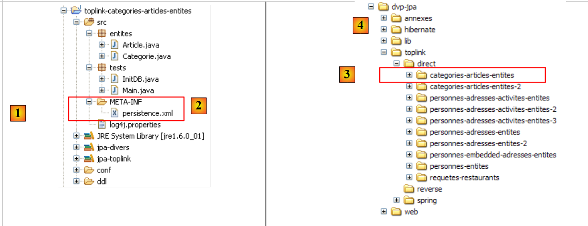 |
De Java-codes zijn identiek aan die van het vorige Hibernate-project – versie 1. De omgeving (bibliotheken – persistence.xml – DBMS – conf-mappen, DDL – Ant-script) is dezelfde als die welke in paragraaf 2.1.15.2 is besproken. Het Eclipse-project [3] bevindt zich in de map met voorbeelden [4]. We zullen het importeren.
Het bestand <persistence.xml> [2] is op één punt gewijzigd, namelijk bij de gedeclareerde entiteiten:
...
<!-- persistente klassen -->
<class>entites.Categorie</class>
<class>entites.Article</class>
...
- regels 3 en 4: de twee beheerde entiteiten
De uitvoering van [InitDB] samen met SGBD en MySQL5 levert de volgende resultaten op:
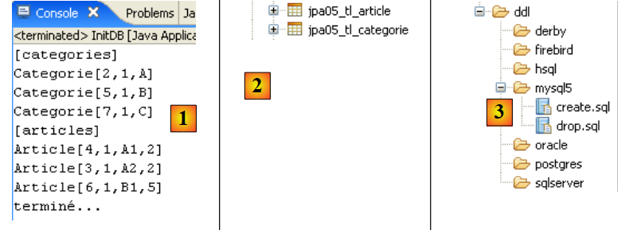 |
In [1], de console-uitvoer, in [2] de twee gegenereerde tabellen [jpa05_tl], in [3] de gegenereerde scripts SQL. Hun inhoud is als volgt:
create.sql
CREATE TABLE jpa05_tl_article (ID BIGINT NOT NULL, VERSION INTEGER, NOM VARCHAR(30), categorie_id BIGINT NOT NULL, PRIMARY KEY (ID))
CREATE TABLE jpa05_tl_categorie (ID BIGINT NOT NULL, VERSION INTEGER, NOM VARCHAR(30), PRIMARY KEY (ID))
ALTER TABLE jpa05_tl_article ADD CONSTRAINT FK_jpa05_tl_article_categorie_id FOREIGN KEY (categorie_id) REFERENCES jpa05_tl_categorie (ID)
CREATE TABLE SEQUENCE (SEQ_NAME VARCHAR(50) NOT NULL, SEQ_COUNT DECIMAL(38), PRIMARY KEY (SEQ_NAME))
INSERT INTO SEQUENCE(SEQ_NAME, SEQ_COUNT) values ('SEQ_GEN', 1)
drop.sql
ALTER TABLE jpa05_tl_article DROP FOREIGN KEY FK_jpa05_tl_article_categorie_id
DROP TABLE jpa05_tl_article
DROP TABLE jpa05_tl_categorie
DELETE FROM SEQUENCE WHERE SEQ_NAME = 'SEQ_GEN'
De uitvoering van [Main] verloopt zonder fouten.
2.4.9. Implementatie JPA / Toplink - 2
Dit Eclipse-project is door kopiëren afgeleid van het vorige. Aangezien het met Hibernate is gemaakt, verwijderen we het attribuut mappedBy uit de relatie @OneToMany van de @Entity Categorie.
@Entity
@Table(name = "jpa06_tl_categorie")
public class Categorie implements Serializable {
// velden
@Id
@GeneratedValue(strategy = GenerationType.AUTO)
private Long id;
@Version
private int version;
@Column(length = 30)
private String nom;
// relatie OneToMany niet-invers (geen mappedby) Categorie (one) ->
// Artikel (many)
// geïmplementeerd door een koppelingstabel Categorie_Article, zodat op basis van
// vanuit een categorie
// meerdere artikelen kunnen worden bereikt
@OneToMany(cascade = CascadeType.ALL, fetch = FetchType.LAZY)
private Set<Article> articles = new HashSet<Article>();
Het schema SQL dat voor MySQL5 is gegenereerd, ziet er dan als volgt uit:
create.sql
CREATE TABLE jpa06_tl_categorie (ID BIGINT NOT NULL, VERSION INTEGER, NOM VARCHAR(30), PRIMARY KEY (ID))
CREATE TABLE jpa06_tl_categorie_jpa06_tl_article (Categorie_ID BIGINT NOT NULL, articles_ID BIGINT NOT NULL, PRIMARY KEY (Categorie_ID, articles_ID))
CREATE TABLE jpa06_tl_article (ID BIGINT NOT NULL, VERSION INTEGER, NOM VARCHAR(30), categorie_id BIGINT NOT NULL, PRIMARY KEY (ID))
ALTER TABLE jpa06_tl_categorie_jpa06_tl_article ADD CONSTRAINT FK_jpa06_tl_categorie_jpa06_tl_article_articles_ID FOREIGN KEY (articles_ID) REFERENCES jpa06_tl_article (ID)
ALTER TABLE jpa06_tl_categorie_jpa06_tl_article ADD CONSTRAINT jpa06_tl_categorie_jpa06_tl_article_Categorie_ID FOREIGN KEY (Categorie_ID) REFERENCES jpa06_tl_categorie (ID)
ALTER TABLE jpa06_tl_article ADD CONSTRAINT FK_jpa06_tl_article_categorie_id FOREIGN KEY (categorie_id) REFERENCES jpa06_tl_categorie (ID)
CREATE TABLE SEQUENCE (SEQ_NAME VARCHAR(50) NOT NULL, SEQ_COUNT DECIMAL(38), PRIMARY KEY (SEQ_NAME))
INSERT INTO SEQUENCE(SEQ_NAME, SEQ_COUNT) values ('SEQ_GEN', 1)
- regel 2: de koppelingstabel die de voorgaande niet-inverse relatie @OneToMany concretiseert.
De uitvoering van [InitDB] verloopt foutloos, maar die van [Main] loopt vast bij test 7 met de volgende logbestanden (FINEST):
- regel 3: merge in categorie B
- regel 4: het afhankelijke artikel B1 wordt in de context geplaatst
- regel 5: idem voor categorie B zelf
- regel 6: de remove in categorie B
- regel 7: de remove voor het artikel B1 (via cascading)
- regel 8: de commit van de transactie wordt opgevraagd door de Java-code
- regel 9: er wordt een transactie gestart – deze was blijkbaar nog niet begonnen.
- regel 10: het artikel B1 wordt verwijderd door een bewerking DELETE in de tabel [article]. Daar zit het probleem. De koppelingstabel [categorie_article] heeft een verwijzing naar rij B1 in de tabel [article]. Het verwijderen van B1 in [article] zal een vreemde-sleutelbeperking schenden.
- regels 13 en verder: de uitzondering treedt op
Wat kunnen we hieruit concluderen?
- Opnieuw is er een probleem met de overdraagbaarheid tussen Hibernate en Toplink: Hibernate had deze test met succes doorstaan
- Toplink kan slecht omgaan met het feit dat, wanneer twee relaties in feite omgekeerd aan elkaar zijn, de ene niet als primaire relatie en de andere niet als omgekeerde relatie is gedeclareerd. Dit is acceptabel, omdat dit geval in feite een configuratiefout vertegenwoordigt. In ons voorbeeld heeft de tabel [article] geen relatie met de join-tabel [categorie_article]. Het lijkt dan ook logisch dat Toplink bij een bewerking op de tabel [article] niet probeert te werken met de tabel [categorie_article].
2.5. Voorbeeld 5: veel-op-veel-relatie met een expliciete koppelingstabel
2.5.1. Het databaseschema
- in [1], de database MySQL5
We kennen de tabellen [personne], [2] en [adresse], [3] al. Deze zijn besproken in paragraaf 2.3.1. We nemen de versie waarin het adres van de persoon in een aparte tabel is ondergebracht: [adresse] en [3]. In de tabel [personne] wordt de relatie tussen een persoon en zijn adres weergegeven door een vreemde-sleutelbeperking.
Een persoon beoefent activiteiten. Deze staan vermeld in de tabellen [activite] en [4]. Een persoon kan meerdere activiteiten beoefenen en een activiteit kan door meerdere personen worden beoefend. Er bestaat dus een veel-op-veel-relatie tussen de tabellen [personne] en [activite]. Deze wordt gerealiseerd door de koppelingstabel [personne_activite] [5].
2.5.2. De @Entity-objecten die de database vertegenwoordigen
De bovenstaande tabellen worden weergegeven door de volgende @Entity’s:
- de @Entity Personne vertegenwoordigt de tabel [personne]
- de @Entity Adresse vertegenwoordigt de tabel [adresse]
- de @Entity Activite vertegenwoordigt de tabel [activite]
- de @Entity PersonneActivite vertegenwoordigt de tabel [personne_activite]
De relaties tussen deze entiteiten zijn als volgt:
- een één-op-één-relatie verbindt de entiteit Personne met de entiteit Adresse: een persoon p heeft een adres a. De entiteit Personne, die de vreemde sleutel bevat, heeft de hoofdrelatie; de entiteit Adresse heeft de omgekeerde relatie.
- Een veel-op-veel-relatie verbindt de entiteiten Personne en Activite: een persoon heeft meerdere activiteiten en een activiteit wordt door meerdere personen beoefend. Deze relatie zou rechtstreeks kunnen worden gerealiseerd door middel van een annotatie @ManyToMany in elk van beide entiteiten, waarbij de ene als omgekeerd aan de andere wordt gedefinieerd. Deze oplossing zal later worden onderzocht. Hier realiseren we de veel-op-veel-relatie door middel van twee één-op-veel-relaties:
- een één-op-veel-relatie die de entiteit Personne koppelt aan de entiteit PersonneActivite: één rij (One) van de tabel [personne] wordt door meerdere (Many) rijen van de tabel [personne_activite] aangeduid. De tabel [personne_activite], die de vreemde sleutel bevat, zal de primaire relatie @ManyToOne bevatten en de entiteit Personne de omgekeerde relatie @OneToMany.
- een één-op-veel-relatie die de entiteit Activite koppelt aan de entiteit PersonneActivite: één (One) rij uit de tabel [activite] wordt door meerdere (Many) rijen uit de tabel [personne_activite] gerefereerd. De tabel [personne_activite], die de vreemde sleutel bevat, zal de primaire relatie @ManyToOne bevatten en de entiteit Activite de omgekeerde relatie @OneToMany.
De @Entity Personne is als volgt:
@Entity
@Table(name = "jpa07_hb_personne")
public class Personne implements Serializable {
@Id
@Column(nullable = false)
@GeneratedValue(strategy = GenerationType.AUTO)
private Long id;
@Column(nullable = false)
@Version
private int version;
@Column(length = 30, nullable = false, unique = true)
private String nom;
@Column(length = 30, nullable = false)
private String prenom;
@Column(nullable = false)
@Temporal(TemporalType.DATE)
private Date datenaissance;
@Column(nullable = false)
private boolean marie;
@Column(nullable = false)
private int nbenfants;
// hoofdrelatie Persoon (one) -> Adres (one)
// geïmplementeerd door de vreemde sleutel Persoon(adresse_id) -> Adres
// cascade-invoeging Persoon -> invoeging Adres
// cascade-update Persoon -> update Adres
// cascade verwijdering Persoon -> verwijdering Adres
// een persoon moet 1 adres hebben (nullable=false)
// 1 adres hoort bij slechts 1 persoon (unique=true)
@OneToOne(cascade = CascadeType.ALL)
@JoinColumn(name = "adresse_id", unique = true, nullable = false)
private Adresse adresse;
// relatie Persoon (één) -> PersonneActivite (veel)
// omgekeerde van de bestaande relatie PersonneActivite (many) -> Persoon (one)
// cascade verwijdering Persoon -> verwijdering PersonneActivite
@OneToMany(mappedBy = "personne", cascade = { CascadeType.REMOVE })
private Set<PersonneActivite> activites = new HashSet<PersonneActivite>();
// fabrikanten
Deze @Entity is bekend. We bespreken alleen de relaties die deze entiteit heeft met andere entiteiten:
- regels 30-39: een één-op-één-relatie @OneToOne met de @Entity Adresse, gerealiseerd door een vreemde sleutel [adresse_id] (regel 38) die de tabel [personne] zal hebben op de tabel [adresse].
- regels 41-45: een één-op-veel-relatie @OneToMany met de @Entity PersonneActivite. Eén persoon (One) wordt door meerdere (Many) rijen in de koppelingstabel [personne_activite], weergegeven door de @Entity PersonneActivite, aangeduid. Deze objecten PersonneActivite worden ondergebracht in een type Set<PersonneActivite>, waarbij PersonneActivite een type is dat we straks zullen definiëren.
- regel 44: de hier gedefinieerde één-op-veel-relatie is de omgekeerde relatie van een hoofdrelatie die is gedefinieerd op het veld personne van de @Entity PersonneActivite (trefwoord mappedBy). Er is een cascade ‘Persoon -> Activiteit’ bij verwijderingen: het verwijderen van een persoon p leidt tot het verwijderen van de persistente elementen van het type PersonneActivite die zich in de verzameling p.activites bevinden.
De @Entity Adresse is als volgt:
@Entity
@Table(name = "jpa07_hb_adresse")
public class Adresse implements Serializable {
// velden
@Id
@Column(nullable = false)
@GeneratedValue(strategy = GenerationType.AUTO)
private Long id;
@Column(nullable = false)
@Version
private int version;
@Column(length = 30, nullable = false)
private String adr1;
@Column(length = 30)
private String adr2;
@Column(length = 30)
private String adr3;
@Column(length = 5, nullable = false)
private String codePostal;
@Column(length = 20, nullable = false)
private String ville;
@Column(length = 3)
private String cedex;
@Column(length = 20, nullable = false)
private String pays;
@OneToOne(mappedBy = "adresse")
private Personne personne;
- regels 28-29: de @OneToOne-relatie is de omgekeerde van de @OneToOne-relatie, die verwijst naar de @Entity Personne (regels 37-38 van Personne).
De @Entity Activite is als volgt
@Entity
@Table(name = "jpa07_hb_activite")
public class Activite implements Serializable {
// velden
@Id
@Column(nullable = false)
@GeneratedValue(strategy = GenerationType.AUTO)
private Long id;
@Column(nullable = false)
@Version
private int version;
@Column(length = 30, nullable = false, unique = true)
private String nom;
// relatie Activiteit (één) -> PersonneActivite (veel)
// omgekeerde van de bestaande relatie PersonneActivite (veel) -> Activiteit (één)
// cascadeverwijdering Activiteit -> verwijdering PersonneActivite
@OneToMany(mappedBy = "activite", cascade = { CascadeType.REMOVE })
private Set<PersonneActivite> personnes = new HashSet<PersonneActivite>();
- regels 6-9: de primaire sleutel van de activiteit
- regels 11-13: het versienummer van de activiteit
- regels 15-16: de naam van de activiteit
- regels 18-22: de één-op-veel-relatie die de @Entity Activite koppelt aan de @Entity PersonneActivite: één activiteit (One) wordt door meerdere (Many) rijen in de koppelingstabel [personne_activite], weergegeven door de @Entity PersonneActivite, aangeduid. Deze objecten PersonneActivite worden ondergebracht in een type Set<PersonneActivite>.
- regel 22: de hier gedefinieerde één-op-veel-relatie is de omgekeerde relatie van een hoofdrelatie die is gedefinieerd op het veld activite in de @Entity PersonneActivite (trefwoord mappedBy). Er is een cascade Activite -> PersonneActivite bij verwijderingen: het verwijderen van de tabel [activite] uiteen activiteit a zal leiden tot het verwijderen van de join-tabel [personne_activite] van de persistente elementen van het type PersonneActivite die in de verzameling a.personnes zijn gevonden.
De @Entity PersonneActivite is als volgt:
@Entity
// koppelingstabel
@Table(name = "jpa07_hb_personne_activite")
public class PersonneActivite {
@Embeddable
public static class Id implements Serializable {
// componenten van de samengestelde sleutel
// verwijst naar een persoon
@Column(name = "PERSONNE_ID")
private Long personneId;
// verwijst naar een Activiteit
@Column(name = "ACTIVITE_ID")
private Long activiteId;
// constructors
...
// getters en setters
...
// toString
public String toString() {
return String.format("[%d,%d]", getPersonneId(), getActiviteId());
}
}
// velden van de klasse Personne_Activite
// samengestelde sleutel
@EmbeddedId
private Id id = new Id();
// hoofdrelatie PersonneActivite (many) -> Persoon (one)
// geïmplementeerd door de vreemde sleutel: personneId (PersonneActivite (many) -> Persoon (one)
// personneId is tegelijkertijd een onderdeel van de samengestelde primaire sleutel
// JPA hoeft deze vreemde sleutel niet te beheren (insertable = false, updatable = false), omdat dit door de applicatie zelf in de constructor wordt gedaan
@ManyToOne
@JoinColumn(name = "PERSONNE_ID", insertable = false, updatable = false)
private Personne personne;
// hoofdrelatie PersonneActivite -> Activiteit
// geïmplementeerd door de externe sleutel: activiteId (PersonneActivite (veel) -> Activiteit (één)
// activiteId is tegelijkertijd onderdeel van de samengestelde primaire sleutel
// JPA hoeft deze vreemde sleutel niet te beheren (insertable = false, updatable = false), omdat dit door de applicatie zelf in de constructor wordt gedaan
@ManyToOne()
@JoinColumn(name = "ACTIVITE_ID", insertable = false, updatable = false)
private Activite activite;
// constructors
public PersonneActivite() {
}
public PersonneActivite(Personne p, Activite a) {
// vreemde sleutels worden door de applicatie vastgelegd
getId().setPersonneId(p.getId());
getId().setActiviteId(a.getId());
// bidirectionele koppelingen
this.setPersonne(p);
this.setActivite(a);
p.getActivites().add(this);
a.getPersonnes().add(this);
}
// getters en setters
...
// toString
public String toString() {
return String.format("[%s,%s,%s]", getId(), getPersonne().getNom(), getActivite().getNom());
}
}
Deze klasse is complexer dan de voorgaande.
- De tabel [personne_activite] bevat rijen in de vorm [p,a], waarbij p de primaire sleutel van een persoon is en a de primaire sleutel van een activiteit. Elke tabel moet een primaire sleutel hebben en [personne_activite] vormt hierop geen uitzondering. Tot nu toe hadden we primaire sleutels gedefinieerd die dynamisch werden gegenereerd door de SGBD. Dat zouden we hier ook kunnen doen. We gaan echter een andere techniek gebruiken, waarbij de applicatie zelf de waarden van de primaire sleutel van een tabel definieert. Hier geeft een rij [p1,a1] aan dat een persoon p1 de activiteit a1 beoefent. Deze rij komt in de tabel niet nog een keer voor. Het paar (p,a) is dus een goede kandidaat voor de primaire sleutel. Dit noemen we een samengestelde primaire sleutel.
- regels 30-31: de samengestelde primaire sleutel. De annotatie @EmbeddedId (meestal was dit @Id) is vergelijkbaar met de notatie @Embedded toegepast op het veld Adresse van een persoon. In dat laatste geval betekende dit dat het veld Adresse het onderwerp was van een externe klasse, maar in dezelfde tabel als de persoon moest worden ingevoegd. Hier is de betekenis dezelfde, maar om aan te geven dat het om de primaire sleutel gaat, wordt de notatie @EmbeddedId.
- regel 31: een leeg object dat de primaire sleutel id vertegenwoordigt, wordt aangemaakt zodra het object [PersonneActivite] wordt aangemaakt. De klasse die de primaire sleutel vertegenwoordigt, wordt gedefinieerd op de regels 7-26, als een openbare, statische klasse die intern is aan de klasse [PersonneActivite]. Het feit dat deze openbaar en statisch is, wordt opgelegd door Hibernate. Als we `public static` vervangen door `private,`, treedt er een uitzondering op en zien we in de bijbehorende foutmelding dat Hibernate heeft geprobeerd de instructie `new PersonneActivite$Id` uit te voeren. De klasse Id moet dus zowel statisch als openbaar zijn.
- regel 6: de Id-klasse van de primaire sleutel wordt gedeclareerd als @Embeddable. We herinneren ons dat de primaire sleutel id van regel 31 is gedeclareerd als @EmbeddedId. De bijbehorende klasse moet dus de annotatie @Embeddable hebben.
- We hebben gezegd dat de primaire sleutel van de tabel [personne_activite] bestaat uit het paar (p,a), waarbij p de primaire sleutel van een persoon is en a de primaire sleutel van een activiteit. We vinden de twee elementen (p,a) van de samengestelde sleutel in rij 11 (personneId) en rij 15 (activiteId). De kolommen die bij deze twee velden horen, heten: PERSONNE_ID voor de persoon, ACTIVITE_ID voor de activiteit.
- regel 31: de primaire sleutel is gedefinieerd met zijn twee kolommen (PERSONNE_ID, ACTIVITE_ID). Er zijn geen andere kolommen in de tabel [personne_activite]. Nu hoeven we alleen nog maar de relaties te definiëren die bestaan tussen de @Entity PersonneActivite die we momenteel beschrijven en de andere @Entity's van het relationele schema. Deze relaties geven de vreemde-sleutelbeperkingen weer die de tabel [personne_activite] heeft met de andere tabellen.
- regels 33-39: definiëren de vreemde sleutel die de tabel [personne_activite] heeft op de tabel [personne]
- regel 37: de relatie is van het type @ManyToOne: één (One) rij uit de tabel [personne] wordt door meerdere (Many) rijen uit de tabel [personne_activite] aangeduid.
- regel 38: de kolom met de vreemde sleutel wordt benoemd. We gebruiken dezelfde naam als die voor de component „persoon” van de vreemde sleutel (regel 10). De attributen insertable=false, updatable=false zijn bedoeld om te voorkomen dat Hibernate de vreemde sleutel beheert. Deze is namelijk de component van een primaire sleutel die door de applicatie wordt berekend en Hibernate mag hier niet tussenkomen.
- regels 41-47: definiëren de vreemde sleutel die de tabel [personne_activite] heeft op de tabel [activite]. De uitleg is dezelfde als hierboven gegeven.
- regels 54-63: constructor van een object PersonneActivite op basis van een persoon p en een activiteit a. We herinneren ons dat bij het aanmaken van een object PersonneActivite de primaire sleutel id uit regel 31 verwees naar een leeg object Id. In de regels 56-57 wordt aan elk van de velden (personneId, activiteId) van het object Id een waarde toegekend. Deze waarden zijn respectievelijk de primaire sleutels van de persoon p en de activiteit a die als parameter aan de constructor zijn doorgegeven. De primaire sleutel id (regel 31) heeft dus nu een waarde.
- regel 59: het veld personne van regel 39 krijgt de waarde p
- regel 60: het veld activite van regel 47 krijgt de waarde a
- Er is nu een object [PersonneActivite] aangemaakt en geïnitialiseerd. De omgekeerde relaties tussen de @Entity's Personne (regel 61) en Activite (regel 62) met de zojuist aangemaakte @Entity PersonneActivite worden bijgewerkt.
We zijn klaar met de beschrijving van de entiteiten in de database. We bevinden ons in een complexe, maar helaas veelvoorkomende situatie. We zullen zien dat er een andere mogelijke configuratie bestaat voor de laag JPA, die een deel van deze complexiteit verbergt: de join-tabel wordt impliciet, opgebouwd en beheerd door de laag JPA. We hebben hier gekozen voor de meest complexe oplossing, maar deze biedt wel de mogelijkheid om het relationele schema te laten evolueren. Hierdoor kunnen kolommen aan de join-tabel worden toegevoegd, wat niet mogelijk is in de configuratie waarbij de join-tabel geen expliciete @Entity is. [ref1] beveelt de oplossing aan die we momenteel bestuderen. In [ref1] is de informatie gevonden die de uitwerking van deze oplossing mogelijk heeft gemaakt.
2.5.3. Het Eclipse-/Hibernate-project
De hier gebruikte implementatie JPA is die van Hibernate. Het Eclipse-project voor de tests is het volgende:

In [1] staat het Eclipse-project, in [2] de Java-code. Het project bevindt zich in [3] in de map met voorbeelden [4]. We zullen het importeren.
2.5.4. Genereren van de DDL van de database
Volgens de instructies in paragraaf 2.1.7 is de DDL die is verkregen voor de SGBD MySQL5 als volgt:
alter table jpa07_hb_personne
drop
foreign key FKB5C817D45FE379D0;
alter table jpa07_hb_personne_activite
drop
foreign key FKD3E49B06CD852024;
alter table jpa07_hb_personne_activite
drop
foreign key FKD3E49B0668C7A284;
drop table if exists jpa07_hb_activite;
drop table if exists jpa07_hb_adresse;
drop table if exists jpa07_hb_personne;
drop table if exists jpa07_hb_personne_activite;
create table jpa07_hb_activite (
id bigint not null auto_increment,
version integer not null,
nom varchar(30) not null unique,
primary key (id)
) ENGINE=InnoDB;
create table jpa07_hb_adresse (
id bigint not null auto_increment,
version integer not null,
adr1 varchar(30) not null,
adr2 varchar(30),
adr3 varchar(30),
codePostal varchar(5) not null,
ville varchar(20) not null,
cedex varchar(3),
pays varchar(20) not null,
primary key (id)
) ENGINE=InnoDB;
create table jpa07_hb_personne (
id bigint not null auto_increment,
version integer not null,
nom varchar(30) not null unique,
prenom varchar(30) not null,
datenaissance date not null,
marie bit not null,
nbenfants integer not null,
adresse_id bigint not null unique,
primary key (id)
) ENGINE=InnoDB;
create table jpa07_hb_personne_activite (
PERSONNE_ID bigint not null,
ACTIVITE_ID bigint not null,
primary key (PERSONNE_ID, ACTIVITE_ID)
) ENGINE=InnoDB;
alter table jpa07_hb_personne
add index FKB5C817D45FE379D0 (adresse_id),
add constraint FKB5C817D45FE379D0
foreign key (adresse_id)
references jpa07_hb_adresse (id);
alter table jpa07_hb_personne_activite
add index FKD3E49B06CD852024 (ACTIVITE_ID),
add constraint FKD3E49B06CD852024
foreign key (ACTIVITE_ID)
references jpa07_hb_activite (id);
alter table jpa07_hb_personne_activite
add index FKD3E49B0668C7A284 (PERSONNE_ID),
add constraint FKD3E49B0668C7A284
foreign key (PERSONNE_ID)
references jpa07_hb_personne (id);
- regels 21-26: de tabel [activite]
- regels 28-39: de tabel [adresse]
- regels 41-51: de tabel [personne]
- regels 53-57: de koppelingstabel [personne_activite]. Let op de samengestelde sleutel (regel 56)
- regels 59-63: de vreemde sleutel van de tabel [personne] naar de tabel [adresse]
- regels 65-69: de vreemde sleutel van de tabel [personne_activite] naar de tabel [activite]
- regels 71-75: de vreemde sleutel van tabel [personne_activite] naar tabel [personne]
2.5.5. InitDB
De code van [InitDB] is als volgt:
package tests;
...
public class InitDB {
// constanten
private final static String TABLE_PERSONNE_ACTIVITE = "jpa07_hb_personne_activite";
private final static String TABLE_PERSONNE = "jpa07_hb_personne";
private final static String TABLE_ACTIVITE = "jpa07_hb_activite";
private final static String TABLE_ADRESSE = "jpa07_hb_adresse";
public static void main(String[] args) throws ParseException {
// persistentiecontext
EntityManagerFactory emf = Persistence.createEntityManagerFactory("jpa");
EntityManager em = null;
// we halen een EntityManager op uit de EntityManagerFactory
// vorige
em = emf.createEntityManager();
// begin transactie
EntityTransaction tx = em.getTransaction();
tx.begin();
// verzoek
Query sql1;
// elementen uit de tabel verwijderen PERSONNE_ACTIVITE
sql1 = em.createNativeQuery("delete from " + TABLE_PERSONNE_ACTIVITE);
sql1.executeUpdate();
// elementen uit de tabel PERSONNE verwijderen
sql1 = em.createNativeQuery("delete from " + TABLE_PERSONNE);
sql1.executeUpdate();
// verwijder de elementen uit de tabel ACTIVITE
sql1 = em.createNativeQuery("delete from " + TABLE_ACTIVITE);
sql1.executeUpdate();
// verwijder de elementen uit de tabel ADRESSE
sql1 = em.createNativeQuery("delete from " + TABLE_ADRESSE);
sql1.executeUpdate();
// activiteiten aanmaken
Activite act1 = new Activite();
act1.setNom("act1");
Activite act2 = new Activite();
act2.setNom("act2");
Activite act3 = new Activite();
act3.setNom("act3");
// activiteiten opslaan
em.persist(act1);
em.persist(act2);
em.persist(act3);
// personen aanmaken
Personne p1 = new Personne("p1", "Paul", new SimpleDateFormat("dd/MM/yy").parse("31/01/2000"), true, 2);
Personne p2 = new Personne("p2", "Sylvie", new SimpleDateFormat("dd/MM/yy").parse("05/07/2001"), false, 0);
Personne p3 = new Personne("p3", "Sylvie", new SimpleDateFormat("dd/MM/yy").parse("05/07/2001"), false, 0);
// adressen aanmaken
Adresse adr1 = new Adresse("adr1", null, null, "49000", "Angers", null, "France");
Adresse adr2 = new Adresse("adr2", "Les Mimosas", "15 av Foch", "49002", "Angers", "03", "France");
Adresse adr3 = new Adresse("adr3", "x", "x", "x", "x", "x", "x");
Adresse adr4 = new Adresse("adr4", "y", "y", "y", "y", "y", "y");
// koppeling persoon <--> adres
p1.setAdresse(adr1);
adr1.setPersonne(p1);
p2.setAdresse(adr2);
adr2.setPersonne(p2);
p3.setAdresse(adr3);
adr3.setPersonne(p3);
// persistentie van personen en dus van de bijbehorende adressen
em.persist(p1);
em.persist(p2);
em.persist(p3);
// persistentie van adres a4 dat niet aan een persoon is gekoppeld
em.persist(adr4);
// weergave van personen
System.out.println("[personnes]");
for (Object p : em.createQuery("select p from Personne p order by p.nom asc").getResultList()) {
System.out.println(p);
}
// weergave van adressen
System.out.println("[adresses]");
for (Object a : em.createQuery("select a from Adresse a").getResultList()) {
System.out.println(a);
}
System.out.println("[activites]");
for (Object a : em.createQuery("select a from Activite a").getResultList()) {
System.out.println(a);
}
// koppelingen persoon <--> activiteit
PersonneActivite p1act1 = new PersonneActivite(p1, act1);
PersonneActivite p1act2 = new PersonneActivite(p1, act2);
PersonneActivite p2act1 = new PersonneActivite(p2, act1);
PersonneActivite p2act3 = new PersonneActivite(p2, act3);
// persistentie van koppelingen persoon <--> activiteit
em.persist(p1act1);
em.persist(p1act2);
em.persist(p2act1);
em.persist(p2act3);
// weergave personen
System.out.println("[personnes]");
for (Object p : em.createQuery("select p from Personne p order by p.nom asc").getResultList()) {
System.out.println(p);
}
// weergave van adressen
System.out.println("[adresses]");
for (Object a : em.createQuery("select a from Adresse a").getResultList()) {
System.out.println(a);
}
System.out.println("[activites]");
for (Object a : em.createQuery("select a from Activite a").getResultList()) {
System.out.println(a);
}
System.out.println("[personnes/activites]");
for (Object pa : em.createQuery("select pa from PersonneActivite pa").getResultList()) {
System.out.println(pa);
}
// einde transactie
tx.commit();
// einde EntityManager
em.close();
// einde EntityManagerFactory
emf.close();
// logboek
System.out.println("terminé...");
}
}
- regels 27-38: de tabellen [personne_activite], [personne], [adresse] en [activite] worden leeggemaakt. Let op: we moeten beginnen met de tabellen die vreemde sleutels bevatten.
- regels 40-45: er worden drie activiteiten aangemaakt: act1, act2 en act3
- regels 47-49: deze worden in de persistentiecontext geplaatst.
- regels 51-53: er worden drie personen aangemaakt: p1, p2 en p3.
- regels 55-58: er worden vier adressen aangemaakt: adr1 tot en met adr4.
- regels 60-65: de adressen adri worden gekoppeld aan de personen pi. Er moeten telkens twee bewerkingen worden uitgevoerd, omdat de relatie Persoon <-> Adres bidirectioneel is.
- regels 67-69: de personen p1 tot en met p3 worden in de persistentie-context geplaatst. Vanwege de cascade Persoon -> Adres geldt dit ook voor de adressen adr1 tot en met adr3.
- regel 71: het vierde adres adr4, dat niet aan een persoon is gekoppeld, wordt expliciet in de persistentiecontext geplaatst.
- regels 73-85: de persistentiecontext wordt opgevraagd om de lijst met entiteiten van het type [Personne], [Adresse] en [Activite] op te halen. We weten dat deze query’s ervoor zorgen dat de context met de database wordt gesynchroniseerd: de aangemaakte entiteiten worden in de database ingevoerd en krijgen hun primaire sleutel. Het is belangrijk om dit te begrijpen voor het verdere verloop.
- regels 87-90: er worden 4 koppelingen Persoon <-> Activiteit aangemaakt. Hun naam geeft aan welke persoon aan welke activiteit is gekoppeld. Misschien herinneren we ons nog dat de primaire sleutel van een entiteit PersonneActivite een samengestelde sleutel is, bestaande uit de primaire sleutel van een persoon en die van een activiteit. Deze bewerking is dus mogelijk omdat de entiteiten Personne en Activite hun primaire sleutels tijdens een eerdere synchronisatie hebben gekregen.
- regels 92-95: deze 4 koppelingen worden in de persistentiecontext geplaatst.
- regels 87-86: er wordt een query uitgevoerd op de persistentiecontext om de lijst met entiteiten van het type [Personne], [Adresse], [Activite] en [PersonneActivite] op te halen. We weten dat deze query's ervoor zorgen dat de context met de database wordt gesynchroniseerd: de aangemaakte entiteiten van het type PersonneActivite worden in de database ingevoegd.
De uitvoering van [InitDB] samen met MySQL5 levert de volgende console-uitvoer op:
Het is misschien verrassend om te zien dat in de regels 15-16 de personen p1 en p2 een versienummer 1 hebben en dat dit ook geldt voor de drie activiteiten in de regels 24-26. Laten we proberen dit te begrijpen.
In de regels 2-4 staan de versienummers van personen op 0 en in de regels 11-13 staan de versienummers van activiteiten op 0. De voorgaande weergaven vinden plaats vóór het aanmaken van de relaties Persoon <-> Activiteit. In de regels 87-90 van de Java-code worden relaties aangemaakt tussen de personen p1 en p2 en de activiteiten act1, act2, act3. Dit gebeurt met behulp van de constructor van de @Entity PersonneActivite (zie paragraaf 2.5.2). Uit de code van deze constructor blijkt dat wanneer een persoon p gekoppeld is aan een activiteit a:
- de activiteit a wordt toegevoegd aan de verzameling p.activites
- de persoon p wordt toegevoegd aan de verzameling a.personnes
Wanneer men dus new PersonneActivite(p,a) schrijft, worden de persoon p en de activiteit a in het geheugen gewijzigd. Wanneer de regels 97-113 van [InitDB] worden uitgevoerd, wordt de persistentiecontext gesynchroniseerd met de database, JPA / ontdekt Hibernate dat de persistente elementen p1, p2, act1, act2 en act3 zijn gewijzigd. Deze wijzigingen moeten in de database worden doorgevoerd. Ze zijn in feite vastgelegd in de koppelingstabel [personne_activite], maar JPA / Hibernate verhoogt toch het versienummer van elk van de gewijzigde persistente elementen.
In de SQL Explorer-weergave zijn de resultaten als volgt:
 |
- [2]: de tabellen [jpa07_hb_*]
- [3]: de tabel met personen
- [4]: de tabel met adressen.
- [5]: de activiteitenlijst
- [6]: de koppelingstabel persoon <-> activiteit
2.5.6. Hoofdpagina
De klasse [Main] voert een reeks tests uit die we doorlopen, met uitzondering van test 1, die de code van [InitDB] overneemt om de database te initialiseren.
2.5.6.1. Test 2
Deze test ziet er als volgt uit:
// verwijdering persoon p1
public static void test2() {
// persistentiecontext
EntityManager em = getEntityManager();
// begin transactie
EntityTransaction tx = em.getTransaction();
tx.begin();
// verwijdering van afhankelijkheden op p1: niet nodig voor Hibernate, maar
// onmisbaar voor TopLink
act1.getPersonnes().remove(p1act1);
act2.getPersonnes().remove(p1act2);
// verwijdering persoon p1
em.remove(p1);
// einde transactie
tx.commit();
// de nieuwe tabellen worden weergegeven
dumpPersonne();
dumpActivite();
dumpAdresse();
dumpPersonne_Activite();
}
- regel 4: we gebruiken de persistentiecontext van test1, waarbij de persoon p1 een object van de context is.
- regel 13: verwijdering van de persoon p1. Vanwege het attribuut:
- cascadeType.ALL op Adresse, wordt het adres van de persoon p1 verwijderd
- cascadeType.REMOVE op PersonneActivite, zullen de activiteiten van de persoon p1 worden verwijderd.
- regels 10-11: de afhankelijkheden van de andere entiteiten ten opzichte van persoon p1, die in regel 13 wordt verwijderd, worden verwijderd. De activiteiten act1 en act2 worden uitgevoerd door persoon p1. De koppelingen zijn aangemaakt door de bouwer van de entiteit PersonneActivite, waarvan de code als volgt luidt:
public PersonneActivite(Personne p, Activite a) {
// de vreemde sleutels worden door de applicatie vastgelegd
getId().setPersonneId(p.getId());
getId().setActiviteId(a.getId());
// bidirectionele koppelingen
setPersonne(p);
setActivite(a);
p.getActivites().add(this);
a.getPersonnes().add(this);
}
op regel 9 krijgt de activiteit a een extra element van het type PersonneActivite toegevoegd aan zijn geheel personnes. Dit element is van het type (p,a) om aan te geven dat de persoon p de activiteit a uitoefent. In test1 van [Main] zijn op deze manier twee koppelingen (p1,act1) en (p1,act2) aangemaakt. De regels 10 en 11 van test2 verwijderen deze afhankelijkheden. Opgemerkt moet worden dat Hibernate functioneert zonder het verwijderen van deze afhankelijkheden voor de persoon p1, maar Toplink niet.
- regels 17-20: alle tabellen worden weergegeven
De resultaten zijn als volgt:
- de persoon p1 die voorkomt in test1 (regel 3) komt na afloop van test2 (regels 22-23) niet meer voor
- het adres adr1 van de persoon p1, die voorkomt in test1 (regel 11) is dat niet meer na afloop van test2 (regels 29-31)
- de activiteiten (p1,act1) (regel 16) en (p1,act2) (regel 18) van de persoon p1, die in test1 voorkomen, zijn dat niet meer na afloop van test2 (regels 33-34)
2.5.6.2. Test3
Deze test is als volgt:
// verwijdering activiteit act1
public static void test3() {
// persistentiecontext
EntityManager em = getEntityManager();
// transactie starten
EntityTransaction tx = em.getTransaction();
tx.begin();
// verwijdering van afhankelijkheden van act1: niet nodig voor Hibernate, maar
// onmisbaar voor TopLink
p2.getActivites().remove(p2act1);
// verwijdering activiteit act1
em.remove(act1);
// einde transactie
tx.commit();
// de nieuwe tabellen worden weergegeven
dumpPersonne();
dumpActivite();
dumpAdresse();
dumpPersonne_Activite();
}
- regel 4: we gebruiken de persistentiecontext van test2
- regel 12: verwijdering van de activiteit act1. Vanwege het attribuut:
- cascadeType.REMOVE op PersonneActivite zullen de rijen (p, act1) van de tabel [personne_activite] worden verwijderd.
- regel 10: voordat act1 uit de persistentiecontext wordt verwijderd, worden de afhankelijkheden verwijderd die andere entiteiten mogelijk hebben van dit persistente object. Na het verwijderen van de persoon p1 in de vorige test, is alleen de persoon p2 nog actief in de activiteit act1.
- regels 13-16: alle tabellen worden weergegeven
De resultaten zijn als volgt:
- in test2 bestaat de activiteit act1 (regel 6). In test3 bestaat deze niet meer (regels 21-22)
- in test2 bestaat de koppeling (p2,act1)) (regel 14). In test3 bestaat deze niet meer (regel 28)
2.5.6.3. Test4
Deze test is als volgt:
// activiteiten van een persoon ophalen
public static void test4() {
// persistentiecontext
EntityManager em = getNewEntityManager();
// begin transactie
EntityTransaction tx = em.getTransaction();
tx.begin();
// persoon p2 ophalen
p2 = em.find(Personne.class, p2.getId());
System.out.format("1 - Activités de la personne p2 (JPQL) :%n");
// de activiteiten van deze persoon worden gescand
for (Object pa : em.createQuery("select a.nom from Activite a join a.personnes pa where pa.personne.nom='p2'").getResultList()) {
System.out.println(pa);
}
// we gaan via de omgekeerde relatie van p2
p2 = em.find(Personne.class, p2.getId());
System.out.format("2 - Activités de la personne p2 (relation inverse) :%n");
// zijn activiteiten worden gescand
for (PersonneActivite pa : p2.getActivites()) {
System.out.println(pa.getActivite().getNom());
}
// einde transactie
tx.commit();
}
- test 4 toont de activiteiten van de persoon p2.
- regel 4: we beginnen met een nieuwe, lege context
- regels 12-14: de namen van de activiteiten die door de persoon p2 worden beoefend, worden weergegeven met behulp van een query JPQL.
- er wordt een join uitgevoerd tussen Activite (a) en PersonneActivite (pa) (join a.personnes)
- in de rijen van deze join (a,pa) wordt de naam van de activiteit (a.nom) weergegeven voor de persoon p2 (pa.personne.nom='p2').
- regels 16-21: we doen hetzelfde als hiervoor, maar met behulp van de relatie OneToMany p2.activites van de persoon p2. De query JPQL wordt gegenereerd door JPA. Hier zien we het nut van de omgekeerde relatie OneToMany: deze voorkomt een query JPQL.
De resultaten zijn als volgt:
2.5.6.4. Test5
Deze test is als volgt:
// personen ophalen die een bepaalde activiteit uitvoeren
public static void test5() {
// persistentiecontext
EntityManager em = getNewEntityManager();
// begin transactie
EntityTransaction tx = em.getTransaction();
tx.begin();
System.out.format("1 - Personnes pratiquant l'activité act3 (JPQL) :%n");
// activiteiten van p2 opvragen
for (Object pa : em.createQuery("select p.nom from Personne p join p.activites pa where pa.activite.nom='act3'").getResultList()) {
System.out.println(pa);
}
// we gaan via de omgekeerde relatie van act3
System.out.format("2 - Personnes pratiquant l'activité act3 (relation inverse) :%n");
act3 = em.find(Activite.class, act3.getId());
for (PersonneActivite pa : act3.getPersonnes()) {
System.out.println(pa.getPersonne().getNom());
}
// einde transactie
tx.commit();
}
- Test 6 toont de personen die de activiteit act3 uitvoeren. De werkwijze is vergelijkbaar met die van test 6. We laten het aan de lezer over om het verband tussen de twee codes te leggen.
De resultaten zijn als volgt:
De tests 4 en 5 waren bedoeld om opnieuw aan te tonen dat een omgekeerde relatie nooit onmisbaar is en altijd kan worden vervangen door een query JPQL.
2.5.7. Implementatie JPA / Toplink
We gebruiken nu een implementatie JPA / Toplink:
 |
Het Eclipse-project met Toplink is een kopie van het Eclipse-project met Hibernate:
 |
De Java-code is identiek aan die van het vorige Hibernate-project, op enkele details na die we hier zullen bespreken. De omgeving (bibliotheken – persistence.xml – DBMS – configuratiemappen, DDL – Ant-script) is dezelfde als die in paragraaf 2.1.15.2 is besproken. Het Eclipse-project is te vinden in de map met voorbeelden onder de naam [3]. We zullen het importeren.
Het bestand <persistence.xml> [2] is op één punt gewijzigd, namelijk bij de gedeclareerde entiteiten:
<!-- persistente klassen -->
<class>entites.Activite</class>
<class>entites.Adresse</class>
<class>entites.Personne</class>
<class>entites.PersonneActivite</class>
- regels 2-5: de vier beheerde entiteiten
Het uitvoeren van [InitDB] met SGBD en MySQL5 levert de volgende resultaten op:
 |
In [1], de console-uitvoer, in [2] de gegenereerde tabellen [jpa07_tl], in [3] de gegenereerde scripts SQL. De inhoud ervan is als volgt:
create.sql
CREATE TABLE jpa07_tl_activite (ID BIGINT NOT NULL, VERSION INTEGER NOT NULL, NOM VARCHAR(30) UNIQUE NOT NULL, PRIMARY KEY (ID))
CREATE TABLE jpa07_tl_adresse (ID BIGINT NOT NULL, ADR3 VARCHAR(30), CODEPOSTAL VARCHAR(5) NOT NULL, VERSION INTEGER NOT NULL, VILLE VARCHAR(20) NOT NULL, ADR2 VARCHAR(30), CEDEX VARCHAR(3), ADR1 VARCHAR(30) NOT NULL, PAYS VARCHAR(20) NOT NULL, PRIMARY KEY (ID))
CREATE TABLE jpa07_tl_personne_activite (PERSONNE_ID BIGINT NOT NULL, ACTIVITE_ID BIGINT NOT NULL, PRIMARY KEY (PERSONNE_ID, ACTIVITE_ID))
CREATE TABLE jpa07_tl_personne (ID BIGINT NOT NULL, DATENAISSANCE DATE NOT NULL, MARIE TINYINT(1) default 0 NOT NULL, NOM VARCHAR(30) UNIQUE NOT NULL, NBENFANTS INTEGER NOT NULL, VERSION INTEGER NOT NULL, PRENOM VARCHAR(30) NOT NULL, adresse_id BIGINT UNIQUE NOT NULL, PRIMARY KEY (ID))
ALTER TABLE jpa07_tl_personne_activite ADD CONSTRAINT FK_jpa07_tl_personne_activite_ACTIVITE_ID FOREIGN KEY (ACTIVITE_ID) REFERENCES jpa07_tl_activite (ID)
ALTER TABLE jpa07_tl_personne_activite ADD CONSTRAINT FK_jpa07_tl_personne_activite_PERSONNE_ID FOREIGN KEY (PERSONNE_ID) REFERENCES jpa07_tl_personne (ID)
ALTER TABLE jpa07_tl_personne ADD CONSTRAINT FK_jpa07_tl_personne_adresse_id FOREIGN KEY (adresse_id) REFERENCES jpa07_tl_adresse (ID)
CREATE TABLE SEQUENCE (SEQ_NAME VARCHAR(50) NOT NULL, SEQ_COUNT DECIMAL(38), PRIMARY KEY (SEQ_NAME))
INSERT INTO SEQUENCE(SEQ_NAME, SEQ_COUNT) values ('SEQ_GEN', 1)
De uitvoering van [InitDB] en [Main] verloopt foutloos.
2.6. Voorbeeld 6: veel-op-veel-relatie met een impliciete koppelingstabel
We nemen voorbeeld 4 opnieuw, maar behandelen het nu met een impliciete koppelingstabel die door de laag JPA zelf wordt gegenereerd.
2.6.1. Het databaseschema
 |
- in [1], de database MySQL5 – in [2]: de tabel [personne] – naar [3]: de bijbehorende tabel [adresse] – naar [4]: de tabel [activite] met activiteiten – in [5]: de koppelingstabel [personne_activite] die personen en activiteiten met elkaar verbindt.
2.6.2. De @Entity-objecten die de database vertegenwoordigen
De bovenstaande tabellen worden weergegeven door de volgende @Entity’s:
- de @Entity Personne vertegenwoordigt de tabel [personne]
- de @Entity Adresse vertegenwoordigt de tabel [adresse]
- de @Entity Activite vertegenwoordigt de tabel [activite]
- de tabel [personne_activite] wordt niet langer vertegenwoordigd door een @Entity
De relaties tussen deze entiteiten zijn als volgt:
- een één-op-één-relatie verbindt de entiteit Personne met de entiteit Adresse: een persoon p heeft een adres a. De entiteit Personne, die de vreemde sleutel bevat, heeft de hoofdrelatie; de entiteit Adresse heeft de omgekeerde relatie.
- Een veel-op-veel-relatie verbindt de entiteiten Personne en Activite: een persoon heeft meerdere activiteiten en een activiteit wordt door meerdere personen beoefend. Deze relatie wordt weergegeven door een @ManyToMany-annotatie in beide entiteiten, waarbij de ene als omgekeerd aan de andere wordt gedefinieerd.
De @Entity Personne is als volgt:
@Entity
@Table(name = "jpa08_hb_personne")
public class Personne implements Serializable {
@Id
@Column(nullable = false)
@GeneratedValue(strategy = GenerationType.AUTO)
// toplink sqlserver :@GeneratedValue(strategy = GenerationType.IDENTITY)
private Long id;
@Column(nullable = false)
@Version
private int version;
@Column(length = 30, nullable = false, unique = true)
private String nom;
@Column(length = 30, nullable = false)
private String prenom;
@Column(nullable = false)
@Temporal(TemporalType.DATE)
private Date datenaissance;
@Column(nullable = false)
private boolean marie;
@Column(nullable = false)
private int nbenfants;
// hoofdrelatie Persoon (one) -> Adres (one)
// geïmplementeerd via de vreemde sleutel Persoon (adresse_id) -> Adres
// cascade-invoeging Persoon -> invoeging Adres
// cascade-update Persoon -> update Adres
// cascade verwijdering Persoon -> verwijdering Adres
// een persoon moet 1 adres hebben (nullable=false)
// 1 adres hoort bij slechts 1 persoon (unique=true)
@OneToOne(cascade = CascadeType.ALL)
@JoinColumn(name = "adresse_id", unique = true, nullable = false)
private Adresse adresse;
// relatie Persoon (many) -> Activiteit (many) via een koppelingstabel personne_activite
// personne_activite(PERSONNE_ID) is een vreemde sleutel op Persoon(id)
// personne_activite(ACTIVITE_ID) is een externe sleutel op Activiteit(id)
// cascade=CascadeType.PERSIST: het voortbestaan van één persoon leidt tot het voortbestaan van zijn activiteiten
@ManyToMany(cascade={CascadeType.PERSIST})
@JoinTable(name="jpa08_hb_personne_activite",joinColumns = @JoinColumn(name = "PERSONNE_ID"), inverseJoinColumns = @JoinColumn(name = "ACTIVITE_ID"))
private Set<Activite> activites = new HashSet<Activite>();
// bouwers
public Personne() {
}
We bespreken alleen de relatie @ManyToMany in de regels 46-48, die de @Entity Personne koppelt aan de @Entity Activite:
- regel 48: een persoon heeft activiteiten. Het veld ‘activites’ vertegenwoordigt deze activiteiten. In de vorige versie was het type van de elementen in de verzameling activites PersonneActivite. Hier is het Activite. We hebben dus rechtstreeks toegang tot de activiteiten van een persoon, terwijl we in de vorige versie via de tussenliggende entiteit PersonneActivite moesten gaan.
- regel 46: de relatie die de @Entity Personne die we onderzoeken, verbindt met de @Entity Activite uit de verzameling activites op regel 48, is van het type veel-op-veel (ManyToMany):
- één persoon (One) heeft meerdere activiteiten (Many)
- een activiteit (One) wordt door meerdere personen (Many) beoefend
- Uiteindelijk zijn de @Entity’s Personne en Activite met elkaar verbonden via een relatie ManyToMany. Net als bij de relatie OneToOne is er in deze relatie sprake van symmetrie tussen de entiteiten. Men kan vrij kiezen welke @Entity de hoofdrelatie zal hebben en welke de omgekeerde relatie. Hier besluiten we dat de @Entity Personne de hoofdrelatie zal hebben.
- Zoals we in het vorige voorbeeld hebben gezien, vereist de relatie @ManyToMany een koppelingstabel. Terwijl we deze eerder hadden gedefinieerd met behulp van een @Entity, wordt de koppelingstabel hier gedefinieerd met behulp van de annotatie @JoinTable op regel 47.
- Het attribuut name geeft de tabel een naam.
- De koppelingstabel bestaat uit de vreemde sleutels van de tabellen waarmee deze wordt gekoppeld. Hier zijn er twee vreemde sleutels: één in de tabel [personne], de andere in de tabel [activite]. Deze kolommen met vreemde sleutels worden gedefinieerd door de attributen joinColumns en inverseJoinColumns.
- De annotatie @JoinColumn van het attribuut joinColumns definieert de vreemde sleutel in de tabel van de @Entity die de primaire relatie @ManyToMany bevat, in dit geval de tabel [personne]. Deze vreemde-sleutelkolom krijgt de naam PERSONNE_ID.
- De annotatie @JoinColumn van het attribuut inverseJoinColumns definieert de vreemde sleutel in de tabel van de @Entity die de omgekeerde relatie @ManyToMany bevat, in dit geval de tabel [activite]. Deze vreemde-sleutelkolom krijgt de naam ACTIVITE_ID.
De @Entity Adresse ziet er als volgt uit:
@Entity
@Table(name = "jpa07_hb_adresse")
public class Adresse implements Serializable {
// velden
@Id
@Column(nullable = false)
@GeneratedValue(strategy = GenerationType.AUTO)
private Long id;
@Column(nullable = false)
@Version
private int version;
@Column(length = 30, nullable = false)
private String adr1;
@Column(length = 30)
private String adr2;
@Column(length = 30)
private String adr3;
@Column(length = 5, nullable = false)
private String codePostal;
@Column(length = 20, nullable = false)
private String ville;
@Column(length = 3)
private String cedex;
@Column(length = 20, nullable = false)
private String pays;
@OneToOne(mappedBy = "adresse")
private Personne personne;
- regels 28-29: de @OneToOne-relatie is de omgekeerde van de @OneToOne-relatie, het adres van de @Entity Personne (regels 37-38 van Personne).
De @Entity Activite is als volgt
@Entity
@Table(name = "jpa08_hb_activite")
public class Activite implements Serializable {
// velden
@Id()
@Column(nullable = false)
@GeneratedValue(strategy = GenerationType.AUTO)
// toplink sqlserver: @GeneratedValue(strategy = GenerationType.IDENTITY)
private Long id;
@Column(nullable = false)
@Version
private int version;
@Column(length = 30, nullable = false, unique = true)
private String nom;
// omgekeerde relatie Activiteit -> Persoon
@ManyToMany(mappedBy = "activites")
private Set<Personne> personnes = new HashSet<Personne>();
...
- regels 20-21: de veel-op-veel-relatie die de @Entity Activite koppelt aan de @Entity Personne. Deze relatie is al gedefinieerd in de @Entity Personne. We volstaan er hier dus mee te vermelden dat de relatie het omgekeerde is (mappedBy) van de relatie @ManyToMany die bestaat op het veld activites (mappedBy = "activites") van de @Entiteit Personne.
- Laten we niet vergeten dat een omgekeerde relatie altijd optioneel is. Hier gebruiken we deze om de personen te verkrijgen die de huidige activiteit beoefenen. Het is de verzameling Set<Person> personen waarmee we deze kunnen verkrijgen. De laadmodus voor de afhankelijkheden Personne van de @Entity Activite is niet gespecificeerd. Ook in het vorige voorbeeld hadden we dit niet gespecificeerd. Standaard is deze modus fetch=FetchType.LAZY.
We zijn klaar met de beschrijving van de entiteiten in de database. Dit was eenvoudiger dan in het geval waarin de koppelingstabel [personne_activite] een expliciete tabel is. Deze eenvoudigere oplossing kan na verloop van tijd nadelen hebben: het is niet mogelijk om kolommen aan de join-tabel toe te voegen. Dit kan echter nodig blijken om aan nieuwe behoeften te voldoen, bijvoorbeeld het toevoegen van een kolom aan de tabel [personne_activite] die de datum aangeeft waarop de persoon zich voor de activiteit heeft ingeschreven.
2.6.3. Het Eclipse-/Hibernate-project
De hier gebruikte implementatie JPA is die van Hibernate. Het Eclipse-project voor de tests is als volgt:
 |
In [1] staat het Eclipse-project, in [2] de Java-code. Het project bevindt zich in [3] in de map met voorbeelden [4]. We zullen het importeren.
2.6.4. Genereren van de DDL van de database
Volgens de instructies in paragraaf 2.1.7 is de DDL die is verkregen voor de SGBD MySQL5 als volgt:
alter table jpa08_hb_personne
drop
foreign key FKA44B1E555FE379D0;
alter table jpa08_hb_personne_activite
drop
foreign key FK5A6A55A5CD852024;
alter table jpa08_hb_personne_activite
drop
foreign key FK5A6A55A568C7A284;
drop table if exists jpa08_hb_activite;
drop table if exists jpa08_hb_adresse;
drop table if exists jpa08_hb_personne;
drop table if exists jpa08_hb_personne_activite;
create table jpa08_hb_activite (
id bigint not null auto_increment,
version integer not null,
nom varchar(30) not null unique,
primary key (id)
) ENGINE=InnoDB;
create table jpa08_hb_adresse (
id bigint not null auto_increment,
version integer not null,
adr1 varchar(30) not null,
adr2 varchar(30),
adr3 varchar(30),
codePostal varchar(5) not null,
ville varchar(20) not null,
cedex varchar(3),
pays varchar(20) not null,
primary key (id)
) ENGINE=InnoDB;
create table jpa08_hb_personne (
id bigint not null auto_increment,
version integer not null,
nom varchar(30) not null unique,
prenom varchar(30) not null,
datenaissance date not null,
marie bit not null,
nbenfants integer not null,
adresse_id bigint not null unique,
primary key (id)
) ENGINE=InnoDB;
create table jpa08_hb_personne_activite (
PERSONNE_ID bigint not null,
ACTIVITE_ID bigint not null,
primary key (PERSONNE_ID, ACTIVITE_ID)
) ENGINE=InnoDB;
alter table jpa08_hb_personne
add index FKA44B1E555FE379D0 (adresse_id),
add constraint FKA44B1E555FE379D0
foreign key (adresse_id)
references jpa08_hb_adresse (id);
alter table jpa08_hb_personne_activite
add index FK5A6A55A5CD852024 (ACTIVITE_ID),
add constraint FK5A6A55A5CD852024
foreign key (ACTIVITE_ID)
references jpa08_hb_activite (id);
alter table jpa08_hb_personne_activite
add index FK5A6A55A568C7A284 (PERSONNE_ID),
add constraint FK5A6A55A568C7A284
foreign key (PERSONNE_ID)
references jpa08_hb_personne (id);
Deze DDL is analoog aan die welke met de expliciete koppelingstabel is verkregen en komt overeen met het reeds gepresenteerde schema:
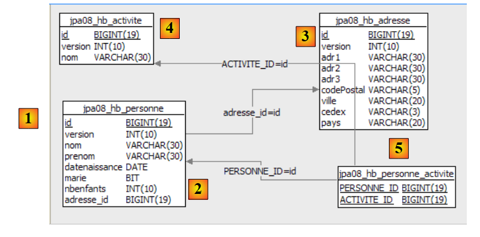 |
2.6.5. InitDB
We zullen niet uitgebreid ingaan op de klasse [InitDB], aangezien deze identiek is aan de vorige versie en dezelfde resultaten oplevert. Laten we ons beperken tot de volgende code, die de koppeling Personne <-> Activite weergeeft:
// weergave personen/activiteiten
System.out.println("[personnes/activites]");
Iterator iterator = em.createQuery("select p.id,a.id from Personne p join p.activites a").getResultList().iterator();
while (iterator.hasNext()) {
Object[] row = (Object[]) iterator.next();
System.out.format("[%d,%d]%n", (Long) row[0], (Long) row[1]);
}
- regel 3: de opdracht JPQL die de join uitvoert. Het resultaat van select geeft de ID’s weer van de entiteiten Personne en Activite, die via de join-tabel met elkaar zijn gekoppeld. De lijst die door select wordt geretourneerd, bestaat uit rijen met twee objecten van het type Long. Om deze lijst te doorlopen, vraagt regel 3 om een object van het type Iterator uit de lijst.
- regels 4-7: met behulp van het voorgaande object van het type Iterator wordt de lijst doorlopen.
- regel 5: elk element van de lijst is een array die een regel bevat die het resultaat is van de select
- regel 6: de elementen van de huidige resultaatregel van de select worden opgehaald, waarbij de juiste typewijzigingen worden aangebracht.
Het resultaat van [InitDB] is als volgt:
2.6.6. Main
De klasse [Main] voert een reeks tests uit, waarvan we er enkele zullen bespreken.
2.6.6.1. Test3
Deze test is als volgt:
// activiteit act1 verwijderen
public static void test3() {
// persistentiecontext
EntityManager em = getEntityManager();
// transactie starten
EntityTransaction tx = em.getTransaction();
tx.begin();
// activiteit act1 verwijderen uit p2
p2.getActivites().remove(act1);
// act1 wordt uit de persistentiecontext verwijderd
em.remove(act1);
// einde transacties
tx.commit();
// de nieuwe tabellen worden weergegeven
dumpPersonne();
dumpActivite();
dumpAdresse();
dumpPersonne_Activite();
}
- regel 11: de activiteit act1 wordt uit de persistentiecontext verwijderd
- regel 9: de activiteit act1 maakt deel uit van de activiteiten van de enige persoon die in de context overblijft, namelijk de persoon p2. Regel 9 verwijdert de activiteit act1 uit de activiteiten van de persoon p2. We doen dit om de persistentiecontext consistent te houden, aangezien we deze voor het verdere verloop behouden.
De resultaten zijn als volgt:
- de activiteit act1, die op regel 26 in test2 voorkomt, is verdwenen uit de activiteiten van test3 (regels 40-41)
- de persoon p2 had in test2 de activiteit act1 (regel 33). Na afloop van test3 heeft hij/zij deze niet meer (regel 47)
2.6.6.2. Test6
Deze test is als volgt:
// wijziging van de activiteiten van een persoon
public static void test6() {
// persistentiecontext
EntityManager em = getNewEntityManager();
// transactie starten
EntityTransaction tx = em.getTransaction();
tx.begin();
// de persoon p2 wordt opgehaald
p2 = em.find(Personne.class, p2.getId());
// activiteit act2 wordt opgehaald
act2 = em.find(Activite.class, act2.getId());
// p2 voert alleen nog activiteit act2 uit
p2.getActivites().clear();
p2.getActivites().add(act2);
// einde transactie
tx.commit();
// de nieuwe tabellen worden weergegeven
dumpPersonne();
dumpActivite();
dumpPersonne_Activite();
}
- regel 4: er wordt een nieuwe, lege persistentiecontext gebruikt
- regel 9: de persoon p2 wordt vanuit de database in de persistentiecontext geladen
- regel 11: de activiteit act2 wordt vanuit de database in de persistentiecontext geladen
- regel 13: de activiteiten van de persoon p2 (act3) worden vanuit de database in de context (fetchType.LAZY) geladen. Het is de aanroep [getActivites] die ervoor zorgt dat deze gegevens worden geladen. De activiteiten van p2 worden verwijderd. Het gaat hier niet om een daadwerkelijke verwijdering van activiteiten (remove), maar om een wijziging van de status van de persoon p2. Deze persoon oefent geen activiteiten meer uit.
- regel 14: aan de persoon p2 wordt de activiteit act2 toegevoegd. Uiteindelijk is de verzameling van alle nieuwe activiteiten van de persoon p2 de verzameling {act2}.
- regel 16: einde van de transactie. De synchronisatie doorloopt de objecten van de context (p2, act2, act3) en ontdekt dat de status van p2 is gewijzigd. De opdrachten SQL, die deze wijziging doorvoeren in de database, worden uitgevoerd.
- regels 18-20: alle tabellen worden weergegeven
De resultaten zijn als volgt:
- aan het einde van test 4 voerde de persoon p2 de activiteit act3 uit (regel 3).
- Na afloop van test 6 (regel 19) oefent de persoon p2 de activiteit act3 (regel 3) niet meer uit en oefent hij/zij de activiteit act2 uit.
2.6.7. Implementatie JPA / Toplink
We gebruiken nu een implementatie JPA / Toplink:
 |
Het Eclipse-project met Toplink is een kopie van het Eclipse-project met Hibernate:
 |
Het bestand <persistence.xml> [2] is op één punt gewijzigd, namelijk bij de gedeclareerde entiteiten:
<!-- provider -->
<provider>oracle.toplink.essentials.PersistenceProvider</provider>
<!-- persistente klassen -->
<class>entites.Activite</class>
<class>entites.Adresse</class>
<class>entites.Personne</class>
...
- regels 4-6: de beheerde entiteiten
Het uitvoeren van [InitDB] samen met SGBD MySQL5 levert de volgende resultaten op:
 |
In [1], de console-uitvoer, in [2] de gegenereerde tabellen [jpa07_tl], in [3] de gegenereerde scripts SQL. De inhoud ervan is als volgt:
create.sql
CREATE TABLE jpa08_tl_personne_activite (PERSONNE_ID BIGINT NOT NULL, ACTIVITE_ID BIGINT NOT NULL, PRIMARY KEY (PERSONNE_ID, ACTIVITE_ID))
CREATE TABLE jpa08_tl_activite (ID BIGINT NOT NULL, VERSION INTEGER NOT NULL, NOM VARCHAR(30) UNIQUE NOT NULL, PRIMARY KEY (ID))
CREATE TABLE jpa08_tl_personne (ID BIGINT NOT NULL, DATENAISSANCE DATE NOT NULL, MARIE TINYINT(1) default 0 NOT NULL, NOM VARCHAR(30) UNIQUE NOT NULL, NBENFANTS INTEGER NOT NULL, VERSION INTEGER NOT NULL, PRENOM VARCHAR(30) NOT NULL, adresse_id BIGINT UNIQUE NOT NULL, PRIMARY KEY (ID))
CREATE TABLE jpa08_tl_adresse (ID BIGINT NOT NULL, ADR3 VARCHAR(30), CODEPOSTAL VARCHAR(5) NOT NULL, VERSION INTEGER NOT NULL, VILLE VARCHAR(20) NOT NULL, ADR2 VARCHAR(30), CEDEX VARCHAR(3), ADR1 VARCHAR(30) NOT NULL, PAYS VARCHAR(20) NOT NULL, PRIMARY KEY (ID))
ALTER TABLE jpa08_tl_personne_activite ADD CONSTRAINT FK_jpa08_tl_personne_activite_ACTIVITE_ID FOREIGN KEY (ACTIVITE_ID) REFERENCES jpa08_tl_activite (ID)
ALTER TABLE jpa08_tl_personne_activite ADD CONSTRAINT FK_jpa08_tl_personne_activite_PERSONNE_ID FOREIGN KEY (PERSONNE_ID) REFERENCES jpa08_tl_personne (ID)
ALTER TABLE jpa08_tl_personne ADD CONSTRAINT FK_jpa08_tl_personne_adresse_id FOREIGN KEY (adresse_id) REFERENCES jpa08_tl_adresse (ID)
CREATE TABLE SEQUENCE (SEQ_NAME VARCHAR(50) NOT NULL, SEQ_COUNT DECIMAL(38), PRIMARY KEY (SEQ_NAME))
INSERT INTO SEQUENCE(SEQ_NAME, SEQ_COUNT) values ('SEQ_GEN', 1)
De uitvoering van [InitDB] en die van [Main] verlopen zonder fouten.
2.6.8. Het Eclipse-/Hibernate-project 2
We maken een Eclipse-project aan door het vorige project te kopiëren:
 |
In [1] staat het Eclipse-project, in [2] de Java-codes. Het project bevindt zich in [3] in de map met voorbeelden [4]. We zullen het importeren.
We wijzigen de relatie tussen Personne en Activité als volgt:
Person
// relatie Persoon (many) -> Activiteit (many) via een koppelingstabel personne_activite
// personne_activite(PERSONNE_ID) is een vreemde sleutel op Persoon(id)
// personne_activite(ACTIVITE_ID) is een vreemde sleutel op Activiteit(id)
// geen cascade meer op activiteiten
// @ManyToMany(cascade={CascadeType.PERSIST})
@ManyToMany()
@JoinTable(name = "jpa09_hb_personne_activite", joinColumns = @JoinColumn(name = "PERSONNE_ID"), inverseJoinColumns = @JoinColumn(name = "ACTIVITE_ID"))
private Set<Activite> activites = new HashSet<Activite>();
- regel 6: de hoofdrelatie @ManyToMany heeft geen persistentie-cascade meer van Persoon -> Activiteit (zie oude versie, regel 5)
Activiteit
// geen omgekeerde relatie meer met Persoon
// @ManyToMany(mappedBy = "activiteiten")
// private Set<Person> personen = new HashSet<Person>();
- regels 2-3: de omgekeerde relatie @ManyToMany Activiteit -> Persoon is verwijderd
We willen aantonen dat de verwijderde attributen (cascade en omgekeerde relatie) niet onmisbaar zijn. De eerste wijziging die deze nieuwe configuratie met zich meebrengt, is te vinden in [InitDB]:
// koppelingen personen <--> activiteiten
p1.getActivites().add(act1);
p1.getActivites().add(act2);
p2.getActivites().add(act1);
p2.getActivites().add(act3);
// persistentie van activiteiten
em.persist(act1);
em.persist(act2);
em.persist(act3);
// persistentie van personen
em.persist(p1);
em.persist(p2);
em.persist(p3);
// en het adres a4 dat niet aan een persoon is gekoppeld
em.persist(adr4);
- regels 7-9: we zijn verplicht om de activiteiten act1 tot en met act3 expliciet in de persistentiecontext op te nemen. Wanneer de persistentiecascade Persoon -> Activiteit bestond, werden in de regels 11-13 zowel de personen p1 tot en met p3 als de activiteiten van deze personen act1 tot en met act3 opgeslagen.
Een tweede wijziging is zichtbaar in [Main]:
// opvragen van personen die een bepaalde activiteit uitvoeren
public static void test5() {
// context van persistentie
EntityManager em = getNewEntityManager();
// begin van de transactie
EntityTransaction tx = em.getTransaction();
tx.begin();
System.out.format("1 - Personnes pratiquant l'activité act3 (JPQL) :%n");
// de activiteiten van p2 opvragen
for (Object pa : em.createQuery("select p.nom from Personne p join p.activites a where a.nom='act3'").getResultList()) {
System.out.println(pa);
}
// einde transactie
tx.commit();
}
- regels 9-12: de query JPQL die de personen oplevert die de activiteit act3 uitoefenen
- in de vorige versie werd hetzelfde resultaat ook verkregen via de omgekeerde relatie Activiteit -> Persoon, die nu is verwijderd:
// we gaan via de omgekeerde relatie van act3
System.out.format("2 - Personnes pratiquant l'activité act3 (relation inverse) :%n");
act3 = em.find(Activite.class, act3.getId());
for (Personne p : act3.getPersonnes()) {
System.out.println(p.getNom());
}
2.6.9. Het Eclipse / Toplink 2-project
We bouwen een Eclipse-project op basis van het vorige Eclipse/Toplink-project door het te kopiëren:
 |
In [1] staat het Eclipse-project, in [2] de Java-codes. Het project bevindt zich in [3] in de map met voorbeelden [4]. We zullen het importeren.
De Java-codes zijn identiek aan die van de Hibernate-versie.
2.7. Voorbeeld 7: benoemde query’s gebruiken
We sluiten deze uitgebreide presentatie van de entiteiten JPA, die in paragraaf 2 is begonnen, af met een laatste voorbeeld dat het gebruik laat zien van JPQL-query’s die in een configuratiebestand zijn ondergebracht. Dit voorbeeld is afkomstig uit de volgende bron:
[ref2]: "Getting started With JPA in Spring 2.0" van Mark Fisher op de url
[http://blog.springframework.com/markf/archives/2006/05/30/getting-started-with-jpa-in-spring-20/].
2.7.1. De voorbeelddatabase
De database is als volgt:
 |
- in [1]: een lijst met restaurants met hun naam en adres
- in [2]: de tabel met de adressen van de restaurants, beperkt tot het huisnummer en de straatnaam. Er is een één-op-één-relatie tussen de tabellen restaurant en adresse: een restaurant heeft één adres en slechts één.
- in [3]: een tabel met gerechten, hun naam en een waar/onwaar-indicator die aangeeft of het gerecht vegetarisch is of niet
- in [4]: de koppelingstabel tussen restaurants en gerechten: een restaurant serveert meerdere gerechten en hetzelfde gerecht kan door meerdere restaurants worden geserveerd. Er is een veel-op-veel-relatie tussen de tabellen restaurant en plat.
2.7.2. De @Entity-objecten die de database vertegenwoordigen
De bovenstaande tabellen worden weergegeven door de volgende @Entity's:
- de @Entity Restaurant vertegenwoordigt de tabel [restaurant]
- de @Entity Adresse vertegenwoordigt de tabel [adresse]
- de @Entity Plat vertegenwoordigt de tabel [plat]
De relaties tussen deze entiteiten zijn als volgt:
- een één-op-één-relatie verbindt de entiteit Restaurant met de entiteit Adresse: een restaurant r heeft een adres a. De entiteit Restaurant, die de vreemde sleutel bevat, heeft de hoofdrelatie. De entiteit Adresse heeft geen omgekeerde relatie.
- Een veel-op-veel-relatie verbindt de entiteiten Restaurant en Plat: een restaurant serveert meerdere gerechten en hetzelfde gerecht kan door meerdere restaurants worden geserveerd. Deze relatie wordt weergegeven door een @ManyToMany-annotatie in de entiteit Restaurant. De entiteit Plat heeft geen omgekeerde relatie.
De @Entity Restaurant is als volgt:
package entites;
...
@Entity
@Table(name = "jpa10_hb_restaurant")
public class Restaurant implements java.io.Serializable {
private static final long serialVersionUID = 1L;
@Id
@GeneratedValue(strategy = GenerationType.AUTO)
private long id;
@Column(unique = true, length = 30, nullable = false)
private String nom;
@OneToOne(cascade = CascadeType.ALL)
private Adresse adresse;
@ManyToMany(cascade = { CascadeType.PERSIST, CascadeType.MERGE })
@JoinTable(name = "jpa10_hb_restaurant_plat", inverseJoinColumns = @JoinColumn(name = "plat_id"))
private Set<Plat> plats = new HashSet<Plat>();
// constructors
public Restaurant() {
}
public Restaurant(String name, Adresse address, Set<Plat> entrees) {
...
}
// getters en setters
...
// toString
public String toString() {
String signature = "R[" + getNom() + "," + getAdresse();
for (Plat e : getPlats()) {
signature += "," + e;
}
return signature + "]";
}
}
- regel 17: de één-op-één-relatie die de entiteit Restaurant heeft met de entiteit Adresse. Alle persistentiemetingen op een restaurant worden doorgegeven naar het adres ervan.
- regel 20: de relatie die de @Entity Restaurant verbindt met de @Entity Plat uit de verzameling plats van regel 22 is van het type veel-op-veel (ManyToMany):
- een restaurant (One) heeft meerdere gerechten (Many)
- een gerecht (One) kan door meerdere restaurants (Many) worden geserveerd
- uiteindelijk zijn de @Entity's Restaurant en Plat met elkaar verbonden via een relatie ManyToMany. We besluiten dat de @Entity Restaurant de primaire relatie krijgt en dat de @Entity Plat geen omgekeerde relatie krijgt.
- De relatie @ManyToMany vereist een koppelingstabel. Deze wordt gedefinieerd met behulp van de annotatie @JoinTable op regel 47.
- Het attribuut name geeft de tabel een naam.
- De koppelingstabel bestaat uit de vreemde sleutels van de tabellen die ermee worden gekoppeld. Hier zijn er twee vreemde sleutels: één in de tabel [restaurant], de andere in de tabel [plat]. Deze kolommen met vreemde sleutels worden gedefinieerd door de attributen joinColumns en inverseJoinColumns.
- Het attribuut joinColumns definieert de vreemde sleutel in de tabel van de @Entity die de primaire relatie @ManyToMany bevat, in dit geval de tabel [restaurant]. Het attribuut joinColumns ontbreekt hier. JPA heeft in dit geval een standaardwaarde: [table]_[clé_primaire_de_table], in dit geval [jpa10_hb_restaurant_id].
- De annotatie @JoinColumn van het attribuut inverseJoinColumns definieert de vreemde sleutel in de tabel van de @Entity die de omgekeerde relatie @ManyToMany bevat, in dit geval de tabel [plat]. Deze vreemde-sleutelkolom krijgt de naam plat_id.
De @Entity Adresse ziet er als volgt uit:
package entites;
...
@Entity
@Table(name="jpa10_hb_adresse")
public class Adresse implements java.io.Serializable {
@Id
@GeneratedValue(strategy = GenerationType.AUTO)
private long id;
@Column(name = "NUMERO_RUE")
private int numeroRue;
@Column(name = "NOM_RUE", length=30, nullable=false)
private String nomRue;
// getters en setters
...
// constructors
public Adresse(int streetNumber, String streetName){
...
}
public Adresse(){
}
// toString
public String toString(){
return "A["+getNumeroRue()+","+getNomRue()+"]";
}
}
- De @Entity Adresse is een entiteit zonder directe relatie met de andere entiteiten. Deze kan alleen worden opgeslagen via de entiteit Restaurant.
- Een adres wordt gedefinieerd door een straatnaam (regel 16) en een huisnummer (regel 13).
De @Entity Plat is als volgt
package entites;
...
@Entity
@Table(name="jpa10_hb_plat")
public class Plat implements java.io.Serializable {
@Id
@GeneratedValue(strategy = GenerationType.AUTO)
private long id;
@Column(unique=true, length=50, nullable=false)
private String nom;
private boolean vegetarien;
// constructors
public Plat() {
}
public Plat(String name, boolean vegetarian) {
...
}
// getters en setters
...
// toString
public String toString() {
return "E[" + getNom() + "," + isVegetarien() + "]";
}
}
- De @Entity Plat is een entiteit zonder directe relatie met de andere entiteiten. Deze kan alleen worden opgeslagen via de entiteit Restaurant.
- Een gerecht wordt gedefinieerd door een naam (regel 12) en het type (vegetarisch of niet) (regel 14).
2.7.3. Het Eclipse-/Hibernate-project
De hier gebruikte implementatie JPA is die van Hibernate. Het Eclipse-project voor de tests is als volgt:
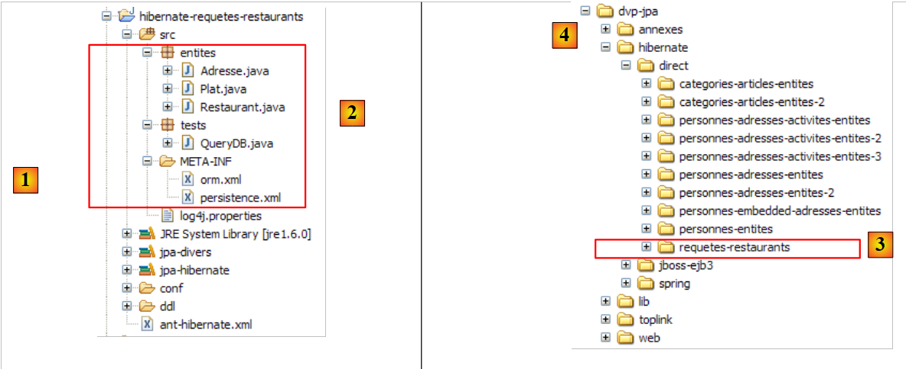 |
In [1] bevindt zich het Eclipse-project, in [2] de Java-codes en in JPA de configuratie. Opvallend is de aanwezigheid van een bestand [orm.xml] dat we nog niet eerder zijn tegengekomen. Het project is te vinden in [3] in de map met voorbeelden [4]. We zullen het importeren.
2.7.4. Genereren van het DDL-bestand uit de database
Volgens de instructies in paragraaf 2.1.7 is het DDL-bestand dat is verkregen voor de SGBD en MySQL5 als volgt:
alter table jpa10_hb_restaurant
drop
foreign key FK3E8E4F5D5FE379D0;
alter table jpa10_hb_restaurant_plat
drop
foreign key FK1D2D06D11F0F78A4;
alter table jpa10_hb_restaurant_plat
drop
foreign key FK1D2D06D1AFAC3E44;
drop table if exists jpa10_hb_adresse;
drop table if exists jpa10_hb_plat;
drop table if exists jpa10_hb_restaurant;
drop table if exists jpa10_hb_restaurant_plat;
create table jpa10_hb_adresse (
id bigint not null auto_increment,
NUMERO_RUE integer,
NOM_RUE varchar(30) not null,
primary key (id)
) ENGINE=InnoDB;
create table jpa10_hb_plat (
id bigint not null auto_increment,
nom varchar(50) not null unique,
vegetarien bit not null,
primary key (id)
) ENGINE=InnoDB;
create table jpa10_hb_restaurant (
id bigint not null auto_increment,
nom varchar(30) not null unique,
adresse_id bigint,
primary key (id)
) ENGINE=InnoDB;
create table jpa10_hb_restaurant_plat (
jpa10_hb_restaurant_id bigint not null,
plat_id bigint not null,
primary key (jpa10_hb_restaurant_id, plat_id)
) ENGINE=InnoDB;
alter table jpa10_hb_restaurant
add index FK3E8E4F5D5FE379D0 (adresse_id),
add constraint FK3E8E4F5D5FE379D0
foreign key (adresse_id)
references jpa10_hb_adresse (id);
alter table jpa10_hb_restaurant_plat
add index FK1D2D06D11F0F78A4 (plat_id),
add constraint FK1D2D06D11F0F78A4
foreign key (plat_id)
references jpa10_hb_plat (id);
alter table jpa10_hb_restaurant_plat
add index FK1D2D06D1AFAC3E44 (jpa10_hb_restaurant_id),
add constraint FK1D2D06D1AFAC3E44
foreign key (jpa10_hb_restaurant_id)
references jpa10_hb_restaurant (id);
- regels 21-26: de tabel [adresse]
- regels 28-33: de tabel [plat]
- regels 35-40: de tabel [restaurant]
- regels 42-46: de koppelingstabel [restaurant_plat]. Let op de samengestelde sleutel (regel 45)
- regels 48-52: de vreemde sleutel van de tabel [restaurant] naar de tabel [adresse]
- regels 54-58: de vreemde sleutel van de tabel [restaurant_plat] naar de tabel [plat]
- regels 60-64: de vreemde sleutel van tabel [restaurant_plat] naar tabel [restaurant]
Deze DDL komt overeen met het eerder gepresenteerde schema:
 |
In de SQL Explorer-weergave ziet de database er als volgt uit:
 |
- in [1]: de 4 tabellen van de database
- in [2]: de adressen
- in [3]: de gerechten
- in [4]: de restaurants. [adresse_id] verwijst naar de adressen uit [2].
- in [5]: de koppelingstabel [restaurant,plat]. [jpa10_hb_restaurant_id] verwijst naar de restaurants uit [4] en [plat_id] naar de gerechten uit [3]. [1,1] betekent dus dat het restaurant "Burger Barn" het gerecht "CheeseBurger" serveert.
Om de bovenstaande gegevens te verkrijgen, is het programma [QueryDB] van het Eclipse-project uitgevoerd.
2.7.5. JPQL-query's met een Hibernate-console
We maken een Hibernate-console aan die gekoppeld is aan het vorige Eclipse-project. We volgen daarbij de werkwijze die al tweemaal is beschreven, met name in paragraaf 2.1.12.
 |
- in [1] en [2]: de configuratie van de Hibernate-console
 |
- in [3]: een query JPQL en in [4] het resultaat.
- in [5]: de gelijkwaardige opdracht SQL
We presenteren nu een reeks query's JPQL. De lezer wordt uitgenodigd om deze uit te voeren en de door Hibernate gegenereerde opdracht SQL te ontdekken die nodig is om ze uit te voeren.
Alle restaurants met hun gerechten ophalen:
 | 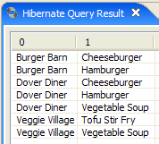 |
De restaurants ophalen die ten minste één vegetarisch gerecht serveren:
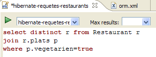 |  |
De namen opvragen van restaurants die uitsluitend vegetarische gerechten serveren:
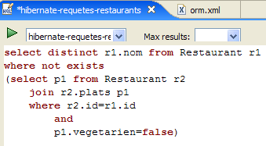 | 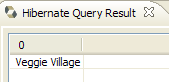 |
De restaurants opzoeken die hamburgers serveren:
 |  |
2.7.6. QueryDB
We richten ons nu op het programma [QueryDB] van het Eclipse-project, dat:
- de database
- daarop een aantal verzoeken JPQL verstuurt. Deze worden opgeslagen in het bestand [META-INF/orm.xml] van het Eclipse-project:
 |
Het bestand [orm.xml] kan worden gebruikt om de laag JPA te configureren in plaats van Java-annotaties. Dit biedt flexibiliteit bij het configureren van de laag JPA. Deze kan worden gewijzigd zonder de Java-code opnieuw te compileren. Beide methoden kunnen tegelijkertijd worden gebruikt: Java-annotaties en het bestand [orm.xml]. De configuratie JPA wordt eerst uitgevoerd met de Java-annotaties en vervolgens met het bestand [orm.xml]. Als men dus een configuratie die met een Java-annotatie is gemaakt wil wijzigen zonder te hercompileren, volstaat het om deze configuratie in [orm.xml] op te nemen. Dit bestand heeft dan de voorrang.
In ons voorbeeld wordt het bestand [orm.xml] gebruikt om de teksten van de JPQL-query’s op te slaan. De inhoud ervan is als volgt:
<?xml version="1.0" encoding="UTF-8" ?>
<entity-mappings xmlns="http://java.sun.com/xml/ns/persistence/orm" xmlns:xsi="http://www.w3.org/2001/XMLSchema-instance"
xsi:schemaLocation="http://java.sun.com/xml/ns/persistence/orm http://java.sun.com/xml/ns/persistence/orm_1_0.xsd" version="1.0">
<description>Restaurants</description>
<named-query name="supprimer le contenu de la table restaurant">
<query>delete from Restaurant</query>
</named-query>
<named-query name="supprimer le contenu de la table plat">
<query>delete from Plat</query>
</named-query>
<named-query name="obtenir tous les restaurants">
<query>select r from Restaurant r order by r.nom asc</query>
</named-query>
<named-query name="obtenir toutes les adresses">
<query>select a from Adresse a order by a.nomRue asc</query>
</named-query>
<named-query name="obtenir tous les plats">
<query>select p from Plat p order by p.nom asc</query>
</named-query>
<named-query name="obtenir tous les restaurants avec leurs plats">
<query>select r.nom,p.nom from Restaurant r join r.plats p</query>
</named-query>
<named-query name="obtenir les restaurants ayant au moins un plat vegetarien">
<query>select distinct r from Restaurant r join r.plats p where p.vegetarien=true</query>
</named-query>
<named-query name="obtenir les restaurants avec uniquement des plats vegetariens">
<query>
select distinct r1.nom from Restaurant r1 where not exists (select p1 from Restaurant r2 join r2.plats p1 where r2.id=r1.id and
p1.vegetarien=false)
</query>
</named-query>
<named-query name="obtenir les restaurants d'une certaine rue">
<query>select r from Restaurant r where r.adresse.nomRue=:nomRue</query>
</named-query>
<named-query name="obtenir les restaurants qui servent des burgers">
<query>select r.nom,r.adresse.numeroRue, r.adresse.nomRue, p.nom from Restaurant r join r.plats p where p.nom like '%burger'</query>
</named-query>
<named-query name="obtenir les plats du restaurant untel">
<query>select p.nom from Restaurant r join r.plats p where r.nom=:nomRestaurant</query>
</named-query>
</entity-mappings>
- de root van het bestand [orm.xml] is <entity-mappings> (regel 2).
- regels 5-7: de genoemde query's JPQL worden omgeven door tags <named-query name= "... ">tekst</namedquery>.
- Het attribuut name van de tag is de naam van de zoekopdracht.
- De inhoud texte van de tag is de tekst van de query.
QueryDB voert de voorgaande query's uit. De code ervan is als volgt:
package tests;
...
public class QueryDB {
// persistentiecontext
private static EntityManagerFactory emf = Persistence.createEntityManagerFactory("jpa");
private static EntityManager em = emf.createEntityManager();
public static void main(String[] args) {
// transactie starten
EntityTransaction tx = em.getTransaction();
tx.begin();
// elementen uit de tabel verwijderen [restaurant]
em.createNamedQuery("supprimer le contenu de la table restaurant").executeUpdate();
// elementen uit de tabel verwijderen [plat]
em.createNamedQuery("supprimer le contenu de la table plat").executeUpdate();
// Aanmaken van Address-objecten
Adresse adr1 = new Adresse(10, "Main Street");
Adresse adr2 = new Adresse(20, "Main Street");
Adresse adr3 = new Adresse(123, "Dover Street");
// Aanmaken van Entree-objecten
Plat ent1 = new Plat("Hamburger", false);
Plat ent2 = new Plat("Cheeseburger", false);
Plat ent3 = new Plat("Tofu Stir Fry", true);
Plat ent4 = new Plat("Vegetable Soup", true);
// Restaurant-objecten aanmaken
Restaurant restaurant1 = new Restaurant();
restaurant1.setNom("Burger Barn");
restaurant1.setAdresse(adr1);
restaurant1.getPlats().add(ent1);
restaurant1.getPlats().add(ent2);
Restaurant restaurant2 = new Restaurant();
restaurant2.setNom("Veggie Village");
restaurant2.setAdresse(adr2);
restaurant2.getPlats().add(ent3);
restaurant2.getPlats().add(ent4);
Restaurant restaurant3 = new Restaurant();
restaurant3.setNom("Dover Diner");
restaurant3.setAdresse(adr3);
restaurant3.getPlats().add(ent1);
restaurant3.getPlats().add(ent2);
restaurant3.getPlats().add(ent4);
// persistentie van Restaurant-objecten (en andere objecten via cascade)
em.persist(restaurant1);
em.persist(restaurant2);
em.persist(restaurant3);
// einde transactie
tx.commit();
// database-dump
dumpDataBase();
// einde EntityManager
em.close();
// einde EntityManagerFactory
emf.close();
}
// weergave van de inhoud van de database
@SuppressWarnings("unchecked")
private static void dumpDataBase() {
// test2
log("données de la base");
// transactie starten
EntityTransaction tx = em.getTransaction();
tx.begin();
// weergaven van restaurants
log("[restaurants]");
for (Object restaurant : em.createNamedQuery("obtenir tous les restaurants").getResultList()) {
System.out.println(restaurant);
}
// weergaven van adressen
log("[adresses]");
for (Object adresse : em.createNamedQuery("obtenir toutes les adresses").getResultList()) {
System.out.println(adresse);
}
// weergaven van gerechten
log("[plats]");
for (Object plat : em.createNamedQuery("obtenir tous les plats").getResultList()) {
System.out.println(plat);
}
// weergaven van koppelingen tussen restaurants en gerechten
log("[restaurants/plats]");
Iterator record = em.createNamedQuery("obtenir tous les restaurants avec leurs plats").getResultList().iterator();
while (record.hasNext()) {
Object[] currentRecord = (Object[]) record.next();
System.out.format("[%s,%s]%n", currentRecord[0], currentRecord[1]);
}
log("[Liste des restaurants avec au moins un plat végétarien]");
for (Object r : em.createNamedQuery("obtenir les restaurants ayant au moins un plat vegetarien").getResultList()) {
System.out.println(r);
}
// query
log("[Liste des restaurants avec seulement des plats végétariens]");
for (Object r : em.createNamedQuery("obtenir les restaurants avec uniquement des plats vegetariens").getResultList()) {
System.out.println(r);
}
// zoekopdracht
log("[Liste des restaurants dans Dover Street]");
for (Object r : em.createNamedQuery("obtenir les restaurants d'une certaine rue").setParameter("nomRue", "Dover Street").getResultList()) {
System.out.println(r);
}
// zoekopdracht
log("[Liste des restaurants ayant un plat de type burger]");
record = em.createNamedQuery("obtenir les restaurants qui servent des burgers").getResultList().iterator();
while (record.hasNext()) {
Object[] currentRecord = (Object[]) record.next();
System.out.format("[%s,%d,%s,%s]%n", currentRecord[0], currentRecord[1], currentRecord[2], currentRecord[3]);
}
// zoekopdracht
log("[Plats de Veggie Village]");
for (Object r : em.createNamedQuery("obtenir les plats du restaurant untel").setParameter("nomRestaurant", "Veggie Village").getResultList()) {
System.out.println(r);
}
// einde transactie
tx.commit();
}
// logs
private static void log(String message) {
System.out.println(" -----------" + message);
}
}
Het resultaat van de uitvoering van [QueryDB] is als volgt:
We laten het aan de lezer over om het verband tussen de code en de resultaten te leggen. Hiervoor raden we aan om de query’s JPQL in de Hibernate-console uit te voeren en de bijbehorende code SQL te bekijken.
2.7.7. Het Eclipse-/Toplink-project
De geïnteresseerde lezer vindt in de voorbeelden die bij deze tutorial kunnen worden gedownload het vorige project, geïmplementeerd met Toplink:
 |
Het Eclipse-project met Toplink is een kopie van het Eclipse-project met Hibernate:
 |
Het bestand <persistence.xml> [2] definieert de beheerde entiteiten:
<!-- provider -->
<provider>oracle.toplink.essentials.PersistenceProvider</provider>
<!-- persistente klassen -->
<class>entites.Restaurant</class>
<class>entites.Adresse</class>
<class>entites.Plat</class>
...
- regels 4-6: de beheerde entiteiten
De JPQL-query's die zijn opgeslagen in [orm.xml] worden correct uitgevoerd door Toplink. Daarom was er in het vorige project op gelet dat er geen HQL-query's (Hibernate Query Language) werden gebruikt, aangezien dit in feite een superverzameling is van JPQL en bepaalde syntaxisvormen daarvan niet worden geaccepteerd door JPQL.
2.8. Conclusion
Hiermee ronden we onze bespreking van de entiteiten JPA af. Het was een uitgebreid onderwerp, en toch zijn er belangrijke zaken (voor de gevorderde ontwikkelaar) buiten beschouwing gelaten. Ook hier wordt aangeraden een naslagwerk te lezen, zoals het boek dat voor deze tutorial is gebruikt:
[ref1]: Java Persistence with Hibernate, van Christian Bauer en Gavin King, uitgegeven door Manning.